Acts
Read each chapter first, then work through Jim’s questions for that chapter. His wording is unchanged, including punctuation and typographical quirks.
Outline of the Book
The outline used in this study is the result of using two keys in Acts. The first and most obvious one is the theme verse, Acts 1:8, "But you will receive power when the Holy Spirit comes on you; and you will be My witnesses in Jerusalem, and in all Judea and Samaria, and to the ends of the earth."
The second key is the use Luke makes of "progress reports" which are sprinkled throughout the book (cf. 2:47; 6:7; 9:31; 12:24; 16:5; 19:20; 28:30-31). Because Luke does not use a precise formula there is some debate as to the location of other progress reports (cf. 2:41; 4:31; 5:42; 8:25, 40; etc.). However, these other statements either do not have the same sense of summary or they lack finality.
The beautiful correlation of these two factors—the key verse of Acts 1:8 and the seven progress reports—form the basis of the following outline.
Outline of Acts
I. The Witness in Jerusalem (1:1-6:7)
A. The expectation of the chosen (chaps. 1-2)
1. The introduction (1:1-5)
2. The internment at Jerusalem (1:6-26)
3. The inception of the church (chap. 2)
Progress report no. 1: "And the Lord added to their number daily those who were being saved" (2:47).
B. The expansion of the church at Jerusalem (3:1-6:7)
1. Opposition to the church (3:1-4:31)
2. Correction in the church (4:32-5:11)
3. Progression in the church (5:12-42)
4. Administration in the church (6:1-7)
Progress report no. 2: "So the Word of God spread. The number of disciples in Jerusalem increased rapidly" (6:7).
II. The Witness in all Judea and Samaria (6:8-9:31)
A. The martyrdom of Stephen (6:8-8:1a)
1. The arrest of Stephen (6:8-7:1)
2. The address of Stephen (7:2-53)
3. The attack on Stephen (7:54-8:1a)
B. The ministry of Philip (8:1b-40)
1. In Samaria (8:1b-25)
2. To the Ethiopian eunuch (8:26-40)
C. The message of Saul (9:1-31)
1. The conversion of Saul (9:1-19a)
2. The conflicts of Saul (9:19b-31)
Progress report no. 3: "Then the church throughout Judea, Galilee, and Samaria... was strengthened; and [it was] encouraged by the Holy Spirit, it grew in numbers, living in the fear of the Lord" (9:31).
III. The Witness to the Extremity of the Earth (9:32-28:31)
A. The extension of the church to Antioch (9:32-12:24) 1. The preparation of Peter for a universal gospel (9:32-10:48)
2. The preparation of the apostles for a universal gospel (11:1-18)
3. The preparation of the church at Antioch for a universal gospel (11:19-30) 4. The persecution of the church at Jerusalem (12:1-24)
Progress report no. 4: "But the Word of God continued to increase and spread" (12:24).
B. The extension of the church in Asia Minor (12:25-16:5)
1. The call and dedication of Barnabas and Saul (12:25-13:3)
[First missionary journey, chaps. 13-14]
2. The circuit in Asia Minor (13:4-14:28)
3. The conference at Jerusalem (15:1-35)
4. The confirmation of the churches in Asia Minor (15:36-16:5)
[Second missionary journey, 15:36-18:22]
Progress report no. 5: "So the churches were strengthened in the faith and grew daily in numbers" (16:5).
C. The extension of the church in the Aegean area (16:6-19:20)
1. The call to Macedonia (16:6-10)
2. The conflicts in Macedonia (16:11-17:15)
3. The crusade in Achaia (17:16-18:18)
4. The conclusion of the second missionary journey (18:19-22)
5. The conquest of Ephesus (18:23-19:20)
[Third missionary journey, 18:23-21:16]
Progress report no. 6: "In this way the Word of the Lord spread widely and grew in power" (19:20).
D. The extension of the church to Rome (19:21-28:31)
1. The completion of the third journey (19:21-21:16)
2. The captivity at Jerusalem (21:17-23:32)
3. The captivity at Caesarea (23:33-26:32)
4. The captivity at Rome (chaps. 27-28)
Progress report no. 7: "Paul... welcomed all who came to see him. Boldly and without hindrance he preached the kingdom of God and taught about the Lord Jesus Christ" (28:30-31).
The Bible Knowledge Commentary: An Exposition of the Scriptures by Dallas Seminary Faculty.
Introduction
Contents:
Title of the Book
Purpose of Acts
Sources Luke May Have Used
Date of the Book
Outline of the Book
Among the New Testament writings, Acts stands out as singular and unique. This claim is made on the basis of several considerations. For one, it is the only historical sequel to the four Gospels in the canonical writings. No other narrative in the New Testament continues the accounts given by the four evangelists.
Furthermore, this book forms a background and setting for most of Paul's writings. Bruce writes, "But it is Luke that we have to thank for the coherent record of Paul's apostolic activity. Without [Acts], we should be incalculably poorer. Even with it, there is much in Paul's letters that we have difficulty in understanding; how much more there would be if we had no Book of Acts" (F.F. Bruce, Commentary on the Book of the Acts, p. 27).
The Book of Acts gives today's Christians basic information and insights into the early church. Luke portrays the tensions, persecutions, frustrations, theological problems, and hopes confronting the neophyte bride of Christ. How great would be the church's lack without the material in Acts!
In addition, Acts marks the transition from the work of God provincially among the Jews to His establishment of the universal church. In a real sense the reader goes from Jerusalem to the uttermost part of the world in these 28 chapters.
Besides all these, Acts presents a stimulating challenge to every Christian today. The zeal, the faith, the joy, the commitment, and the obedience of those early saints is an example to all believers. It is crucial for followers of Jesus Christ to be as intimately acquainted with this book as possible. As Rackham affirms, "We can hardly overestimate the importance of the Acts of the Apostles" (Richard Belward Rackham, The Acts of the Apostles, p. xiii).
Title of the Book
The earliest extant evidence for the name "Acts" is found in an anti-Marcionite Prologue to the Gospel of Luke, a work dated between a.d. 150 and 180. How or why it received this title is open to speculation.
It must be conceded that "Acts" is not an accurate title because the book by no means contains all the acts of all the apostles. Only Peter and Paul are emphasized. The great Apostle John is mentioned, but none of his words are recorded. The death of John's brother James is given in one brief sentence (Acts 12:12).
The work more accurately could be titled "Certain Acts of Certain Apostles." However, the title "The Acts of the Apostles" is so well established it identifies this work of Luke very well.
Purpose of Acts
Under the inspiration of the Holy Spirit Luke certainly had a purpose in writing. What was he intending to accomplish? To put it another way, why did he select the materials he chose for the book? To this question there are two answers.
On the one hand some say the primary purpose is a historical one; on the other hand some say the goal is apologetic, that is, it is a written defense. All acknowledge there are subsidiary ends, but the question revolves around its primary purpose.
The view that the purpose of Acts is a Pauline apologetic is buttressed by the amazing set of parallels between Peter and Paul (see chart "Miracles by Peter and Paul").
Perhaps Luke intended in this way to defend Paul's apostleship; Paul certainly did not rate behind Peter in power and authority. This may also account for the three accounts of Paul's conversion (chaps. 9; 22; 26). But though there are striking parallels between Peter's and Paul's ministries, the vindication of Paul's apostleship can hardly be the book's primary purpose. There is just too much in the book that would be extraneous to this goal. How does the appointment of the Seven in Acts 6 or the detailed description of the shipwreck in Acts 27 further that end?
Most recognize that Acts shows the universality of Christianity. Is this its primary purpose? The gospel goes to Samaritans, the Ethiopian eunuch, Cornelius, Gentiles at Antioch, poor and wealthy, educated and uneducated, women and men, the high and lofty as well as those in humble positions. This approach also helps explain the emphasis on the Jerusalem Council described in Acts 15. However, this again does not explain certain elements in the book such as the choice of Matthias in Acts 1 or the selection of the Seven in Acts 6.
The question remains, what is the primary purpose of Acts? F.F. Bruce, a representative of those who believe the goal is an apologetic one, affirms, "Luke is, in fact, one of the first Christian apologists. In that particular type of apologetic which is addressed to the secular authorities to establish the law-abiding character of Christianity he is absolutely the pioneer" (Bruce, Acts, p. 24; cf. F.J. Foakes Jackson and Kirsopp Lake, eds., The Beginnings of Christianity, vol. 2, Prolegomena II: Criticism. Grand Rapids: Baker Book House, 1979, pp. 177-87). There is much in Acts to substantiate the idea that the book was written to defend Christianity before Roman rulers.
The persecution in Acts is always religious except in two locations—Philippi (chap. 16) and Ephesus (chap. 19). In both of these the opposition was due to vested interests. In every other case the persecutions arose from Jewish sources.
It may be debated, however, whether the primary purpose of Acts is apologetic, even though much in the book substantiates that view. Why include the shipwreck of Acts 27, for instance? Another objection to the concept of an apologetic purpose is the close association of Luke's Gospel with Acts. It is patently clear that Luke-Acts is a two-part work; Acts 1:1 is evidence enough of this. Acts, then, can hardly be apologetic in its primary purpose because there is little in the Gospel of Luke which reveals such an intention.
By far the most popular view of the purpose of Acts is the one which states that it is a historical one. According to this approach Luke's goal was to record the spread of the gospel message from Jerusalem to Judea to Samaria and to the ends of the earth (1:8). Barclay asserts, "Luke's great aim was to show the expansion of Christianity, to show how that religion which began in a little corner of Palestine had in a little more than 30 years reached Rome" (William Barclay, The Acts of the Apostles, p. xvii). This explains the transition from a Jewish ministry to a Gentile one, and from Peter to Paul. In addition, this view suits the historical outlook of Acts 1:1 with Luke 1:1-4. The prologue of Luke 1:1-4 is that of a historian like Herodotus, Thucydides, or Polybius. It is quite clear that Luke was writing history in both books.
But is Luke only a historiographer? Luke-Acts is history but it is also intensely theological and especially eschatological. The Book of Acts opens with an eschatological question (1:6) and concludes with eschatological terminology ("the kingdom of God," 28:31). In addition there is a stress on God's sovereignty. In spite of intense opposition of every kind, the Word of God spreads and people respond. Nothing can stop the steady growth of Christianity. The purpose of the Book of Acts may be stated as follows: To explain with the Gospel of Luke the orderly and sovereignly directed progress of the kingdom message from Jews to Gentiles, and from Jerusalem to Rome. In Luke's Gospel the question is answered, "If Christianity has its roots in the Old Testament and in Judaism, how did it become a worldwide religion?" The Book of Acts continues in the vein of the Gospel of Luke to answer the same problem.
Alongside this worldwide progression there is an emphasis on eschatology in both Luke and Acts. The prophetic expression kingdom of God occurs in Luke 32 times and in Acts 6 times besides the allusions to God's kingdom in 1:6 and 20:25 (cf. 1:3; 8:12; 14:22; 19:8; 28:23, 31). In addition there are many references to eschatology in other terminology and by inference (1:11; 2:19-21, 34-35; 3:19-25; 6:14; 10:42; 13:23-26, 32-33; 15:15-18; 17:3, 7, 31; 20:24-25, 32; 21:28; 23:6; 24:15-17, 21, 25; 26:6-8, 18; 28:20). Obviously, the church in the present Age is heavily accented, but the church also is seen as an heir of the kingdom. It may be concluded, then, that Luke shows how the kingdom message moved from mostly Jews to mostly Gentiles and from Jerusalem to Rome.
This progression is directed in an orderly and sovereign way. One theme that runs as a heavy cord in the fabric of the book is God's sovereignty. In spite of strong opposition, under the Lord's direction the Word of the Lord grew and spread. Thus the purpose of Luke in writing Acts is to show how it is God's intention for His millennial kingdom to include a population of believers taken from Jews and Gentiles during this Age.
If this purpose statement is accepted, it does not rule out the previous suggestions. It includes both Peter and Paul as prime characters, Peter the minister to the circumcised, and Paul to the uncircumcised. The universality of the gospel is part of Luke's emphasis in both his Gospel and here in Acts. Certainly the progression of the book, declared in 1:8, fits into this statement. All of these contribute to the overall purpose of Luke in penning this work.
Miracles by Peter and Paul
Peter
Acts 3:1-11Healed a man lame from birth
5:15-16Peter's shadow healed people
5:17Success caused Jewish jealousy
8:9-24Dealt with Simon, a sorcerer
9:36-41Raised Dorcas to life
Paul
14:8-18Healed a man lame from birth
19:11-12Handkerchiefs and aprons from Paul healed people
13:45Success caused Jewish jealousy
13:6-11Dealt with Bar-Jesus, a sorcerer
20:9-12Raised Eutychus to life
Sources Luke May Have Used
Under the inspiration of the Holy Spirit Luke probably used a number of sources. First and primary were his own personal experiences. This is most clearly seen in the "we" sections of Acts (16:10-40; 20:5-28:31). A second source of information would have been Paul, with whom Luke spent much time. The apostle's conversion and his experiences in ministry undoubtedly would have been discussed by the two in their time together. A third source is seen in the other witnesses whom Luke contacted (cf. 20:4-5; 21:15-19). In Acts 21:18-19 James is mentioned as being one with whom Luke met. James certainly would have been able to convey information about the very first chapters in Acts! In fact, the early chapters of Acts seem to betray an Aramaic source. Furthermore, while Paul was incarcerated for two years in Caesarea (24:27), Luke would have been free to carry out thorough investigative work in Palestine (Luke 1:2-3). Having carefully researched eyewitness accounts, Luke, by the Spirit's direction, penned the Book of Acts.
Date of the Book
The writing of Acts must have taken place before the destruction of Jerusalem in a.d. 70.
Certainly an event of such magnitude would not have been ignored. This is especially true in light of one of the basic themes of the book: God's turning to the Gentiles from the Jews because of the Jews' rejection of Jesus Christ.
Luke scarcely would have omitted an account of Paul's death, traditionally dated from a.d. 66-68, if it had occurred before he wrote Acts.
Nor did Luke mention the Neronian persecutions which began after the great fire of Rome in a.d. 64.
Furthermore, a defense of Christianity before Nero by using the Book of Acts to appeal to what lower officials had ruled regarding Paul would have had little point at the time of the Neronian antagonism. At that time Nero was so intent on destroying the church, the defense set forth in Acts would have had little effect in dissuading him.
The date usually accepted by conservative scholars for the writing of Acts is around a.d. 60-62. Accordingly the place of writing would be Rome or possibly both Caesarea and Rome. At the time of writing Paul's release was either imminent or had just taken place.
The Bible Knowledge Commentary: An Exposition of the Scriptures by Dallas Seminary Faculty.
Charts, maps, and diagrams
These are Jim’s study visuals. Hole-punch marks, phantom scan lines, and page-edge artifacts have been cleaned; the drawings themselves are unchanged.
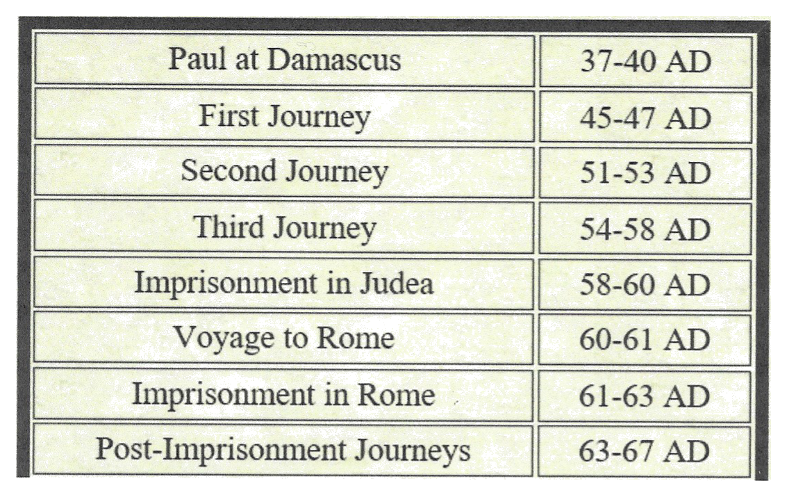
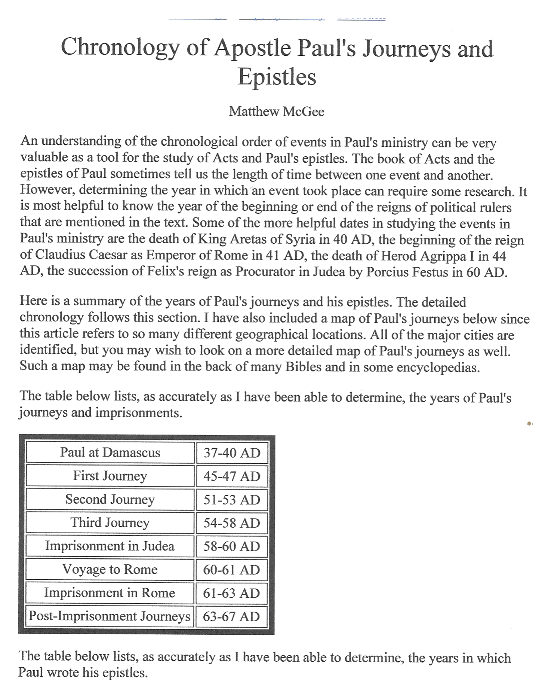
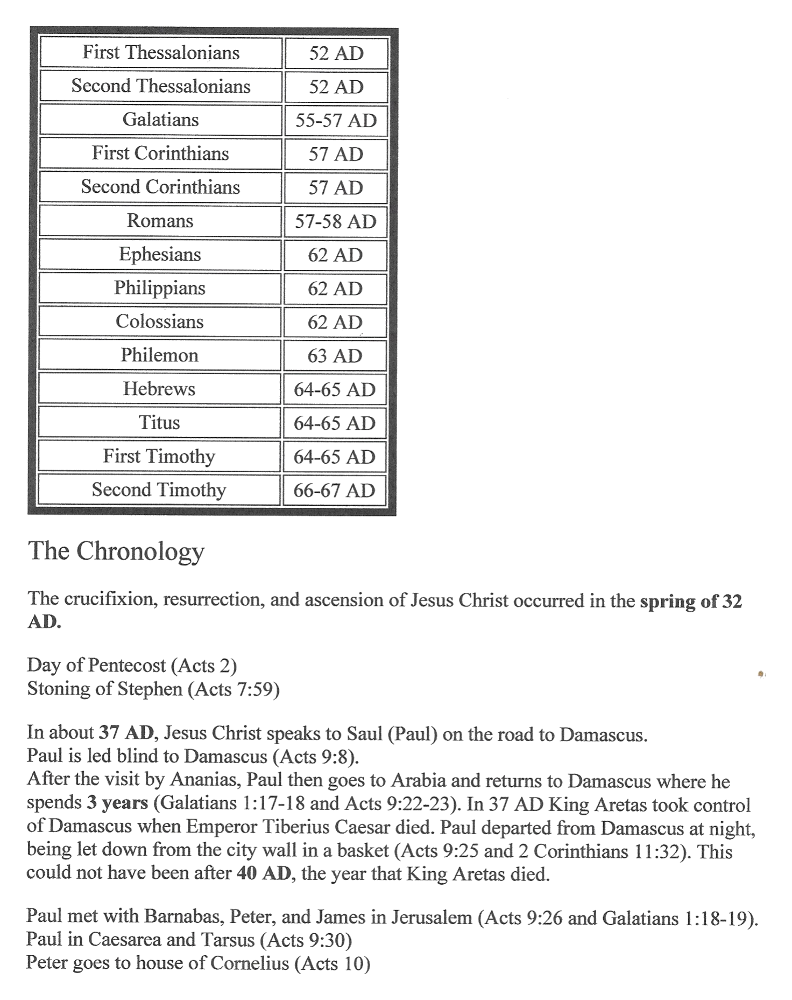
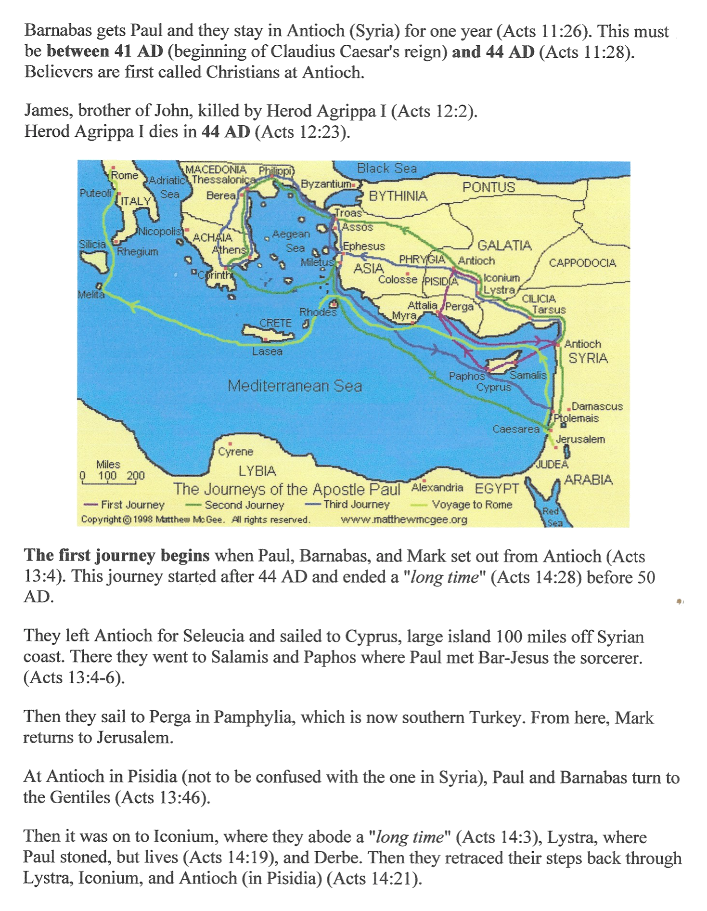
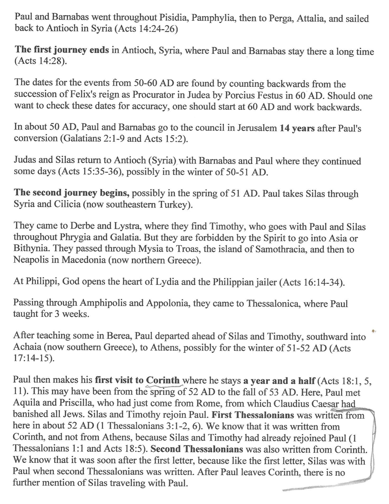
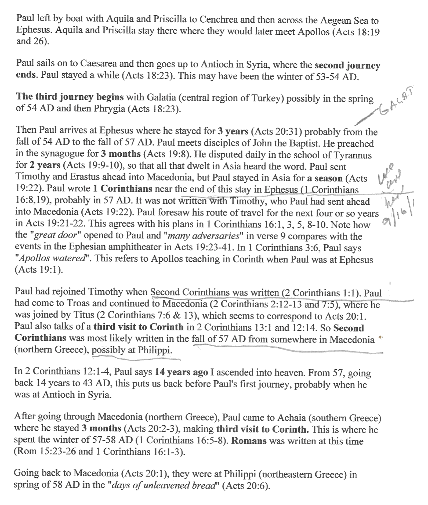
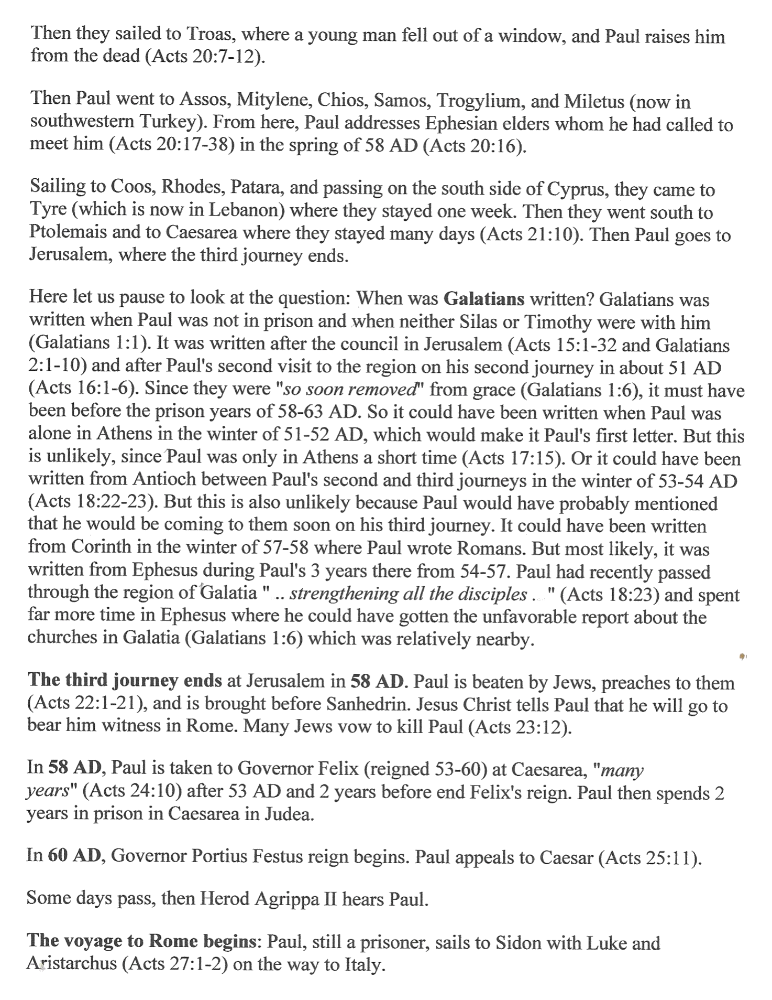
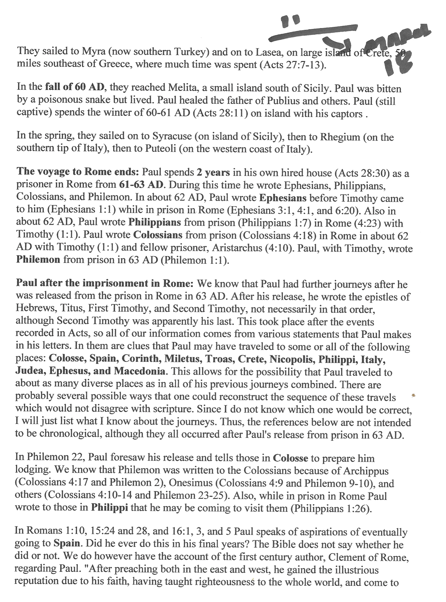
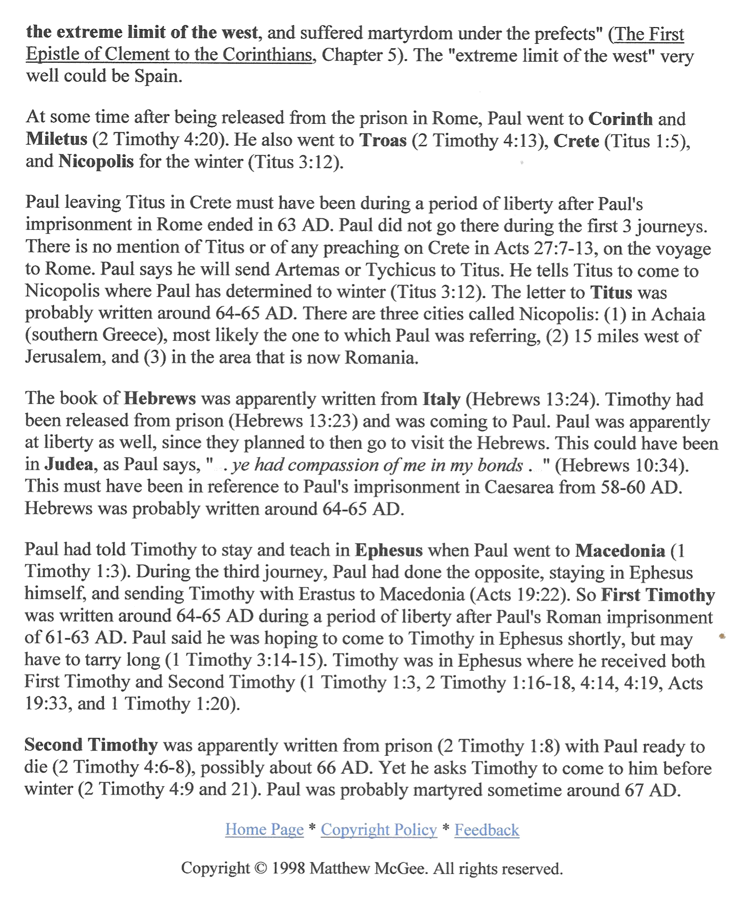
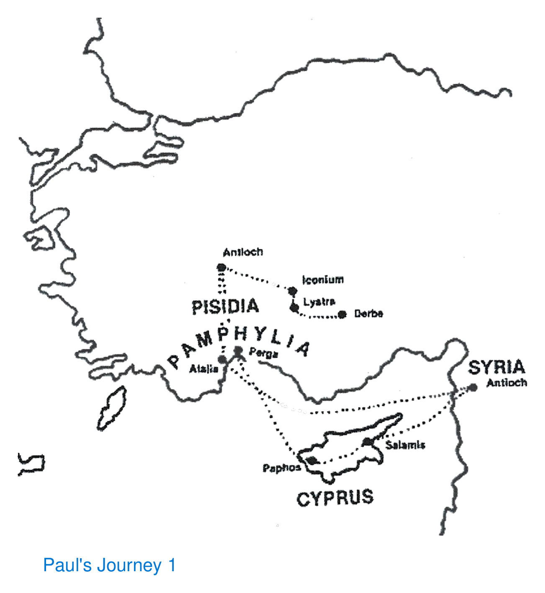
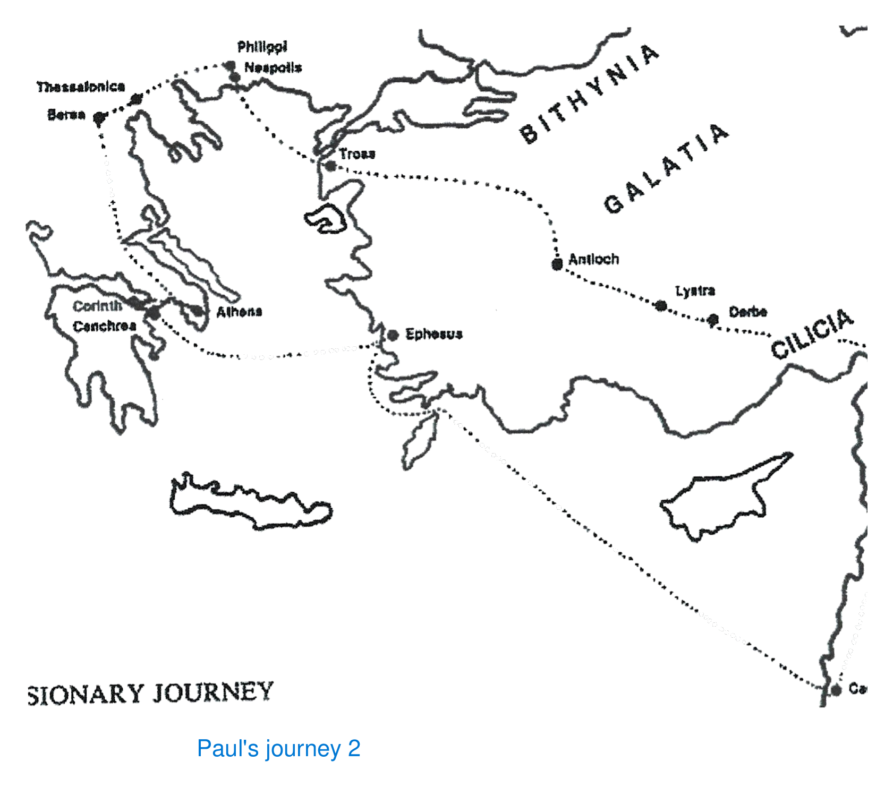
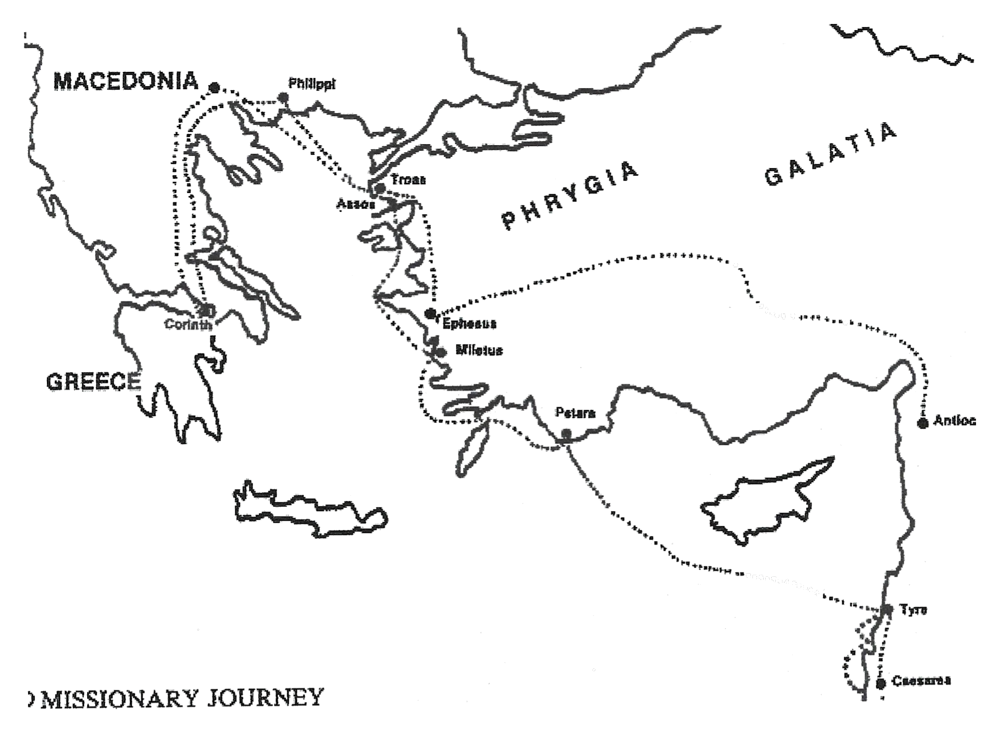
Chapter 1
Acts 1 Packet
Acts 1 (King James Version)
1The former treatise have I made, O Theophilus, of all that Jesus began both to do and teach, 2Until the day in which he was taken up, after that he through the Holy Ghost had given commandments unto the apostles whom he had chosen: 3To whom also he shewed himself alive after his passion by many infallible proofs, being seen of them forty days, and speaking of the things pertaining to the kingdom of God: 4And, being assembled together with them, commanded them that they should not depart from Jerusalem, but wait for the promise of the Father, which, saith he, ye have heard of me. 5For John truly baptized with water; but ye shall be baptized with the Holy Ghost not many days hence. 6When they therefore were come together, they asked of him, saying, Lord, wilt thou at this time restore again the kingdom to Israel? 7And he said unto them, It is not for you to know the times or the seasons, which the Father hath put in his own power. 8But ye shall receive power, after that the Holy Ghost is come upon you: and ye shall be witnesses unto me both in Jerusalem, and in all Judaea, and in Samaria, and unto the uttermost part of the earth. 9And when he had spoken these things, while they beheld, he was taken up; and a cloud received him out of their sight. 10And while they looked stedfastly toward heaven as he went up, behold, two men stood by them in white apparel; 11Which also said, Ye men of Galilee, why stand ye gazing up into heaven? this same Jesus, which is taken up from you into heaven, shall so come in like manner as ye have seen him go into heaven. 12Then returned they unto Jerusalem from the mount called Olivet, which is from Jerusalem a sabbath day’s journey. 13And when they were come in, they went up into an upper room, where abode both Peter, and James, and John, and Andrew, Philip, and Thomas, Bartholomew, and Matthew, James the son of Alphaeus, and Simon Zelotes, and Judas the brother of James. 14These all continued with one accord in prayer and supplication, with the women, and Mary the mother of Jesus, and with his brethren. 15And in those days Peter stood up in the midst of the disciples, and said, (the number of names together were about an hundred and twenty,) 16Men and brethren, this scripture must needs have been fulfilled, which the Holy Ghost by the mouth of David spake before concerning Judas, which was guide to them that took Jesus. 17For he was numbered with us, and had obtained part of this ministry. 18Now this man purchased a field with the reward of iniquity; and falling headlong, he burst asunder in the midst, and all his bowels gushed out. 19And it was known unto all the dwellers at Jerusalem; insomuch as that field is called in their proper tongue, Aceldama, that is to say, The field of blood. 20For it is written in the book of Psalms, Let his habitation be desolate, and let no man dwell therein: and his bishoprick let another take. 21Wherefore of these men which have companied with us all the time that the Lord Jesus went in and out among us, 22Beginning from the baptism of John, unto that same day that he was taken up from us, must one be ordained to be a witness with us of his resurrection. 23And they appointed two, Joseph called Barsabas, who was surnamed Justus, and Matthias. 24And they prayed, and said, Thou, Lord, which knowest the hearts of all men, shew whether of these two thou hast chosen, 25That he may take part of this ministry and apostleship, from which Judas by transgression fell, that he might go to his own place. 26And they gave forth their lots; and the lot fell upon Matthias; and he was numbered with the eleven apostles.Jim’s questions
-
1)Who is this written to? V 1
Acts 1:1 (KJV) 1 The former treatise have I made, O Theophilus, of all that Jesus began both to do and teach,Answer:
-
Thought Question - Have we seen or heard of him before? -
Acts 1:1 (KJV) 1 The former treatise have I made, O Theophilus, of all that Jesus began both to do and teach,Answer:
-
3)Who was taken up? V 2
Acts 1:2 (KJV) 2 Until the day in which he was taken up, after that he through the Holy Ghost had given commandments unto the apostles whom he had chosen:Answer:
-
4)How did Jesus give commandments to His apostles? V 2 .
Acts 1:2 (KJV) 2 Until the day in which he was taken up, after that he through the Holy Ghost had given commandments unto the apostles whom he had chosen:Answer:
-
5)How many days was Jesus with His apostles after His resurrection? V 3
Acts 1:3 (KJV) 3 To whom also he shewed himself alive after his passion by many infallible proofs, being seen of them forty days, and speaking of the things pertaining to the kingdom of God:Answer:
-
6)What did He speak of during this time? V 3 .
Acts 1:3 (KJV) 3 To whom also he shewed himself alive after his passion by many infallible proofs, being seen of them forty days, and speaking of the things pertaining to the kingdom of God:Answer:
-
7)Who did they wait for in Jerusalem after Jesus departed? V
Acts 1:4 (KJV) 4 And, being assembled together with them, commanded them that they should not depart from Jerusalem, but wait for the promise of the Father, which, saith he, ye have heard of me.Answer:
-
8)Who or what was the promise of the Father? V 5
Acts 1:5 (KJV) 5 For John truly baptized with water; but ye shall be baptized with the Holy Ghost not many days hence.Answer:
-
9)What did the apostles ask Jesus? V 6
Acts 1:6 (KJV) 6 When they therefore were come together, they asked of him, saying, Lord, wilt thou at this time restore again the kingdom to Israel?Answer:
-
10)What did Jesus answer? V 7 -8
Acts 1:7-8 (KJV) 7 And he said unto them, It is not for you to know the times or the seasons, which the Father hath put in his own power. 8 But ye shall receive power, after that the Holy Ghost is come upon you: and ye shall be witnesses unto me both in Jerusalem, and in all Judea, and in Samaria, and unto the uttermost part of the earth.Answer:
-
11)What concealed Him as He ascended into the sky? V 9
Acts 1:9 (KJV) 9 And when he had spoken these things, while they beheld, he was taken up; and a cloud received him out of their sight.Answer:
-
12)How were the two men dressed? V 10
Acts 1:10 (KJV) 10 And while they looked stedfastly toward heaven as he went up, behold, two men stood by them in white apparel;Answer:
-
13)How will Jesus return? V 11
Acts 1:11 (KJV) 11 Which also said, Ye men of Galilee, why stand ye gazing up into heaven? this same Jesus, which is taken up from you into heaven, shall so come in like manner as ye have seen him go into heaven.Answer:
-
14)How far is Jerusalem from the Mount of Olives? V 12
Acts 1:12 (KJV) 12 Then returned they unto Jerusalem from the mount called Olivet, which is from Jerusalem a sabbath day’s journey.Answer:
-
15)Did all 11 of the apostles live in an upper room? V 13
Acts 1:13 (KJV) 13 And when they were come in, they went up into an upper room, where abode both Peter, and James, and John, and Andrew, Philip, and Thomas, Bartholomew, and Matthew, James the son of Alpheus, and Simon Zelotes, and Judas the brother of James.Answer:
-
16)When they prayed were there women also? V14
Acts 1:14 (KJV) 14 These all continued with one accord in prayer and supplication, with the women, and Mary the mother of Jesus, and with his brethren.Answer:
-
17)How many disciples were there? V 15
Acts 1:15 (KJV) 15 And in those days Peter stood up in the midst of the disciples, and said, (the number of names together were about an hundred and twenty,)Answer:
-
18)Who used David’s mouth to foretell the betrayal of Jesus? V 16
Acts 1:16 (KJV) 16 Men and brethren, this scripture must needs have been fulfilled, which the Holy Ghost by the mouth of David spake before concerning Judas, which was guide to them that took Jesus.Answer:
-
19)What happened to Judas Iscariot? V 18
Acts 1:18 (KJV) 18 Now this man purchased a field with the reward of iniquity; and falling headlong, he burst asunder in the midst, and all his bowels gushed out.Answer:
-
20)What did the Jerusalem dwellers call the field of Judas? V 19
Acts 1:19 (KJV) 19 And it was known unto all the dwellers at Jerusalem; insomuch as that field is called in their proper tongue, Aceldama, that is to say, The field of blood.Answer:
-
Thought question – Since this account seems to contradict Matthew’s account ‘he hanged himself’ would you give your opinion of how the two accounts might be reconciled. Several possibilities.
Verse needed — thought or personal question with no verse number on the packet; no single verse could be determined.
Answer:
-
22)What Psalm are they quoting? V 20
Acts 1:20 (KJV) 20 For it is written in the book of Psalms, Let his habitation be desolate, and let no man dwell therein: and his bishoprick let another take.Answer:
-
23)In considering Judas successor what were the qualifications? V 22
Acts 1:22 (KJV) 22 Beginning from the baptism of John, unto that same day that he was taken up from us, must one be ordained to be a witness with us of his resurrection.Answer:
-
24)Tell the names of the two candidates. V 23
Acts 1:23 (KJV) 23 And they appointed two, Joseph called Barsabas, who was surnamed Justus, and Matthias.Answer:
-
Thought question – One of these names we heard recently is the name of a different man – Who is it?
Acts 1:23 (KJV) 23 And they appointed two, Joseph called Barsabas, who was surnamed Justus, and Matthias.Answer:
-
26)What did they do next? V 24
Acts 1:24 (KJV) 24 And they prayed, and said, Thou, Lord, which knowest the hearts of all men, shew whether of these two thou hast chosen,Answer:
-
27)Who did the lot fall on? V 26
Acts 1:26 (KJV) 26 And they gave forth their lots; and the lot fell upon Matthias; and he was numbered with the eleven apostles.Answer:
Chapter 2
Acts 2 Packet
Acts 2 (King James Version)
1And when the day of Pentecost was fully come, they were all with one accord in one place. 2And suddenly there came a sound from heaven as of a rushing mighty wind, and it filled all the house where they were sitting. 3And there appeared unto them cloven tongues like as of fire, and it sat upon each of them. 4And they were all filled with the Holy Ghost, and began to speak with other tongues, as the Spirit gave them utterance. 5And there were dwelling at Jerusalem Jews, devout men, out of every nation under heaven. 6Now when this was noised abroad, the multitude came together, and were confounded, because that every man heard them speak in his own language. 7And they were all amazed and marvelled, saying one to another, Behold, are not all these which speak Galilaeans? 8And how hear we every man in our own tongue, wherein we were born? 9Parthians, and Medes, and Elamites, and the dwellers in Mesopotamia, and in Judaea, and Cappadocia, in Pontus, and Asia, 10Phrygia, and Pamphylia, in Egypt, and in the parts of Libya about Cyrene, and strangers of Rome, Jews and proselytes, 11Cretes and Arabians, we do hear them speak in our tongues the wonderful works of God. 12And they were all amazed, and were in doubt, saying one to another, What meaneth this? 13Others mocking said, These men are full of new wine. 14But Peter, standing up with the eleven, lifted up his voice, and said unto them, Ye men of Judaea, and all ye that dwell at Jerusalem, be this known unto you, and hearken to my words: 15For these are not drunken, as ye suppose, seeing it is but the third hour of the day. 16But this is that which was spoken by the prophet Joel; 17And it shall come to pass in the last days, saith God, I will pour out of my Spirit upon all flesh: and your sons and your daughters shall prophesy, and your young men shall see visions, and your old men shall dream dreams: 18And on my servants and on my handmaidens I will pour out in those days of my Spirit; and they shall prophesy: 19And I will shew wonders in heaven above, and signs in the earth beneath; blood, and fire, and vapour of smoke: 20The sun shall be turned into darkness, and the moon into blood, before that great and notable day of the Lord come: 21And it shall come to pass, that whosoever shall call on the name of the Lord shall be saved. 22Ye men of Israel, hear these words; Jesus of Nazareth, a man approved of God among you by miracles and wonders and signs, which God did by him in the midst of you, as ye yourselves also know: 23Him, being delivered by the determinate counsel and foreknowledge of God, ye have taken, and by wicked hands have crucified and slain: 24Whom God hath raised up, having loosed the pains of death: because it was not possible that he should be holden of it. 25For David speaketh concerning him, I foresaw the Lord always before my face, for he is on my right hand, that I should not be moved: 26Therefore did my heart rejoice, and my tongue was glad; moreover also my flesh shall rest in hope: 27Because thou wilt not leave my soul in hell, neither wilt thou suffer thine Holy One to see corruption. 28Thou hast made known to me the ways of life; thou shalt make me full of joy with thy countenance. 29Men and brethren, let me freely speak unto you of the patriarch David, that he is both dead and buried, and his sepulchre is with us unto this day. 30Therefore being a prophet, and knowing that God had sworn with an oath to him, that of the fruit of his loins, according to the flesh, he would raise up Christ to sit on his throne; 31He seeing this before spake of the resurrection of Christ, that his soul was not left in hell, neither his flesh did see corruption. 32This Jesus hath God raised up, whereof we all are witnesses. 33Therefore being by the right hand of God exalted, and having received of the Father the promise of the Holy Ghost, he hath shed forth this, which ye now see and hear. 34For David is not ascended into the heavens: but he saith himself, The Lord said unto my Lord, Sit thou on my right hand, 35Until I make thy foes thy footstool. 36Therefore let all the house of Israel know assuredly, that God hath made that same Jesus, whom ye have crucified, both Lord and Christ. 37Now when they heard this, they were pricked in their heart, and said unto Peter and to the rest of the apostles, Men and brethren, what shall we do? 38Then Peter said unto them, Repent, and be baptized every one of you in the name of Jesus Christ for the remission of sins, and ye shall receive the gift of the Holy Ghost. 39For the promise is unto you, and to your children, and to all that are afar off, even as many as the LORD our God shall call. 40And with many other words did he testify and exhort, saying, Save yourselves from this untoward generation. 41Then they that gladly received his word were baptized: and the same day there were added unto them about three thousand souls. 42And they continued stedfastly in the apostles’ doctrine and fellowship, and in breaking of bread, and in prayers. 43And fear came upon every soul: and many wonders and signs were done by the apostles. 44And all that believed were together, and had all things common; 45And sold their possessions and goods, and parted them to all men, as every man had need. 46And they, continuing daily with one accord in the temple, and breaking bread from house to house, did eat their meat with gladness and singleness of heart, 47Praising God, and having favour with all the people. And the Lord added to the church daily such as should be saved.Jim’s questions
-
1)What say was fully come. V 1
Acts 2:1 (KJV) 1 And when the day of Pentecost was fully come, they were all with one accord in one place.Answer:
-
2)What does Pentecst mean ans what is its significance. V2
Acts 2:2 (KJV) 2 And suddenly there came a sound from heaven as of a rushing mighty wind, and it filled all the house where they were sitting.Answer:
-
3)What happened at their gathering? V 2
Acts 2:2 (KJV) 2 And suddenly there came a sound from heaven as of a rushing mighty wind, and it filled all the house where they were sitting.Answer:
-
4)Then what happened? V 3
Acts 2:3 (KJV) 3 And there appeared unto them cloven tongues like as of fire, and it sat upon each of them.Answer:
-
5)And then what happened? V 4
Acts 2:4 (KJV) 4 And they were all filled with the Holy Ghost, and began to speak with other tongues, as the Spirit gave them utterance.Answer:
-
6)Were there men from every nation under heaven? V 5
Acts 2:5 (KJV) 5 And there were dwelling at Jerusalem Jews, devout men, out of every nation under heaven.Answer:
-
7)Why was the crowd confounded? V 6
Acts 2:6 (KJV) 6 Now when this was noised abroad, the multitude came together, and were confounded, because that every man heard them speak in his own language.Answer:
-
8)Why were they all amazed? V 7 - 8
Acts 2:7-8 (KJV) 7 And they were all amazed and marvelled, saying one to another, Behold, are not all these which speak Galileans? 8 And how hear we every man in our own tongue, wherein we were born?Answer:
-
9)List all the Nations listed in verses 9 - 11
Acts 2:9-11 (KJV) 9 Parthians, and Medes, and Elamites, and the dwellers in Mesopotamia, and in Judea, and Cappadocia, in Pontus, and Asia, 10 Phrygia, and Pamphylia, in Egypt, and in the parts of Libya about Cyrene, and strangers of Rome, Jews and proselytes, 11 Cretes and Arabians, we do hear them speak in our tongues the wonderful works of God.Answer:
-
10)What are they accused of? V 13
Acts 2:13 (KJV) 13 Others mocking said, These men are full of new wine.Answer:
-
11)How does Peter respond to this accusation? V 15
Acts 2:15 (KJV) 15 For these are not drunken, as ye suppose, seeing it is but the third hour of the day.Answer:
-
12)Who spoke about this? V 16
Acts 2:16 (KJV) 16 But this is that which was spoken by the prophet Joel;Answer:
-
13)Let’s look at this writing. Will He pour out His Spirit on sons and daughters V 17
Acts 2:17 (KJV) 17 And it shall come to pass in the last days, saith God, I will pour out of my Spirit upon all flesh: and your sons and your daughters shall prophesy, and your young men shall see visions, and your old men shall dream dreams:Answer:
-
14)Has all of this prediction been fulfilled? V 17 - 20
Acts 2:17-20 (KJV) 17 And it shall come to pass in the last days, saith God, I will pour out of my Spirit upon all flesh: and your sons and your daughters shall prophesy, and your young men shall see visions, and your old men shall dream dreams: 18 And on my servants and on my handmaidens I will pour out in those days of my Spirit; and they shall prophesy: 19 And I will shew wonders in heaven above, and signs in the earth beneath; blood, and fire, and vapour of smoke: 20 The sun shall be turned into darkness, and the moon into blood, before that great and notable day of the Lord come:Answer:
-
15)There is a quote in verse 21 that is mostly quoted in the New Testament. Where is it?
Acts 2:21 (KJV) 21 And it shall come to pass, that whosoever shall call on the name of the Lord shall be saved.Answer:
-
16)To whom is Peter starting to talk to. V 22
Acts 2:22 (KJV) 22 Ye men of Israel, hear these words; Jesus of Nazareth, a man approved of God among you by miracles and wonders and signs, which God did by him in the midst of you, as ye yourselves also know:Answer:
-
17)How was Jesus approved of God. 22
Acts 2:22 (KJV) 22 Ye men of Israel, hear these words; Jesus of Nazareth, a man approved of God among you by miracles and wonders and signs, which God did by him in the midst of you, as ye yourselves also know:Answer:
-
18)Who or what delivered Jesus to these wicked men? V 23
Acts 2:23 (KJV) 23 Him, being delivered by the determinate counsel and foreknowledge of God, ye have taken, and by wicked hands have crucified and slain:Answer:
-
19)What did they do to Him? V 23
Acts 2:23 (KJV) 23 Him, being delivered by the determinate counsel and foreknowledge of God, ye have taken, and by wicked hands have crucified and slain:Answer:
-
20)Who raised Jesus? V 24
Acts 2:24 (KJV) 24 Whom God hath raised up, having loosed the pains of death: because it was not possible that he should be holden of it.Answer:
-
21)David lists three of his human parts that reacted to the presence of the Lord. What are they? 1 V 26
Acts 2:26 (KJV) 26 Therefore did my heart rejoice, and my tongue was glad; moreover also my flesh shall rest in hope:Answer:
-
22)Will David’s soul remain in hell? V 27
Acts 2:27 (KJV) 27 Because thou wilt not leave my soul in hell, neither wilt thou suffer thine Holy One to see corruption. Question 23 What about the Holy One? V 27Acts 2:27 (KJV) 27 Because thou wilt not leave my soul in hell, neither wilt thou suffer thine Holy One to see corruption. Note: number printed without “)” on the packet.Answer:
-
23)What about the Holy One? V 27
-
24)Can David be the one raised from the dead? V 29
Acts 2:29 (KJV) 29 Men and brethren, let me freely speak unto you of the patriarch David, that he is both dead and buried, and his sepulchre is with us unto this day.Answer:
-
25)What was God’s promise to David? V 30
Acts 2:30 (KJV) 30 Therefore being a prophet, and knowing that God had sworn with an oath to him, that of the fruit of his loins, according to the flesh, he would raise up Christ to sit on his throne;Answer:
-
26)Did David speak of the resurrection of Christ? V 31
Acts 2:31 (KJV) 31 He seeing this before spake of the resurrection of Christ, that his soul was not left in hell, neither his flesh did see corruption.Answer:
-
27)What were they all witnesses to? V 32
Acts 2:32 (KJV) 32 This Jesus hath God raised up, whereof we all are witnesses.Answer:
-
28)What did the Father promise? V 33
Acts 2:33 (KJV) 33 Therefore being by the right hand of God exalted, and having received of the Father the promise of the Holy Ghost, he hath shed forth this, which ye now see and hear.Answer:
-
29)What is happening to God’s foes? V 35
Acts 2:35 (KJV) 35 Until I make thy foes thy footstool.Answer:
-
30)Who is now both Lord and Christ? V 36
Acts 2:36 (KJV) 36 Therefore let all the house of Israel know assuredly, that God hath made that same Jesus, whom ye have crucified, both Lord and Christ.Answer:
-
31)What did the audience say at this time? V 37
Acts 2:37 (KJV) 37 Now when they heard this, they were pricked in their heart, and said unto Peter and to the rest of the apostles, Men and brethren, what shall we do?Answer:
-
32)What was Peter’s answer? V 38.
Acts 2:38 (KJV) 38 Then Peter said unto them, Repent, and be baptized every one of you in the name of Jesus Christ for the remission of sins, and ye shall receive the gift of the Holy Ghost.Answer:
-
33)Who is the promise for? V 39
Acts 2:39 (KJV) 39 For the promise is unto you, and to your children, and to all that are afar off, even as many as the Lord our God shall call.Answer:
-
34)What was Peter’s exhortation? V 40
Acts 2:40 (KJV) 40 And with many other words did he testify and exhort, saying, Save yourselves from this untoward generation.Answer:
-
35)How many people were added to the Jewish Church? V 41
Acts 2:41 (KJV) 41 Then they that gladly received his word were baptized: and the same day there were added unto them about three thousand souls.Answer:
-
36)They then did four things. What are they? V 42
Acts 2:42 (KJV) 42 And they continued stedfastly in the apostles’ doctrine and fellowship, and in breaking of bread, and in prayers.Answer:
-
37)Where did they go daily? V 46
Acts 2:46 (KJV) 46 And they, continuing daily with one accord in the temple, and breaking bread from house to house, did eat their meat with gladness and singleness of heart,Answer:
-
38)How did they eat their meat? V 46
Acts 2:46 (KJV) 46 And they, continuing daily with one accord in the temple, and breaking bread from house to house, did eat their meat with gladness and singleness of heart,Answer:
-
39)Who did the Lord add to the church? V
Acts 2:47 (KJV) 47 Praising God, and having favour with all the people. And the Lord added to the church daily such as should be saved. Question (unnumbered) Thought Question – Is the church in these passages the same church we are part of —Acts 2:47 (KJV) 47 Praising God, and having favour with all the people. And the Lord added to the church daily such as should be saved.Answer:
-
Thought Question – Is the church in these passages the same church we are part of —
Chapter 3
Acts 3 Packet
Acts 3 (King James Version)
1Now Peter and John went up together into the temple at the hour of prayer, being the ninth hour. 2And a certain man lame from his mother’s womb was carried, whom they laid daily at the gate of the temple which is called Beautiful, to ask alms of them that entered into the temple; 3Who seeing Peter and John about to go into the temple asked an alms. 4And Peter, fastening his eyes upon him with John, said, Look on us. 5And he gave heed unto them, expecting to receive something of them. 6Then Peter said, Silver and gold have I none; but such as I have give I thee: In the name of Jesus Christ of Nazareth rise up and walk. 7And he took him by the right hand, and lifted him up: and immediately his feet and ankle bones received strength. 8And he leaping up stood, and walked, and entered with them into the temple, walking, and leaping, and praising God. 9And all the people saw him walking and praising God: 10And they knew that it was he which sat for alms at the Beautiful gate of the temple: and they were filled with wonder and amazement at that which had happened unto him. 11And as the lame man which was healed held Peter and John, all the people ran together unto them in the porch that is called Solomon’s, greatly wondering. 12And when Peter saw it, he answered unto the people, Ye men of Israel, why marvel ye at this? or why look ye so earnestly on us, as though by our own power or holiness we had made this man to walk? 13The God of Abraham, and of Isaac, and of Jacob, the God of our fathers, hath glorified his Son Jesus; whom ye delivered up, and denied him in the presence of Pilate, when he was determined to let him go. 14But ye denied the Holy One and the Just, and desired a murderer to be granted unto you; 15And killed the Prince of life, whom God hath raised from the dead; whereof we are witnesses. 16And his name through faith in his name hath made this man strong, whom ye see and know: yea, the faith which is by him hath given him this perfect soundness in the presence of you all. 17And now, brethren, I wot that through ignorance ye did it, as did also your rulers. 18But those things, which God before had shewed by the mouth of all his prophets, that Christ should suffer, he hath so fulfilled. 19Repent ye therefore, and be converted, that your sins may be blotted out, when the times of refreshing shall come from the presence of the Lord; 20And he shall send Jesus Christ, which before was preached unto you: 21Whom the heaven must receive until the times of restitution of all things, which God hath spoken by the mouth of all his holy prophets since the world began. 22For Moses truly said unto the fathers, A prophet shall the Lord your God raise up unto you of your brethren, like unto me; him shall ye hear in all things whatsoever he shall say unto you. 23And it shall come to pass, that every soul, which will not hear that prophet, shall be destroyed from among the people. 24Yea, and all the prophets from Samuel and those that follow after, as many as have spoken, have likewise foretold of these days. 25Ye are the children of the prophets, and of the covenant which God made with our fathers, saying unto Abraham, And in thy seed shall all the kindreds of the earth be blessed. 26Unto you first God, having raised up his Son Jesus, sent him to bless you, in turning away every one of you from his iniquities.Jim’s questions
-
1)Where did Peter and John go? V 1
Acts 3:1 (KJV) 1 Now Peter and John went up together into the temple at the hour of prayer, being the ninth hour.Answer:
-
2)How long had the man been lame? V 2
Acts 3:2 (KJV) 2 And a certain man lame from his mother’s womb was carried, whom they laid daily at the gate of the temple which is called Beautiful, to ask alms of them that entered into the temple;Answer:
-
3)What was the name of the gate? V 2
Acts 3:2 (KJV) 2 And a certain man lame from his mother’s womb was carried, whom they laid daily at the gate of the temple which is called Beautiful, to ask alms of them that entered into the temple;Answer:
-
4)What did the man expect to get from Peter and John? V 5
Acts 3:5 (KJV) 5 And he gave heed unto them, expecting to receive something of them.Answer:
-
5)What did he get instead? V 6 - 7
Acts 3:6-7 (KJV) 6 Then Peter said, Silver and gold have I none; but such as I have give I thee: In the name of Jesus Christ of Nazareth rise up and walk. 7 And he took him by the right hand, and lifted him up: and immediately his feet and ankle bones received strength.Answer:
-
6)How did he respond? V 8
Acts 3:8 (KJV) 8 And he leaping up stood, and walked, and entered with them into the temple, walking, and leaping, and praising God.Answer:
-
7)What did this do to the audience? V 10 - 11
Acts 3:10-11 (KJV) 10 And they knew that it was he which sat for alms at the Beautiful gate of the temple: and they were filled with wonder and amazement at that which had happened unto him. 11 And as the lame man which was healed held Peter and John, all the people ran together unto them in the porch that is called Solomon’s, greatly wondering.Answer:
-
8)What did Peter ask them? V 12
Acts 3:12 (KJV) 12 And when Peter saw it, he answered unto the people, Ye men of Israel, why marvel ye at this? or why look ye so earnestly on us, as though by our own power or holiness we had made this man to walk?Answer:
-
9)What did Peter tell them they did to Jesus? V 13
Acts 3:13 (KJV) 13 The God of Abraham, and of Isaac, and of Jacob, the God of our fathers, hath glorified his Son Jesus; whom ye delivered up, and denied him in the presence of Pilate, when he was determined to let him go.Answer:
-
10)Who did they kill? V 15
Acts 3:15 (KJV) 15 And killed the Prince of life, whom God hath raised from the dead; whereof we are witnesses.Answer:
-
11)What were they witnesses of? V 14
Acts 3:14 (KJV) 14 But ye denied the Holy One and the Just, and desired a murderer to be granted unto you;Answer:
-
12)What gave the man perfect soundness? V 16
Acts 3:16 (KJV) 16 And his name through faith in his name hath made this man strong, whom ye see and know: yea, the faith which is by him hath given him this perfect soundness in the presence of you all.Answer:
-
13)What was the problem of the people that led to Jesus crucifixion? V 17
Acts 3:17 (KJV) 17 And now, brethren, I wot that through ignorance ye did it, as did also your rulers.Answer:
-
14)How did God show all the information about Jesus death, burial and resurrection? V 18
Acts 3:18 (KJV) 18 But those things, which God before had shewed by the mouth of all his prophets, that Christ should suffer, he hath so fulfilled.Answer:
-
15)How will their sins be blotted out? V 19
Acts 3:19 (KJV) 19 Repent ye therefore, and be converted, that your sins may be blotted out, when the times of refreshing shall come from the presence of the Lord;Answer:
-
16)Who shall He send in the times of refreshing? V 19 - 20
Acts 3:19-20 (KJV) 19 Repent ye therefore, and be converted, that your sins may be blotted out, when the times of refreshing shall come from the presence of the Lord; 20 And he shall send Jesus Christ, which before was preached unto you:Answer:
-
17)How long must heaven receive Jesus? V 21
Acts 3:21 (KJV) 21 Whom the heaven must receive until the times of restitution of all things, which God hath spoken by the mouth of all his holy prophets since the world began.Answer:
-
18)What did Moses say to the fathers? V 22
Acts 3:22 (KJV) 22 For Moses truly said unto the fathers, A prophet shall the Lord your God raise up unto you of your brethren, like unto me; him shall ye hear in all things whatsoever he shall say unto you.Answer:
-
19)What happens to those who will not hear that prophet? V 23
Acts 3:23 (KJV) 23 And it shall come to pass, that every soul, which will not hear that prophet, shall be destroyed from among the people.Answer:
-
20)Have other prophets spoken of these things? V 24
Acts 3:24 (KJV) 24 Yea, and all the prophets from Samuel and those that follow after, as many as have spoken, have likewise foretold of these days.Answer:
-
21)What was God’s covenant with Israel through Abraham? V 25
Acts 3:25 (KJV) 25 Ye are the children of the prophets, and of the covenant which God made with our fathers, saying unto Abraham, And in thy seed shall all the kindreds of the earth be blessed.Answer:
-
22)How did Jesus bless them? V 26
Acts 3:26 (KJV) 26 Unto you first God, having raised up his Son Jesus, sent him to bless you, in turning away every one of you from his iniquities.Answer:
Chapter 4
Acts 4 Packet
Acts 4 (King James Version)
1And as they spake unto the people, the priests, and the captain of the temple, and the Sadducees, came upon them, 2Being grieved that they taught the people, and preached through Jesus the resurrection from the dead. 3And they laid hands on them, and put them in hold unto the next day: for it was now eventide. 4Howbeit many of them which heard the word believed; and the number of the men was about five thousand. 5And it came to pass on the morrow, that their rulers, and elders, and scribes, 6And Annas the high priest, and Caiaphas, and John, and Alexander, and as many as were of the kindred of the high priest, were gathered together at Jerusalem. 7And when they had set them in the midst, they asked, By what power, or by what name, have ye done this? 8Then Peter, filled with the Holy Ghost, said unto them, Ye rulers of the people, and elders of Israel, 9If we this day be examined of the good deed done to the impotent man, by what means he is made whole; 10Be it known unto you all, and to all the people of Israel, that by the name of Jesus Christ of Nazareth, whom ye crucified, whom God raised from the dead, even by him doth this man stand here before you whole. 11This is the stone which was set at nought of you builders, which is become the head of the corner. 12Neither is there salvation in any other: for there is none other name under heaven given among men, whereby we must be saved. 13Now when they saw the boldness of Peter and John, and perceived that they were unlearned and ignorant men, they marvelled; and they took knowledge of them, that they had been with Jesus. 14And beholding the man which was healed standing with them, they could say nothing against it. 15But when they had commanded them to go aside out of the council, they conferred among themselves, 16Saying, What shall we do to these men? for that indeed a notable miracle hath been done by them is manifest to all them that dwell in Jerusalem; and we cannot deny it. 17But that it spread no further among the people, let us straitly threaten them, that they speak henceforth to no man in this name. 18And they called them, and commanded them not to speak at all nor teach in the name of Jesus. 19But Peter and John answered and said unto them, Whether it be right in the sight of God to hearken unto you more than unto God, judge ye. 20For we cannot but speak the things which we have seen and heard. 21So when they had further threatened them, they let them go, finding nothing how they might punish them, because of the people: for all men glorified God for that which was done. 22For the man was above forty years old, on whom this miracle of healing was shewed. 23And being let go, they went to their own company, and reported all that the chief priests and elders had said unto them. 24And when they heard that, they lifted up their voice to God with one accord, and said, Lord, thou art God, which hast made heaven, and earth, and the sea, and all that in them is: 25Who by the mouth of thy servant David hast said, Why did the heathen rage, and the people imagine vain things? 26The kings of the earth stood up, and the rulers were gathered together against the Lord, and against his Christ. 27For of a truth against thy holy child Jesus, whom thou hast anointed, both Herod, and Pontius Pilate, with the Gentiles, and the people of Israel, were gathered together, 28For to do whatsoever thy hand and thy counsel determined before to be done. 29And now, Lord, behold their threatenings: and grant unto thy servants, that with all boldness they may speak thy word, 30By stretching forth thine hand to heal; and that signs and wonders may be done by the name of thy holy child Jesus. 31And when they had prayed, the place was shaken where they were assembled together; and they were all filled with the Holy Ghost, and they spake the word of God with boldness. 32And the multitude of them that believed were of one heart and of one soul: neither said any of them that ought of the things which he possessed was his own; but they had all things common. 33And with great power gave the apostles witness of the resurrection of the Lord Jesus: and great grace was upon them all. 34Neither was there any among them that lacked: for as many as were possessors of lands or houses sold them, and brought the prices of the things that were sold, 35And laid them down at the apostles’ feet: and distribution was made unto every man according as he had need. 36And Joses, who by the apostles was surnamed Barnabas, (which is, being interpreted, The son of consolation,) a Levite, and of the country of Cyprus, 37Having land, sold it, and brought the money, and laid it at the apostles’ feet.Jim’s questions
-
1)Who came upon Peter and the disciples? V 1
Acts 4:1 (KJV) 1 And as they spake unto the people, the priests, and the captain of the temple, and the Sadducees, came upon them,Answer:
-
2)Why were they upset? V 2
Acts 4:2 (KJV) 2 Being grieved that they taught the people, and preached through Jesus the resurrection from the dead.Answer:
-
3)What did they do with them? V 3
Acts 4:3 (KJV) 3 And they laid hands on them, and put them in hold unto the next day: for it was now eventide.Answer:
-
4)How many believed? V 4
Acts 4:4 (KJV) 4 Howbeit many of them which heard the word believed; and the number of the men was about five thousand.Answer:
-
5)List all the people involved. V 5 - 6
Acts 4:5-6 (KJV) 5 And it came to pass on the morrow, that their rulers, and elders, and scribes, 6 And Annas the high priest, and Caiaphas, and John, and Alexander, and as many as were of the kindred of the high priest, were gathered together at Jerusalem.Answer:
-
6)What did they ask the disciples? V 7
Acts 4:7 (KJV) 7 And when they had set them in the midst, they asked, By what power, or by what name, have ye done this?Answer:
-
7)Where did Peter get the power to speak? V 8
Acts 4:8 (KJV) 8 Then Peter, filled with the Holy Ghost, said unto them, Ye rulers of the people, and elders of Israel,Answer:
-
8)What were they being examined for this day? V 9
Acts 4:9 (KJV) 9 If we this day be examined of the good deed done to the impotent man, by what means he is made whole;Answer:
-
9)Peter gave the credit for the man’s healing to whom? V 10
Acts 4:10 (KJV) 10 Be it known unto you all, and to all the people of Israel, that by the name of Jesus Christ of Nazareth, whom ye crucified, whom God raised from the dead, even by him doth this man stand here before you whole.Answer:
-
10)What was special about Jesus of Nazareth? V 10
Acts 4:10 (KJV) 10 Be it known unto you all, and to all the people of Israel, that by the name of Jesus Christ of Nazareth, whom ye crucified, whom God raised from the dead, even by him doth this man stand here before you whole.Answer:
-
Thought question – V 11 – What did Peter mean when he speaks of a stone, rejected by the builders, that is become the head of the corner? –
Acts 4:11 (KJV) 11 This is the stone which was set at nought of you builders, which is become the head of the corner.Answer:
-
12)Is there salvation in any other than Jesus? V 12
Acts 4:12 (KJV) 12 Neither is there salvation in any other: for there is none other name under heaven given among men, whereby we must be saved.Answer:
-
13)Why did the people marvel? V 13
Acts 4:13 (KJV) 13 Now when they saw the boldness of Peter and John, and perceived that they were unlearned and ignorant men, they marvelled; and they took knowledge of them, that they had been with Jesus.Answer:
-
14)What stopped Jesus enemies from saying anything more? V 14
Acts 4:14 (KJV) 14 And beholding the man which was healed standing with them, they could say nothing against it.Answer:
-
15)When they conferred with one another what did they say? V 16 - 18
Acts 4:16-18 (KJV) 16 Saying, What shall we do to these men? for that indeed a notable miracle hath been done by them is manifest to all them that dwell in Jerusalem; and we cannot deny it. 17 But that it spread no further among the people, let us straitly threaten them, that they speak henceforth to no man in this name. 18 And they called them, and commanded them not to speak at all nor teach in the name of Jesus.Answer:
-
16)Did Peter and John agree to shut up? V 19 - 20
Acts 4:19-20 (KJV) 19 But Peter and John answered and said unto them, Whether it be right in the sight of God to hearken unto you more than unto God, judge ye. 20 For we cannot but speak the things which we have seen and heard.Answer:
-
17)What prevented the priests and scribes from punish James and John? V 21
Acts 4:21 (KJV) 21 So when they had further threatened them, they let them go, finding nothing how they might punish them, because of the people: for all men glorified God for that which was done.Answer:
-
18)How old was the healed man? V 22
Acts 4:22 (KJV) 22 For the man was above forty years old, on whom this miracle of healing was shewed.Answer:
-
19)When they were released where did they go? V 23
Acts 4:23 (KJV) 23 And being let go, they went to their own company, and reported all that the chief priests and elders had said unto them.Answer:
-
20)Who did they say the Lord was? V 24 1
Acts 4:24 (KJV) 24 And when they heard that, they lifted up their voice to God with one accord, and said, Lord, thou art God, which hast made heaven, and earth, and the sea, and all that in them is:Answer:
-
21)By whose mouth did God speak? V 25
Acts 4:25 (KJV) 25 Who by the mouth of thy servant David hast said, Why did the heathen rage, and the people imagine vain things?Answer:
-
22)Who stood up against the Lord and Christ? V 26
Acts 4:26 (KJV) 26 The kings of the earth stood up, and the rulers were gathered together against the Lord, and against his Christ.Answer:
-
23)Who gathered against the holy child Jesus? V 27
Acts 4:27 (KJV) 27 For of a truth against thy holy child Jesus, whom thou hast anointed, both Herod, and Pontius Pilate, with the Gentiles, and the people of Israel, were gathered together,Answer:
-
24)Was all this planned ahead of time? V 28
Acts 4:28 (KJV) 28 For to do whatsoever thy hand and thy counsel determined before to be done.Answer:
-
25)What did the disciples ask for in their prayer? V 29 - 30
Acts 4:29-30 (KJV) 29 And now, Lord, behold their threatenings: and grant unto thy servants, that with all boldness they may speak thy word, 30 By stretching forth thine hand to heal; and that signs and wonders may be done by the name of thy holy child Jesus.Answer:
-
26)Did God answer their prayer? V 31
Acts 4:31 (KJV) 31 And when they had prayed, the place was shaken where they were assembled together; and they were all filled with the Holy Ghost, and they spake the word of God with boldness.Answer:
-
27)In what way were they united? V 37
Acts 4:37 (KJV) 37 Having land, sold it, and brought the money, and laid it at the apostles’ feet.Answer:
-
28)Fill in the blanks. V 33 And with _________ __________ gave the apostles witness of the resurrection of the Lord Jesus: and _________ ________ was upon them all.
Acts 4:33 (KJV) 33 And with great power gave the apostles witness of the resurrection of the Lord Jesus: and great grace was upon them all.Answer:
-
29)Why did they lack nothing? V 34
Acts 4:34 (KJV) 34 Neither was there any among them that lacked: for as many as were possessors of lands or houses sold them, and brought the prices of the things that were sold,Answer:
-
30)Who was Joses. V 36 - 37
Acts 4:36-37 (KJV) 36 And Joses, who by the apostles was surnamed Barnabas, (which is, being interpreted, The son of consolation,) a Levite, and of the country of Cyprus, 37 Having land, sold it, and brought the money, and laid it at the apostles’ feet.Answer:
Chapter 5
Acts 5 Packet
Acts 5 (King James Version)
1But a certain man named Ananias, with Sapphira his wife, sold a possession, 2And kept back part of the price, his wife also being privy to it, and brought a certain part, and laid it at the apostles’ feet. 3But Peter said, Ananias, why hath Satan filled thine heart to lie to the Holy Ghost, and to keep back part of the price of the land? 4Whiles it remained, was it not thine own? and after it was sold, was it not in thine own power? why hast thou conceived this thing in thine heart? thou hast not lied unto men, but unto God. 5And Ananias hearing these words fell down, and gave up the ghost: and great fear came on all them that heard these things. 6And the young men arose, wound him up, and carried him out, and buried him. 7And it was about the space of three hours after, when his wife, not knowing what was done, came in. 8And Peter answered unto her, Tell me whether ye sold the land for so much? And she said, Yea, for so much. 9Then Peter said unto her, How is it that ye have agreed together to tempt the Spirit of the Lord? behold, the feet of them which have buried thy husband are at the door, and shall carry thee out. 10Then fell she down straightway at his feet, and yielded up the ghost: and the young men came in, and found her dead, and, carrying her forth, buried her by her husband. 11And great fear came upon all the church, and upon as many as heard these things. 12And by the hands of the apostles were many signs and wonders wrought among the people; (and they were all with one accord in Solomon’s porch. 13And of the rest durst no man join himself to them: but the people magnified them. 14And believers were the more added to the Lord, multitudes both of men and women.) 15Insomuch that they brought forth the sick into the streets, and laid them on beds and couches, that at the least the shadow of Peter passing by might overshadow some of them. 16There came also a multitude out of the cities round about unto Jerusalem, bringing sick folks, and them which were vexed with unclean spirits: and they were healed every one. 17Then the high priest rose up, and all they that were with him, (which is the sect of the Sadducees,) and were filled with indignation, 18And laid their hands on the apostles, and put them in the common prison. 19But the angel of the Lord by night opened the prison doors, and brought them forth, and said, 20Go, stand and speak in the temple to the people all the words of this life. 21And when they heard that, they entered into the temple early in the morning, and taught. But the high priest came, and they that were with him, and called the council together, and all the senate of the children of Israel, and sent to the prison to have them brought. 22But when the officers came, and found them not in the prison, they returned, and told, 23Saying, The prison truly found we shut with all safety, and the keepers standing without before the doors: but when we had opened, we found no man within. 24Now when the high priest and the captain of the temple and the chief priests heard these things, they doubted of them whereunto this would grow. 25Then came one and told them, saying, Behold, the men whom ye put in prison are standing in the temple, and teaching the people. 26Then went the captain with the officers, and brought them without violence: for they feared the people, lest they should have been stoned. 27And when they had brought them, they set them before the council: and the high priest asked them, 28Saying, Did not we straitly command you that ye should not teach in this name? and, behold, ye have filled Jerusalem with your doctrine, and intend to bring this man’s blood upon us. 29Then Peter and the other apostles answered and said, We ought to obey God rather than men. 30The God of our fathers raised up Jesus, whom ye slew and hanged on a tree. 31Him hath God exalted with his right hand to be a Prince and a Saviour, for to give repentance to Israel, and forgiveness of sins. 32And we are his witnesses of these things; and so is also the Holy Ghost, whom God hath given to them that obey him. 33When they heard that, they were cut to the heart, and took counsel to slay them. 34Then stood there up one in the council, a Pharisee, named Gamaliel, a doctor of the law, had in reputation among all the people, and commanded to put the apostles forth a little space; 35And said unto them, Ye men of Israel, take heed to yourselves what ye intend to do as touching these men. 36For before these days rose up Theudas, boasting himself to be somebody; to whom a number of men, about four hundred, joined themselves: who was slain; and all, as many as obeyed him, were scattered, and brought to nought. 37After this man rose up Judas of Galilee in the days of the taxing, and drew away much people after him: he also perished; and all, even as many as obeyed him, were dispersed. 38And now I say unto you, Refrain from these men, and let them alone: for if this counsel or this work be of men, it will come to nought: 39But if it be of God, ye cannot overthrow it; lest haply ye be found even to fight against God. 40And to him they agreed: and when they had called the apostles, and beaten them, they commanded that they should not speak in the name of Jesus, and let them go. 41And they departed from the presence of the council, rejoicing that they were counted worthy to suffer shame for his name. 42And daily in the temple, and in every house, they ceased not to teach and preach Jesus Christ.Jim’s questions
-
1)What is the problem here, were they not free to keep part or all the money? V 1 - 4
Acts 5:1-4 (KJV) 1 But a certain man named Ananias, with Sapphira his wife, sold a possession, 2 And kept back part of the price, his wife also being privy to it, and brought a certain part, and laid it at the apostles’ feet. 3 But Peter said, Ananias, why hath Satan filled thine heart to lie to the Holy Ghost, and to keep back part of the price of the land? 4 Whiles it remained, was it not thine own? and after it was sold, was it not in thine own power? why hast thou conceived this thing in thine heart? thou hast not lied unto men, but unto God.Answer:
-
2)Who had they lied to? V 4
Acts 5:4 (KJV) 4 Whiles it remained, was it not thine own? and after it was sold, was it not in thine own power? why hast thou conceived this thing in thine heart? thou hast not lied unto men, but unto God.Answer:
-
3)What happened to Ananias? V 5
Acts 5:5 (KJV) 5 And Ananias hearing these words fell down, and gave up the ghost: and great fear came on all them that heard these things.Answer:
-
4)What about the wife? What happened to her? V 10
Acts 5:10 (KJV) 10 Then fell she down straightway at his feet, and yielded up the ghost: and the young men came in, and found her dead, and, carrying her forth, buried her by her husband.Answer:
-
5)What was the response of the other believers? V 11
Acts 5:11 (KJV) 11 And great fear came upon all the church, and upon as many as heard these things.Answer:
-
6)Where did they meet in those days? V 12
Acts 5:12 (KJV) 12 And by the hands of the apostles were many signs and wonders wrought among the people; (and they were all with one accord in Solomon’s porch.Answer:
-
Thought question == where and what was Solomon’s porch. –
Acts 5:12 (KJV) 12 And by the hands of the apostles were many signs and wonders wrought among the people; (and they were all with one accord in Solomon’s porch.Answer:
-
8)How many people were added to the group? V 14
Acts 5:14 (KJV) 14 And believers were the more added to the Lord, multitudes both of men and women.)Answer:
-
9)why were the sick laid out in the streets? V 15
Acts 5:15 (KJV) 15 Insomuch that they brought forth the sick into the streets, and laid them on beds and couches, that at the least the shadow of Peter passing by might overshadow some of them.Answer:
-
10)Was everyone healed? V 16
Acts 5:16 (KJV) 16 There came also a multitude out of the cities round about unto Jerusalem, bringing sick folks, and them which were vexed with unclean spirits: and they were healed every one.Answer:
-
11)What did the high priest do to the disciples? V 17 - 18
Acts 5:17-18 (KJV) 17 Then the high priest rose up, and all they that were with him, (which is the sect of the Sadducees,) and were filled with indignation, 18 And laid their hands on the apostles, and put them in the common prison.Answer:
-
12)How did they get out? V 19
Acts 5:19 (KJV) 19 But the angel of the Lord by night opened the prison doors, and brought them forth, and said,Answer:
-
13)What did He command them to do? V 20
Acts 5:20 (KJV) 20 Go, stand and speak in the temple to the people all the words of this life.Answer:
-
14)When did they teach in the temple? V 21
Acts 5:21 (KJV) 21 And when they heard that, they entered into the temple early in the morning, and taught. But the high priest came, and they that were with him, and called the council together, and all the senate of the children of Israel, and sent to the prison to have them brought.Answer:
-
15)Did the high priest find them in the prison? V 21 - 24
Acts 5:21-24 (KJV) 21 And when they heard that, they entered into the temple early in the morning, and taught. But the high priest came, and they that were with him, and called the council together, and all the senate of the children of Israel, and sent to the prison to have them brought. 22 But when the officers came, and found them not in the prison, they returned, and told, 23 Saying, The prison truly found we shut with all safety, and the keepers standing without before the doors: but when we had opened, we found no man within. 24 Now when the high priest and the captain of the temple and the chief priests heard these things, they doubted of them whereunto this would grow.Answer:
-
16)What news did one of the high priests people bring? V 25
Acts 5:25 (KJV) 25 Then came one and told them, saying, Behold, the men whom ye put in prison are standing in the temple, and teaching the people.Answer:
-
17)Were the soldiers able to bring them with out a fight? V 26
Acts 5:26 (KJV) 26 Then went the captain with the officers, and brought them without violence: for they feared the people, lest they should have been stoned.Answer:
-
18)Why was there no violence? V 26
Acts 5:26 (KJV) 26 Then went the captain with the officers, and brought them without violence: for they feared the people, lest they should have been stoned.Answer:
-
19)What did the high priest ask them? V 28
Acts 5:28 (KJV) 28 Saying, Did not we straitly command you that ye should not teach in this name? and, behold, ye have filled Jerusalem with your doctrine, and intend to bring this man’s blood upon us.Answer:
-
20)What was the reply of the Apostles? V 29
Acts 5:29 (KJV) 29 Then Peter and the other apostles answered and said, We ought to obey God rather than men.Answer:
-
21)Who raised up Jesus? V 30 1
Acts 5:30 (KJV) 30 The God of our fathers raised up Jesus, whom ye slew and hanged on a tree.Answer:
-
22)What did the priests do to Jesus? V 30
Acts 5:30 (KJV) 30 The God of our fathers raised up Jesus, whom ye slew and hanged on a tree.Answer:
-
23)What did God do with Jesus? V 31
Acts 5:31 (KJV) 31 Him hath God exalted with his right hand to be a Prince and a Saviour, for to give repentance to Israel, and forgiveness of sins.Answer:
-
24)What is the purpose of the Apostles? V 32
Acts 5:32 (KJV) 32 And we are his witnesses of these things; and so is also the Holy Ghost, whom God hath given to them that obey him. Question 25 Who else will be a witness? V 32Acts 5:32 (KJV) 32 And we are his witnesses of these things; and so is also the Holy Ghost, whom God hath given to them that obey him. Note: number printed without “)” on the packet. Question 26 How did this affect the heart of the priests? V 33Acts 5:33 (KJV) 33 When they heard that, they were cut to the heart, and took counsel to slay them. Note: number printed without “)” on the packet.Answer:
-
25)Who else will be a witness? V 32
-
26)How did this affect the heart of the priests? V 33
-
27)How did Gamaliel argue? V 35 - 39
Acts 5:35-39 (KJV) 35 And said unto them, Ye men of Israel, take heed to yourselves what ye intend to do as touching these men. 36 For before these days rose up Theudas, boasting himself to be somebody; to whom a number of men, about four hundred, joined themselves: who was slain; and all, as many as obeyed him, were scattered, and brought to nought. 37 After this man rose up Judas of Galilee in the days of the taxing, and drew away much people after him: he also perished; and all, even as many as obeyed him, were dispersed. 38 And now I say unto you, Refrain from these men, and let them alone: for if this counsel or this work be of men, it will come to nought: 39 But if it be of God, ye cannot overthrow it; lest haply ye be found even to fight against God.Answer:
-
28)What did the priests do next? V 40
Acts 5:40 (KJV) 40 And to him they agreed: and when they had called the apostles, and beaten them, they commanded that they should not speak in the name of Jesus, and let them go.Answer:
-
29)And what did the apostles do then? V 41 - 42
Acts 5:41-42 (KJV) 41 And they departed from the presence of the council, rejoicing that they were counted worthy to suffer shame for his name. 42 And daily in the temple, and in every house, they ceased not to teach and preach Jesus Christ.Answer:
Chapter 6
Acts 6 Packet
Acts 6 (King James Version)
1And in those days, when the number of the disciples was multiplied, there arose a murmuring of the Grecians against the Hebrews, because their widows were neglected in the daily ministration. 2Then the twelve called the multitude of the disciples unto them, and said, It is not reason that we should leave the word of God, and serve tables. 3Wherefore, brethren, look ye out among you seven men of honest report, full of the Holy Ghost and wisdom, whom we may appoint over this business. 4But we will give ourselves continually to prayer, and to the ministry of the word. 5And the saying pleased the whole multitude: and they chose Stephen, a man full of faith and of the Holy Ghost, and Philip, and Prochorus, and Nicanor, and Timon, and Parmenas, and Nicolas a proselyte of Antioch: 6Whom they set before the apostles: and when they had prayed, they laid their hands on them. 7And the word of God increased; and the number of the disciples multiplied in Jerusalem greatly; and a great company of the priests were obedient to the faith. 8And Stephen, full of faith and power, did great wonders and miracles among the people. 9Then there arose certain of the synagogue, which is called the synagogue of the Libertines, and Cyrenians, and Alexandrians, and of them of Cilicia and of Asia, disputing with Stephen. 10And they were not able to resist the wisdom and the spirit by which he spake. 11Then they suborned men, which said, We have heard him speak blasphemous words against Moses, and against God. 12And they stirred up the people, and the elders, and the scribes, and came upon him, and caught him, and brought him to the council, 13And set up false witnesses, which said, This man ceaseth not to speak blasphemous words against this holy place, and the law: 14For we have heard him say, that this Jesus of Nazareth shall destroy this place, and shall change the customs which Moses delivered us. 15And all that sat in the council, looking stedfastly on him, saw his face as it had been the face of an angel.Jim’s questions
-
Thought Question – Briefly describe the Grecians? V 1
Acts 6:1 (KJV) 1 And in those days, when the number of the disciples was multiplied, there arose a murmuring of the Grecians against the Hebrews, because their widows were neglected in the daily ministration.Answer:
-
2)What was their complaint? V 1
Acts 6:1 (KJV) 1 And in those days, when the number of the disciples was multiplied, there arose a murmuring of the Grecians against the Hebrews, because their widows were neglected in the daily ministration.Answer:
-
3)What did the twelve think was unreasonable? V 2
Acts 6:2 (KJV) 2 Then the twelve called the multitude of the disciples unto them, and said, It is not reason that we should leave the word of God, and serve tables.Answer:
-
4)What were their instructions to the group? V 3
Acts 6:3 (KJV) 3 Wherefore, brethren, look ye out among you seven men of honest report, full of the Holy Ghost and wisdom, whom we may appoint over this business.Answer:
-
5)List the men they chose? V 5
Acts 6:5 (KJV) 5 And the saying pleased the whole multitude: and they chose Stephen, a man full of faith and of the Holy Ghost, and Philip, and Prochorus, and Nicanor, and Timon, and Parmenas, and Nicolas a proselyte of Antioch:Answer:
-
6)Did the group grow? V 7
Acts 6:7 (KJV) 7 And the word of God increased; and the number of the disciples multiplied in Jerusalem greatly; and a great company of the priests were obedient to the faith.Answer:
-
7)Was Stephen special? And in what ways? V 8
Acts 6:8 (KJV) 8 And Stephen, full of faith and power, did great wonders and miracles among the people.Answer:
-
8)Who disputed with Stephen? V 9
Acts 6:9 (KJV) 9 Then there arose certain of the synagogue, which is called the synagogue of the Libertines, and Cyrenians, and Alexandrians, and of them of Cilicia and of Asia, disputing with Stephen.Answer:
-
9)Were they able to resist his wisdom? V 10
Acts 6:10 (KJV) 10 And they were not able to resist the wisdom and the spirit by which he spake.Answer:
-
10)What does suborn mean? V 11
Acts 6:11 (KJV) 11 Then they suborned men, which said, We have heard him speak blasphemous words against Moses, and against God.Answer:
-
11)What was the crime brought against Stephen? V 12 - 14
Acts 6:12-14 (KJV) 12 And they stirred up the people, and the elders, and the scribes, and came upon him, and caught him, and brought him to the council, 13 And set up false witnesses, which said, This man ceaseth not to speak blasphemous words against this holy place, and the law: 14 For we have heard him say, that this Jesus of Nazareth shall destroy this place, and shall change the customs which Moses delivered us.Answer:
-
12)What did they all see? V 15
Acts 6:15 (KJV) 15 And all that sat in the council, looking stedfastly on him, saw his face as it had been the face of an angel.Answer:
Chapter 7
Acts 7 Packet
Acts 7 (King James Version)
1Then said the high priest, Are these things so? 2And he said, Men, brethren, and fathers, hearken; The God of glory appeared unto our father Abraham, when he was in Mesopotamia, before he dwelt in Charran, 3And said unto him, Get thee out of thy country, and from thy kindred, and come into the land which I shall shew thee. 4Then came he out of the land of the Chaldaeans, and dwelt in Charran: and from thence, when his father was dead, he removed him into this land, wherein ye now dwell. 5And he gave him none inheritance in it, no, not so much as to set his foot on: yet he promised that he would give it to him for a possession, and to his seed after him, when as yet he had no child. 6And God spake on this wise, That his seed should sojourn in a strange land; and that they should bring them into bondage, and entreat them evil four hundred years. 7And the nation to whom they shall be in bondage will I judge, said God: and after that shall they come forth, and serve me in this place. 8And he gave him the covenant of circumcision: and so Abraham begat Isaac, and circumcised him the eighth day; and Isaac begat Jacob; and Jacob begat the twelve patriarchs. 9And the patriarchs, moved with envy, sold Joseph into Egypt: but God was with him, 10And delivered him out of all his afflictions, and gave him favour and wisdom in the sight of Pharaoh king of Egypt; and he made him governor over Egypt and all his house. 11Now there came a dearth over all the land of Egypt and Chanaan, and great affliction: and our fathers found no sustenance. 12But when Jacob heard that there was corn in Egypt, he sent out our fathers first. 13And at the second time Joseph was made known to his brethren; and Joseph’s kindred was made known unto Pharaoh. 14Then sent Joseph, and called his father Jacob to him, and all his kindred, threescore and fifteen souls. 15So Jacob went down into Egypt, and died, he, and our fathers, 16And were carried over into Sychem, and laid in the sepulchre that Abraham bought for a sum of money of the sons of Emmor the father of Sychem. 17But when the time of the promise drew nigh, which God had sworn to Abraham, the people grew and multiplied in Egypt, 18Till another king arose, which knew not Joseph. 19The same dealt subtilly with our kindred, and evil entreated our fathers, so that they cast out their young children, to the end they might not live. 20In which time Moses was born, and was exceeding fair, and nourished up in his father’s house three months: 21And when he was cast out, Pharaoh’s daughter took him up, and nourished him for her own son. 22And Moses was learned in all the wisdom of the Egyptians, and was mighty in words and in deeds. 23And when he was full forty years old, it came into his heart to visit his brethren the children of Israel. 24And seeing one of them suffer wrong, he defended him, and avenged him that was oppressed, and smote the Egyptian: 25For he supposed his brethren would have understood how that God by his hand would deliver them: but they understood not. 26And the next day he shewed himself unto them as they strove, and would have set them at one again, saying, Sirs, ye are brethren; why do ye wrong one to another? 27But he that did his neighbour wrong thrust him away, saying, Who made thee a ruler and a judge over us? 28Wilt thou kill me, as thou diddest the Egyptian yesterday? 29Then fled Moses at this saying, and was a stranger in the land of Madian, where he begat two sons. 30And when forty years were expired, there appeared to him in the wilderness of mount Sina an angel of the Lord in a flame of fire in a bush. 31When Moses saw it, he wondered at the sight: and as he drew near to behold it, the voice of the LORD came unto him, 32Saying, I am the God of thy fathers, the God of Abraham, and the God of Isaac, and the God of Jacob. Then Moses trembled, and durst not behold. 33Then said the Lord to him, Put off thy shoes from thy feet: for the place where thou standest is holy ground. 34I have seen, I have seen the affliction of my people which is in Egypt, and I have heard their groaning, and am come down to deliver them. And now come, I will send thee into Egypt. 35This Moses whom they refused, saying, Who made thee a ruler and a judge? the same did God send to be a ruler and a deliverer by the hand of the angel which appeared to him in the bush. 36He brought them out, after that he had shewed wonders and signs in the land of Egypt, and in the Red sea, and in the wilderness forty years. 37This is that Moses, which said unto the children of Israel, A prophet shall the Lord your God raise up unto you of your brethren, like unto me; him shall ye hear. 38This is he, that was in the church in the wilderness with the angel which spake to him in the mount Sina, and with our fathers: who received the lively oracles to give unto us: 39To whom our fathers would not obey, but thrust him from them, and in their hearts turned back again into Egypt, 40Saying unto Aaron, Make us gods to go before us: for as for this Moses, which brought us out of the land of Egypt, we wot not what is become of him. 41And they made a calf in those days, and offered sacrifice unto the idol, and rejoiced in the works of their own hands. 42Then God turned, and gave them up to worship the host of heaven; as it is written in the book of the prophets, O ye house of Israel, have ye offered to me slain beasts and sacrifices by the space of forty years in the wilderness? 43Yea, ye took up the tabernacle of Moloch, and the star of your god Remphan, figures which ye made to worship them: and I will carry you away beyond Babylon. 44Our fathers had the tabernacle of witness in the wilderness, as he had appointed, speaking unto Moses, that he should make it according to the fashion that he had seen. 45Which also our fathers that came after brought in with Jesus into the possession of the Gentiles, whom God drave out before the face of our fathers, unto the days of David; 46Who found favour before God, and desired to find a tabernacle for the God of Jacob. 47But Solomon built him an house. 48Howbeit the most High dwelleth not in temples made with hands; as saith the prophet, 49Heaven is my throne, and earth is my footstool: what house will ye build me? saith the Lord: or what is the place of my rest? 50Hath not my hand made all these things? 51Ye stiffnecked and uncircumcised in heart and ears, ye do always resist the Holy Ghost: as your fathers did, so do ye. 52Which of the prophets have not your fathers persecuted? and they have slain them which shewed before of the coming of the Just One; of whom ye have been now the betrayers and murderers: 53Who have received the law by the disposition of angels, and have not kept it. 54When they heard these things, they were cut to the heart, and they gnashed on him with their teeth. 55But he, being full of the Holy Ghost, looked up stedfastly into heaven, and saw the glory of God, and Jesus standing on the right hand of God, 56And said, Behold, I see the heavens opened, and the Son of man standing on the right hand of God. 57Then they cried out with a loud voice, and stopped their ears, and ran upon him with one accord, 58And cast him out of the city, and stoned him: and the witnesses laid down their clothes at a young man’s feet, whose name was Saul. 59And they stoned Stephen, calling upon God, and saying, Lord Jesus, receive my spirit. 60And he kneeled down, and cried with a loud voice, Lord, lay not this sin to their charge. And when he had said this, he fell asleep.Jim’s questions
-
1)What is the general theme of these verses? V 2 -53
Acts 7:2-53 (KJV) 2 And he said, Men, brethren, and fathers, hearken; The God of glory appeared unto our father Abraham, when he was in Mesopotamia, before he dwelt in Charran, 3 And said unto him, Get thee out of thy country, and from thy kindred, and come into the land which I shall shew thee. 4 Then came he out of the land of the Chaldeans, and dwelt in Charran: and from thence, when his father was dead, he removed him into this land, wherein ye now dwell. 5 And he gave him none inheritance in it, no, not so much as to set his foot on: yet he promised that he would give it to him for a possession, and to his seed after him, when as yet he had no child. 6 And God spake on this wise, That his seed should sojourn in a strange land; and that they should bring them into bondage, and entreat them evil four hundred years. 7 And the nation to whom they shall be in bondage will I judge, said God: and after that shall they come forth, and serve me in this place. 8 And he gave him the covenant of circumcision: and so Abraham begat Isaac, and circumcised him the eighth day; and Isaac begat Jacob; and Jacob begat the twelve patriarchs. 9 And the patriarchs, moved with envy, sold Joseph into Egypt: but God was with him, 10 And delivered him out of all his afflictions, and gave him favour and wisdom in the sight of Pharaoh king of Egypt; and he made him governor over Egypt and all his house. 11 Now there came a dearth over all the land of Egypt and Chanaan, and great affliction: and our fathers found no sustenance. 12 But when Jacob heard that there was corn in Egypt, he sent out our fathers first. 13 And at the second time Joseph was made known to his brethren; and Joseph’s kindred was made known unto Pharaoh. 14 Then sent Joseph, and called his father Jacob to him, and all his kindred, threescore and fifteen souls. 15 So Jacob went down into Egypt, and died, he, and our fathers, 16 And were carried over into Sychem, and laid in the sepulchre that Abraham bought for a sum of money of the sons of Emmor the father of Sychem. 17 But when the time of the promise drew nigh, which God had sworn to Abraham, the people grew and multiplied in Egypt, 18 Till another king arose, which knew not Joseph. 19 The same dealt subtilly with our kindred, and evil entreated our fathers, so that they cast out their young children, to the end they might not live. 20 In which time Moses was born, and was exceeding fair, and nourished up in his father’s house three months: 21 And when he was cast out, Pharaoh’s daughter took him up, and nourished him for her own son. 22 And Moses was learned in all the wisdom of the Egyptians, and was mighty in words and in deeds. 23 And when he was full forty years old, it came into his heart to visit his brethren the children of Israel. 24 And seeing one of them suffer wrong, he defended him, and avenged him that was oppressed, and smote the Egyptian: 25 For he supposed his brethren would have understood how that God by his hand would deliver them: but they understood not. 26 And the next day he shewed himself unto them as they strove, and would have set them at one again, saying, Sirs, ye are brethren; why do ye wrong one to another? 27 But he that did his neighbour wrong thrust him away, saying, Who made thee a ruler and a judge over us? 28 Wilt thou kill me, as thou diddest the Egyptian yesterday? 29 Then fled Moses at this saying, and was a stranger in the land of Madian, where he begat two sons. 30 And when forty years were expired, there appeared to him in the wilderness of mount Sina an angel of the Lord in a flame of fire in a bush. 31 When Moses saw it, he wondered at the sight: and as he drew near to behold it, the voice of the Lord came unto him, 32 Saying, I am the God of thy fathers, the God of Abraham, and the God of Isaac, and the God of Jacob. Then Moses trembled, and durst not behold. 33 Then said the Lord to him, Put off thy shoes from thy feet: for the place where thou standest is holy ground. 34 I have seen, I have seen the affliction of my people which is in Egypt, and I have heard their groaning, and am come down to deliver them. And now come, I will send thee into Egypt. 35 This Moses whom they refused, saying, Who made thee a ruler and a judge? the same did God send to be a ruler and a deliverer by the hand of the angel which appeared to him in the bush. 36 He brought them out, after that he had shewed wonders and signs in the land of Egypt, and in the Red sea, and in the wilderness forty years. 37 This is that Moses, which said unto the children of Israel, A prophet shall the Lord your God raise up unto you of your brethren, like unto me; him shall ye hear. 38 This is he, that was in the church in the wilderness with the angel which spake to him in the mount Sina, and with our fathers: who received the lively oracles to give unto us: 39 To whom our fathers would not obey, but thrust him from them, and in their hearts turned back again into Egypt, 40 Saying unto Aaron, Make us gods to go before us: for as for this Moses, which brought us out of the land of Egypt, we wot not what is become of him. 41 And they made a calf in those days, and offered sacrifice unto the idol, and rejoiced in the works of their own hands. 42 Then God turned, and gave them up to worship the host of heaven; as it is written in the book of the prophets, O ye house of Israel, have ye offered to me slain beasts and sacrifices by the space of forty years in the wilderness? 43 Yea, ye took up the tabernacle of Moloch, and the star of your god Remphan, figures which ye made to worship them: and I will carry you away beyond Babylon. 44 Our fathers had the tabernacle of witness in the wilderness, as he had appointed, speaking unto Moses, that he should make it according to the fashion that he had seen. 45 Which also our fathers that came after brought in with Jesus into the possession of the Gentiles, whom God drave out before the face of our fathers, unto the days of David; 46 Who found favour before God, and desired to find a tabernacle for the God of Jacob. 47 But Solomon built him an house. 48 Howbeit the most High dwelleth not in temples made with hands; as saith the prophet, 49 Heaven is my throne, and earth is my footstool: what house will ye build me? saith the Lord: or what is the place of my rest? 50 Hath not my hand made all these things? 51 Ye stiffnecked and uncircumcised in heart and ears, ye do always resist the Holy Ghost: as your fathers did, so do ye. 52 Which of the prophets have not your fathers persecuted? and they have slain them which shewed before of the coming of the Just One; of whom ye have been now the betrayers and murderers: 53 Who have received the law by the disposition of angels, and have not kept it.Answer:
-
2)Of what does He accuse the Jews who are listening? V 51 -53
Acts 7:51-53 (KJV) 51 Ye stiffnecked and uncircumcised in heart and ears, ye do always resist the Holy Ghost: as your fathers did, so do ye. 52 Which of the prophets have not your fathers persecuted? and they have slain them which shewed before of the coming of the Just One; of whom ye have been now the betrayers and murderers: 53 Who have received the law by the disposition of angels, and have not kept it.Answer:
-
3)What happened then? V 54 - 60 Now we are ready to go back.
Acts 7:54-60 (KJV) 54 When they heard these things, they were cut to the heart, and they gnashed on him with their teeth. 55 But he, being full of the Holy Ghost, looked up stedfastly into heaven, and saw the glory of God, and Jesus standing on the right hand of God, 56 And said, Behold, I see the heavens opened, and the Son of man standing on the right hand of God. 57 Then they cried out with a loud voice, and stopped their ears, and ran upon him with one accord, 58 And cast him out of the city, and stoned him: and the witnesses laid down their clothes at a young man’s feet, whose name was Saul. 59 And they stoned Stephen, calling upon God, and saying, Lord Jesus, receive my spirit. 60 And he kneeled down, and cried with a loud voice, Lord, lay not this sin to their charge. And when he had said this, he fell asleep.Answer:
-
1)To whom did the God os Glory appear to? V 2
Acts 7:2 (KJV) 2 And he said, Men, brethren, and fathers, hearken; The God of glory appeared unto our father Abraham, when he was in Mesopotamia, before he dwelt in Charran,Answer:
-
2)Where did this man live ? V 2
Acts 7:2 (KJV) 2 And he said, Men, brethren, and fathers, hearken; The God of glory appeared unto our father Abraham, when he was in Mesopotamia, before he dwelt in Charran,Answer:
-
3)What did God tell Abraham to do? V 3
Acts 7:3 (KJV) 3 And said unto him, Get thee out of thy country, and from thy kindred, and come into the land which I shall shew thee.Answer:
-
4)Where did Abraham live after his father died? V 4
Acts 7:4 (KJV) 4 Then came he out of the land of the Chaldeans, and dwelt in Charran: and from thence, when his father was dead, he removed him into this land, wherein ye now dwell.Answer:
-
5)Did God promise to give this land to Abraham and his descendants? V 5
Acts 7:5 (KJV) 5 And he gave him none inheritance in it, no, not so much as to set his foot on: yet he promised that he would give it to him for a possession, and to his seed after him, when as yet he had no child.Answer:
-
Thought question – Has God made good on this promise? – What does this tell you about Israel possessing the Middle East.
Acts 7:5 (KJV) 5 And he gave him none inheritance in it, no, not so much as to set his foot on: yet he promised that he would give it to him for a possession, and to his seed after him, when as yet he had no child.Answer:
-
7)Is the slavery in Egypt predicted by God ? V 6
Acts 7:6 (KJV) 6 And God spake on this wise, That his seed should sojourn in a strange land; and that they should bring them into bondage, and entreat them evil four hundred years.Answer:
-
8)What happened to the nation that enslaved them? V 7
Acts 7:7 (KJV) 7 And the nation to whom they shall be in bondage will I judge, said God: and after that shall they come forth, and serve me in this place.Answer:
-
9)What was the token of the covenant with Abraham? V 8
Acts 7:8 (KJV) 8 And he gave him the covenant of circumcision: and so Abraham begat Isaac, and circumcised him the eighth day; and Isaac begat Jacob; and Jacob begat the twelve patriarchs.Answer:
-
10)Why did Joseph’s brothers sell him into Egypt? V 9
Acts 7:9 (KJV) 9 And the patriarchs, moved with envy, sold Joseph into Egypt: but God was with him,Answer:
-
11)What did God do for Joseph? V 10
Acts 7:10 (KJV) 10 And delivered him out of all his afflictions, and gave him favour and wisdom in the sight of Pharaoh king of Egypt; and he made him governor over Egypt and all his house.Answer:
-
12)Why did Jacob send his sons to Egypt? V 11 - 12
Acts 7:11-12 (KJV) 11 Now there came a dearth over all the land of Egypt and Chanaan, and great affliction: and our fathers found no sustenance. 12 But when Jacob heard that there was corn in Egypt, he sent out our fathers first.Answer:
-
13)What happened at the second time the brothers went to Egypt? V 13
Acts 7:13 (KJV) 13 And at the second time Joseph was made known to his brethren; and Joseph’s kindred was made known unto Pharaoh.Answer:
-
14)Where did Jacob die and where was he buried? V 15 - 16
Acts 7:15-16 (KJV) 15 So Jacob went down into Egypt, and died, he, and our fathers, 16 And were carried over into Sychem, and laid in the sepulchre that Abraham bought for a sum of money of the sons of Emmor the father of Sychem.Answer:
-
15)What does it mean ‘the time of the promise drew nigh’? V 17 1
Acts 7:17 (KJV) 17 But when the time of the promise drew nigh, which God had sworn to Abraham, the people grew and multiplied in Egypt,Answer:
-
16)What did the king do that did not know Joseph? V 19
Acts 7:19 (KJV) 19 The same dealt subtilly with our kindred, and evil entreated our fathers, so that they cast out their young children, to the end they might not live.Answer:
-
17)How old was Moses when he was cast out ? V 20
Acts 7:20 (KJV) 20 In which time Moses was born, and was exceeding fair, and nourished up in his father’s house three months:Answer:
-
18)What did Moses learn in Egypt? V 22.
Acts 7:22 (KJV) 22 And Moses was learned in all the wisdom of the Egyptians, and was mighty in words and in deeds.Answer:
-
19)What came to his heart when he was forty years old? V 23
Acts 7:23 (KJV) 23 And when he was full forty years old, it came into his heart to visit his brethren the children of Israel.Answer:
-
20)What caused him to smite the Egyptian? V 24.
Acts 7:24 (KJV) 24 And seeing one of them suffer wrong, he defended him, and avenged him that was oppressed, and smote the Egyptian:Answer:
-
Thought question – Verses 23 - 28, 35 Why was Moses accepted, by his Hebrew brothers, 40 years later but now they rejected his offer to help. –
Acts 7:23-28 (KJV) 23 And when he was full forty years old, it came into his heart to visit his brethren the children of Israel. 24 And seeing one of them suffer wrong, he defended him, and avenged him that was oppressed, and smote the Egyptian: 25 For he supposed his brethren would have understood how that God by his hand would deliver them: but they understood not. 26 And the next day he shewed himself unto them as they strove, and would have set them at one again, saying, Sirs, ye are brethren; why do ye wrong one to another? 27 But he that did his neighbour wrong thrust him away, saying, Who made thee a ruler and a judge over us? 28 Wilt thou kill me, as thou diddest the Egyptian yesterday?Acts 7:35 (KJV) 35 This Moses whom they refused, saying, Who made thee a ruler and a judge? the same did God send to be a ruler and a deliverer by the hand of the angel which appeared to him in the bush.Answer:
-
22)How many sons did Moses have when he was in Madian (Midian)? V 29
Acts 7:29 (KJV) 29 Then fled Moses at this saying, and was a stranger in the land of Madian, where he begat two sons.Answer:
-
23)What was the strange event in Moses life in the wilderness of Sina? V 30
Acts 7:30 (KJV) 30 And when forty years were expired, there appeared to him in the wilderness of mount Sina an angel of the Lord in a flame of fire in a bush.Answer:
-
24)How did the Lord introduce Himself? V 32
Acts 7:32 (KJV) 32 Saying, I am the God of thy fathers, the God of Abraham, and the God of Isaac, and the God of Jacob. Then Moses trembled, and durst not behold.Answer:
-
25)Why did Moses take off his shoes. V 33
Acts 7:33 (KJV) 33 Then said the Lord to him, Put off thy shoes from thy feet: for the place where thou standest is holy ground.Answer:
-
26)What did the Lord say? V 34
Acts 7:34 (KJV) 34 I have seen, I have seen the affliction of my people which is in Egypt, and I have heard their groaning, and am come down to deliver them. And now come, I will send thee into Egypt.Answer:
-
27)How long do the children wander in the wilderness? V 36
Acts 7:36 (KJV) 36 He brought them out, after that he had shewed wonders and signs in the land of Egypt, and in the Red sea, and in the wilderness forty years.Answer:
-
28)The Lord will raise up a prophet of the brothers. Who will He be like? V 37
Acts 7:37 (KJV) 37 This is that Moses, which said unto the children of Israel, A prophet shall the Lord your God raise up unto you of your brethren, like unto me; him shall ye hear.Answer:
-
29)Is the church mentioned here the same church we belong to? V 38
Acts 7:38 (KJV) 38 This is he, that was in the church in the wilderness with the angel which spake to him in the mount Sina, and with our fathers: who received the lively oracles to give unto us:Answer:
-
30)Who received the lively oracles? V 38
Acts 7:38 (KJV) 38 This is he, that was in the church in the wilderness with the angel which spake to him in the mount Sina, and with our fathers: who received the lively oracles to give unto us:Answer:
-
31)Did the fathers obey the prophet with Moses? V 39
Acts 7:39 (KJV) 39 To whom our fathers would not obey, but thrust him from them, and in their hearts turned back again into Egypt,Answer:
-
32)What did they ask of Aaron? V 40
Acts 7:40 (KJV) 40 Saying unto Aaron, Make us gods to go before us: for as for this Moses, which brought us out of the land of Egypt, we wot not what is become of him.Answer:
-
33)What did they make to offer sacrifice to? V 41
Acts 7:41 (KJV) 41 And they made a calf in those days, and offered sacrifice unto the idol, and rejoiced in the works of their own hands.Answer:
-
34)What was God’s response? V 42
Acts 7:42 (KJV) 42 Then God turned, and gave them up to worship the host of heaven; as it is written in the book of the prophets, O ye house of Israel, have ye offered to me slain beasts and sacrifices by the space of forty years in the wilderness?Answer:
-
35)Name two false gods. V 43
Acts 7:43 (KJV) 43 Yea, ye took up the tabernacle of Moloch, and the star of your god Remphan, figures which ye made to worship them: and I will carry you away beyond Babylon.Answer:
-
36)What did the fathers have in the wilderness? V 44 2
Acts 7:44 (KJV) 44 Our fathers had the tabernacle of witness in the wilderness, as he had appointed, speaking unto Moses, that he should make it according to the fashion that he had seen.Answer:
-
Thought question – Jesus in this verse means Joshua. – Why is this?
Acts 7:45 (KJV) 45 Which also our fathers that came after brought in with Jesus into the possession of the Gentiles, whom God drave out before the face of our fathers, unto the days of David;Answer:
-
38)Who wanted to find a tabernacle for the God of Jacob V 45 - 46
Acts 7:45-46 (KJV) 45 Which also our fathers that came after brought in with Jesus into the possession of the Gentiles, whom God drave out before the face of our fathers, unto the days of David; 46 Who found favour before God, and desired to find a tabernacle for the God of Jacob.Answer:
-
39)Who did build the temple? V 47
Acts 7:47 (KJV) 47 But Solomon built him an house.Answer:
-
40)Does the Most High dwell in man made temples? V 48
Acts 7:48 (KJV) 48 Howbeit the most High dwelleth not in temples made with hands; as saith the prophet,Answer:
-
41)Where does is God’s throne and His footstool? V 49
Acts 7:49 (KJV) 49 Heaven is my throne, and earth is my footstool: what house will ye build me? saith the Lord: or what is the place of my rest?Answer:
-
42)Who is he speaking to in verse 51?
Acts 7:51 (KJV) 51 Ye stiffnecked and uncircumcised in heart and ears, ye do always resist the Holy Ghost: as your fathers did, so do ye.Answer:
-
43)Who do they always resist? V 51
Acts 7:51 (KJV) 51 Ye stiffnecked and uncircumcised in heart and ears, ye do always resist the Holy Ghost: as your fathers did, so do ye.Answer:
-
44)Who killed the prophets that showed the coming of the Just One? V 52.
Acts 7:52 (KJV) 52 Which of the prophets have not your fathers persecuted? and they have slain them which shewed before of the coming of the Just One; of whom ye have been now the betrayers and murderers:Answer:
-
45)Did he accuse the Jewish leaders of killing Jesus? V 52
Acts 7:52 (KJV) 52 Which of the prophets have not your fathers persecuted? and they have slain them which shewed before of the coming of the Just One; of whom ye have been now the betrayers and murderers:Answer:
-
46)Did they keep the law? V 53
Acts 7:53 (KJV) 53 Who have received the law by the disposition of angels, and have not kept it.Answer:
-
47)How did they receive the law? V 53
Acts 7:53 (KJV) 53 Who have received the law by the disposition of angels, and have not kept it.Answer:
-
48)What was their response? V 54
Acts 7:54 (KJV) 54 When they heard these things, they were cut to the heart, and they gnashed on him with their teeth.Answer:
-
49)What did he do? V 55.
Acts 7:55 (KJV) 55 But he, being full of the Holy Ghost, looked up stedfastly into heaven, and saw the glory of God, and Jesus standing on the right hand of God,Answer:
-
50)What did he see? V 55.
Acts 7:55 (KJV) 55 But he, being full of the Holy Ghost, looked up stedfastly into heaven, and saw the glory of God, and Jesus standing on the right hand of God,Answer:
-
51)what did he say? V 56
Acts 7:56 (KJV) 56 And said, Behold, I see the heavens opened, and the Son of man standing on the right hand of God.Answer:
-
52)What did the audience do? V 57 - 58
Acts 7:57-58 (KJV) 57 Then they cried out with a loud voice, and stopped their ears, and ran upon him with one accord, 58 And cast him out of the city, and stoned him: and the witnesses laid down their clothes at a young man’s feet, whose name was Saul.Answer:
-
53)Who was holding their clothes. V 58
Acts 7:58 (KJV) 58 And cast him out of the city, and stoned him: and the witnesses laid down their clothes at a young man’s feet, whose name was Saul.Answer:
-
54)What did Stephen say as he died? V 59 - 60
Acts 7:59-60 (KJV) 59 And they stoned Stephen, calling upon God, and saying, Lord Jesus, receive my spirit. 60 And he kneeled down, and cried with a loud voice, Lord, lay not this sin to their charge. And when he had said this, he fell asleep.Answer:
-
55)And what is the last sentence in this chapter? V 60
Acts 7:60 (KJV) 60 And he kneeled down, and cried with a loud voice, Lord, lay not this sin to their charge. And when he had said this, he fell asleep.Answer:
Chapter 8
Acts 8 Packet
Acts 8 (King James Version)
1And Saul was consenting unto his death. And at that time there was a great persecution against the church which was at Jerusalem; and they were all scattered abroad throughout the regions of Judaea and Samaria, except the apostles. 2And devout men carried Stephen to his burial, and made great lamentation over him. 3As for Saul, he made havock of the church, entering into every house, and haling men and women committed them to prison. 4Therefore they that were scattered abroad went every where preaching the word. 5Then Philip went down to the city of Samaria, and preached Christ unto them. 6And the people with one accord gave heed unto those things which Philip spake, hearing and seeing the miracles which he did. 7For unclean spirits, crying with loud voice, came out of many that were possessed with them: and many taken with palsies, and that were lame, were healed. 8And there was great joy in that city. 9But there was a certain man, called Simon, which beforetime in the same city used sorcery, and bewitched the people of Samaria, giving out that himself was some great one: 10To whom they all gave heed, from the least to the greatest, saying, This man is the great power of God. 11And to him they had regard, because that of long time he had bewitched them with sorceries. 12But when they believed Philip preaching the things concerning the kingdom of God, and the name of Jesus Christ, they were baptized, both men and women. 13Then Simon himself believed also: and when he was baptized, he continued with Philip, and wondered, beholding the miracles and signs which were done. 14Now when the apostles which were at Jerusalem heard that Samaria had received the word of God, they sent unto them Peter and John: 15Who, when they were come down, prayed for them, that they might receive the Holy Ghost: 16(For as yet he was fallen upon none of them: only they were baptized in the name of the Lord Jesus.) 17Then laid they their hands on them, and they received the Holy Ghost. 18And when Simon saw that through laying on of the apostles’ hands the Holy Ghost was given, he offered them money, 19Saying, Give me also this power, that on whomsoever I lay hands, he may receive the Holy Ghost. 20But Peter said unto him, Thy money perish with thee, because thou hast thought that the gift of God may be purchased with money. 21Thou hast neither part nor lot in this matter: for thy heart is not right in the sight of God. 22Repent therefore of this thy wickedness, and pray God, if perhaps the thought of thine heart may be forgiven thee. 23For I perceive that thou art in the gall of bitterness, and in the bond of iniquity. 24Then answered Simon, and said, Pray ye to the LORD for me, that none of these things which ye have spoken come upon me. 25And they, when they had testified and preached the word of the Lord, returned to Jerusalem, and preached the gospel in many villages of the Samaritans. 26And the angel of the Lord spake unto Philip, saying, Arise, and go toward the south unto the way that goeth down from Jerusalem unto Gaza, which is desert. 27And he arose and went: and, behold, a man of Ethiopia, an eunuch of great authority under Candace queen of the Ethiopians, who had the charge of all her treasure, and had come to Jerusalem for to worship, 28Was returning, and sitting in his chariot read Esaias the prophet. 29Then the Spirit said unto Philip, Go near, and join thyself to this chariot. 30And Philip ran thither to him, and heard him read the prophet Esaias, and said, Understandest thou what thou readest? 31And he said, How can I, except some man should guide me? And he desired Philip that he would come up and sit with him. 32The place of the scripture which he read was this, He was led as a sheep to the slaughter; and like a lamb dumb before his shearer, so opened he not his mouth: 33In his humiliation his judgment was taken away: and who shall declare his generation? for his life is taken from the earth. 34And the eunuch answered Philip, and said, I pray thee, of whom speaketh the prophet this? of himself, or of some other man? 35Then Philip opened his mouth, and began at the same scripture, and preached unto him Jesus. 36And as they went on their way, they came unto a certain water: and the eunuch said, See, here is water; what doth hinder me to be baptized? 37And Philip said, If thou believest with all thine heart, thou mayest. And he answered and said, I believe that Jesus Christ is the Son of God. 38And he commanded the chariot to stand still: and they went down both into the water, both Philip and the eunuch; and he baptized him. 39And when they were come up out of the water, the Spirit of the Lord caught away Philip, that the eunuch saw him no more: and he went on his way rejoicing. 40But Philip was found at Azotus: and passing through he preached in all the cities, till he came to Caesarea.Jim’s questions
-
1)Why were the Christians all scattered about? V 1.
Acts 8:1 (KJV) 1 And Saul was consenting unto his death. And at that time there was a great persecution against the church which was at Jerusalem; and they were all scattered abroad throughout the regions of Judea and Samaria, except the apostles.Answer:
-
2)Who was still in Jerusalem? V 1
Acts 8:1 (KJV) 1 And Saul was consenting unto his death. And at that time there was a great persecution against the church which was at Jerusalem; and they were all scattered abroad throughout the regions of Judea and Samaria, except the apostles.Answer:
-
3)What happened to Stephen’s body? V 2
Acts 8:2 (KJV) 2 And devout men carried Stephen to his burial, and made great lamentation over him.Answer:
-
4)What was Saul doing? V 3
Acts 8:3 (KJV) 3 As for Saul, he made havock of the church, entering into every house, and haling men and women committed them to prison.Answer:
-
5)What did the people do when they were scattered? V 4
Acts 8:4 (KJV) 4 Therefore they that were scattered abroad went every where preaching the word.Answer:
-
6)Who preached Christ in Samaria? V 5
Acts 8:5 (KJV) 5 Then Philip went down to the city of Samaria, and preached Christ unto them.Answer:
-
7)Did the people listen to Philip and why? V 6
Acts 8:6 (KJV) 6 And the people with one accord gave heed unto those things which Philip spake, hearing and seeing the miracles which he did.Answer:
-
8)What were some of the people healed of? V 7
Acts 8:7 (KJV) 7 For unclean spirits, crying with loud voice, came out of many that were possessed with them: and many taken with palsies, and that were lame, were healed.Answer:
-
9)What was the response to all this? V 8
Acts 8:8 (KJV) 8 And there was great joy in that city.Answer:
-
10)What did Simon of Samaria claim to be? V 9
Acts 8:9 (KJV) 9 But there was a certain man, called Simon, which beforetime in the same city used sorcery, and bewitched the people of Samaria, giving out that himself was some great one:Answer:
-
11)What did the people call him? V 10.
Acts 8:10 (KJV) 10 To whom they all gave heed, from the least to the greatest, saying, This man is the great power of God.Answer:
-
12)Why did they regard him? V 11.
Acts 8:11 (KJV) 11 And to him they had regard, because that of long time he had bewitched them with sorceries.Answer:
-
Thought question – What is the definition of sorcery? –
Acts 8:9 (KJV) 9 But there was a certain man, called Simon, which beforetime in the same city used sorcery, and bewitched the people of Samaria, giving out that himself was some great one:Answer:
-
14)What happened when they believed Philip? V 12
Acts 8:12 (KJV) 12 But when they believed Philip preaching the things concerning the kingdom of God, and the name of Jesus Christ, they were baptized, both men and women.Answer:
-
15)What was Simon’s problem? V 13
Acts 8:13 (KJV) 13 Then Simon himself believed also: and when he was baptized, he continued with Philip, and wondered, beholding the miracles and signs which were done.Answer:
-
16)What was Simon interested in? V 13
Acts 8:13 (KJV) 13 Then Simon himself believed also: and when he was baptized, he continued with Philip, and wondered, beholding the miracles and signs which were done.Answer:
-
17)Which apostles went to Samaria? V 14
Acts 8:14 (KJV) 14 Now when the apostles which were at Jerusalem heard that Samaria had received the word of God, they sent unto them Peter and John:Answer:
-
18)What did they pray would happen for the believers? V 15
Acts 8:15 (KJV) 15 Who, when they were come down, prayed for them, that they might receive the Holy Ghost:Answer:
-
19)When Simon of Samaria saw the presence of the Holy Ghost what did he offer? V 18 - 19 .
Acts 8:18-19 (KJV) 18 And when Simon saw that through laying on of the apostles’ hands the Holy Ghost was given, he offered them money, 19 Saying, Give me also this power, that on whomsoever I lay hands, he may receive the Holy Ghost.Answer:
-
20)And what was Peter’s answer? V 20 - 21
Acts 8:20-21 (KJV) 20 But Peter said unto him, Thy money perish with thee, because thou hast thought that the gift of God may be purchased with money. 21 Thou hast neither part nor lot in this matter: for thy heart is not right in the sight of God.Answer:
-
21)What did Peter tell him to do? V 22 1
Acts 8:22 (KJV) 22 Repent therefore of this thy wickedness, and pray God, if perhaps the thought of thine heart may be forgiven thee.Answer:
-
22)Now we come to Simon’s real problem. V 23 What is it ?
Acts 8:23 (KJV) 23 For I perceive that thou art in the gall of bitterness, and in the bond of iniquity.Answer:
-
Thought question – Discuss, in your own words what make have caused his ‘gall of bitterness’.
Acts 8:23 (KJV) 23 For I perceive that thou art in the gall of bitterness, and in the bond of iniquity.Answer:
-
Thought question – Discuss your answer to this question – In your opinion was Simon saved?
Verse needed — thought or personal question with no verse number on the packet; no single verse could be determined.
Answer:
-
25)What is Simon’s final request? V 24
Acts 8:24 (KJV) 24 Then answered Simon, and said, Pray ye to the Lord for me, that none of these things which ye have spoken come upon me.Answer:
-
26)What was unusual about James and John’s return to Jerusalem? V 25
Acts 8:25 (KJV) 25 And they, when they had testified and preached the word of the Lord, returned to Jerusalem, and preached the gospel in many villages of the Samaritans.Answer:
-
27)whnat direction did the Lord send Philip? V 26
Acts 8:26 (KJV) 26 And the angel of the Lord spake unto Philip, saying, Arise, and go toward the south unto the way that goeth down from Jerusalem unto Gaza, which is desert.Answer:
-
28)What was the office of the Ethiopian eunuch? V 27
Acts 8:27 (KJV) 27 And he arose and went: and, behold, a man of Ethiopia, an eunuch of great authority under Candace queen of the Ethiopians, who had the charge of all her treasure, and had come to Jerusalem for to worship,Answer:
-
29)What was he reading? V 28
Acts 8:28 (KJV) 28 Was returning, and sitting in his chariot read Esaias the prophet.Answer:
-
30)Who guided Philip? V 29
Acts 8:29 (KJV) 29 Then the Spirit said unto Philip, Go near, and join thyself to this chariot.Answer:
-
31)What was Philip’s question? V 30
Acts 8:30 (KJV) 30 And Philip ran thither to him, and heard him read the prophet Esaias, and said, Understandest thou what thou readest?Answer:
-
Thought question – Have you in any way or in any circumstances ever been guided by the Holy Spirit? – Briefly write what it was and how it worked.
Verse needed — thought or personal question with no verse number on the packet; no single verse could be determined.
Answer:
-
32)How did the Eunuch respond? V 31
Acts 8:31 (KJV) 31 And he said, How can I, except some man should guide me? And he desired Philip that he would come up and sit with him.Answer:
-
33)And Philip’s response was? V 31 - 32
Acts 8:31-32 (KJV) 31 And he said, How can I, except some man should guide me? And he desired Philip that he would come up and sit with him. 32 The place of the scripture which he read was this, He was led as a sheep to the slaughter; and like a lamb dumb before his shearer, so opened he not his mouth:Answer:
-
34)What was the scripture? V 32 - 33
Acts 8:32-33 (KJV) 32 The place of the scripture which he read was this, He was led as a sheep to the slaughter; and like a lamb dumb before his shearer, so opened he not his mouth: 33 In his humiliation his judgment was taken away: and who shall declare his generation? for his life is taken from the earth.Answer:
-
35)Now what does the Eunuch say? V 34
Acts 8:34 (KJV) 34 And the eunuch answered Philip, and said, I pray thee, of whom speaketh the prophet this? of himself, or of some other man? Question 36 Of whom did Philip preach from this scripture? V 35Acts 8:35 (KJV) 35 Then Philip opened his mouth, and began at the same scripture, and preached unto him Jesus. Note: number printed without “)” on the packet.Answer:
-
36)Of whom did Philip preach from this scripture? V 35
-
37)How did Philip answer the Eunuch’s request for baptism? V 36 - 37
Acts 8:36-37 (KJV) 36 And as they went on their way, they came unto a certain water: and the eunuch said, See, here is water; what doth hinder me to be baptized? 37 And Philip said, If thou believest with all thine heart, thou mayest. And he answered and said, I believe that Jesus Christ is the Son of God.Answer:
-
38)How did the Eunuch answer? V 37
Acts 8:37 (KJV) 37 And Philip said, If thou believest with all thine heart, thou mayest. And he answered and said, I believe that Jesus Christ is the Son of God.Answer:
-
39)When they came out of the water what happened to Philip? V 38 - 39 2
Acts 8:38-39 (KJV) 38 And he commanded the chariot to stand still: and they went down both into the water, both Philip and the eunuch; and he baptized him. 39 And when they were come up out of the water, the Spirit of the Lord caught away Philip, that the eunuch saw him no more: and he went on his way rejoicing.Answer:
-
40)How did the Eunuch act as he went on his way? V 39
Acts 8:39 (KJV) 39 And when they were come up out of the water, the Spirit of the Lord caught away Philip, that the eunuch saw him no more: and he went on his way rejoicing.Answer:
-
41)Where did Philip end his preaching journey? V 40
Acts 8:40 (KJV) 40 But Philip was found at Azotus: and passing through he preached in all the cities, till he came to Cesarea.Answer:
Chapter 9
Acts 9 Packet
Acts 9 (King James Version)
1And Saul, yet breathing out threatenings and slaughter against the disciples of the Lord, went unto the high priest, 2And desired of him letters to Damascus to the synagogues, that if he found any of this way, whether they were men or women, he might bring them bound unto Jerusalem. 3And as he journeyed, he came near Damascus: and suddenly there shined round about him a light from heaven: 4And he fell to the earth, and heard a voice saying unto him, Saul, Saul, why persecutest thou me? 5And he said, Who art thou, Lord? And the Lord said, I am Jesus whom thou persecutest: it is hard for thee to kick against the pricks. 6And he trembling and astonished said, Lord, what wilt thou have me to do? And the Lord said unto him, Arise, and go into the city, and it shall be told thee what thou must do. 7And the men which journeyed with him stood speechless, hearing a voice, but seeing no man. 8And Saul arose from the earth; and when his eyes were opened, he saw no man: but they led him by the hand, and brought him into Damascus. 9And he was three days without sight, and neither did eat nor drink. 10And there was a certain disciple at Damascus, named Ananias; and to him said the Lord in a vision, Ananias. And he said, Behold, I am here, Lord. 11And the Lord said unto him, Arise, and go into the street which is called Straight, and enquire in the house of Judas for one called Saul, of Tarsus: for, behold, he prayeth, 12And hath seen in a vision a man named Ananias coming in, and putting his hand on him, that he might receive his sight. 13Then Ananias answered, Lord, I have heard by many of this man, how much evil he hath done to thy saints at Jerusalem: 14And here he hath authority from the chief priests to bind all that call on thy name. 15But the Lord said unto him, Go thy way: for he is a chosen vessel unto me, to bear my name before the Gentiles, and kings, and the children of Israel: 16For I will shew him how great things he must suffer for my name’s sake. 17And Ananias went his way, and entered into the house; and putting his hands on him said, Brother Saul, the Lord, even Jesus, that appeared unto thee in the way as thou camest, hath sent me, that thou mightest receive thy sight, and be filled with the Holy Ghost. 18And immediately there fell from his eyes as it had been scales: and he received sight forthwith, and arose, and was baptized. 19And when he had received meat, he was strengthened. Then was Saul certain days with the disciples which were at Damascus. 20And straightway he preached Christ in the synagogues, that he is the Son of God. 21But all that heard him were amazed, and said; Is not this he that destroyed them which called on this name in Jerusalem, and came hither for that intent, that he might bring them bound unto the chief priests? 22But Saul increased the more in strength, and confounded the Jews which dwelt at Damascus, proving that this is very Christ. 23And after that many days were fulfilled, the Jews took counsel to kill him: 24But their laying await was known of Saul. And they watched the gates day and night to kill him. 25Then the disciples took him by night, and let him down by the wall in a basket. 26And when Saul was come to Jerusalem, he assayed to join himself to the disciples: but they were all afraid of him, and believed not that he was a disciple. 27But Barnabas took him, and brought him to the apostles, and declared unto them how he had seen the Lord in the way, and that he had spoken to him, and how he had preached boldly at Damascus in the name of Jesus. 28And he was with them coming in and going out at Jerusalem. 29And he spake boldly in the name of the Lord Jesus, and disputed against the Grecians: but they went about to slay him. 30Which when the brethren knew, they brought him down to Caesarea, and sent him forth to Tarsus. 31Then had the churches rest throughout all Judaea and Galilee and Samaria, and were edified; and walking in the fear of the Lord, and in the comfort of the Holy Ghost, were multiplied. 32And it came to pass, as Peter passed throughout all quarters, he came down also to the saints which dwelt at Lydda. 33And there he found a certain man named Aeneas, which had kept his bed eight years, and was sick of the palsy. 34And Peter said unto him, Aeneas, Jesus Christ maketh thee whole: arise, and make thy bed. And he arose immediately. 35And all that dwelt at Lydda and Saron saw him, and turned to the Lord. 36Now there was at Joppa a certain disciple named Tabitha, which by interpretation is called Dorcas: this woman was full of good works and almsdeeds which she did. 37And it came to pass in those days, that she was sick, and died: whom when they had washed, they laid her in an upper chamber. 38And forasmuch as Lydda was nigh to Joppa, and the disciples had heard that Peter was there, they sent unto him two men, desiring him that he would not delay to come to them. 39Then Peter arose and went with them. When he was come, they brought him into the upper chamber: and all the widows stood by him weeping, and shewing the coats and garments which Dorcas made, while she was with them. 40But Peter put them all forth, and kneeled down, and prayed; and turning him to the body said, Tabitha, arise. And she opened her eyes: and when she saw Peter, she sat up. 41And he gave her his hand, and lifted her up, and when he had called the saints and widows, presented her alive. 42And it was known throughout all Joppa; and many believed in the Lord. 43And it came to pass, that he tarried many days in Joppa with one Simon a tanner.Jim’s questions
-
1)To whom was Saul threatening? V 1
Acts 9:1 (KJV) 1 And Saul, yet breathing out threatenings and slaughter against the disciples of the Lord, went unto the high priest,Answer:
-
2)Why was he going to Damascus? V 2
Acts 9:2 (KJV) 2 And desired of him letters to Damascus to the synagogues, that if he found any of this way, whether they were men or women, he might bring them bound unto Jerusalem.Answer:
-
3)What got his attention on the road to Damascus? V 3
Acts 9:3 (KJV) 3 And as he journeyed, he came near Damascus: and suddenly there shined round about him a light from heaven:Answer:
-
4)What did the voice say? V 4
Acts 9:4 (KJV) 4 And he fell to the earth, and heard a voice saying unto him, Saul, Saul, why persecutest thou me?Answer:
-
5)How did Jesus answer Saul’s question? V 5
Acts 9:5 (KJV) 5 And he said, Who art thou, Lord? And the Lord said, I am Jesus whom thou persecutest: it is hard for thee to kick against the pricks.Answer:
-
6)And Saul’s next question was? V 6
Acts 9:6 (KJV) 6 And he trembling and astonished said, Lord, what wilt thou have me to do? And the Lord said unto him, Arise, and go into the city, and it shall be told thee what thou must do.Answer:
-
7)How did Jesus answer? V 6
Acts 9:6 (KJV) 6 And he trembling and astonished said, Lord, what wilt thou have me to do? And the Lord said unto him, Arise, and go into the city, and it shall be told thee what thou must do.Answer:
-
8)Did Saul’s traveling companions see anyone? V 7
Acts 9:7 (KJV) 7 And the men which journeyed with him stood speechless, hearing a voice, but seeing no man.Answer:
-
9)How long was Saul blind and how long did he go with out eating? V 8 - 9
Acts 9:8-9 (KJV) 8 And Saul arose from the earth; and when his eyes were opened, he saw no man: but they led him by the hand, and brought him into Damascus. 9 And he was three days without sight, and neither did eat nor drink.Answer:
-
10)Who was Ananias? V 10
Acts 9:10 (KJV) 10 And there was a certain disciple at Damascus, named Ananias; and to him said the Lord in a vision, Ananias. And he said, Behold, I am here, Lord.Answer:
-
11)What were the instructions to Ananias? V 11 - 12
Acts 9:11-12 (KJV) 11 And the Lord said unto him, Arise, and go into the street which is called Straight, and enquire in the house of Judas for one called Saul, of Tarsus: for, behold, he prayeth, 12 And hath seen in a vision a man named Ananias coming in, and putting his hand on him, that he might receive his sight.Answer:
-
12)What was Ananias answer? V 13 -14
Acts 9:13-14 (KJV) 13 Then Ananias answered, Lord, I have heard by many of this man, how much evil he hath done to thy saints at Jerusalem: 14 And here he hath authority from the chief priests to bind all that call on thy name.Answer:
-
Thought question – Do you think that the Lord does not know this? –
Acts 9:13-14 (KJV) 13 Then Ananias answered, Lord, I have heard by many of this man, how much evil he hath done to thy saints at Jerusalem: 14 And here he hath authority from the chief priests to bind all that call on thy name.Answer:
-
14)What is the Lord’s response? V 15 - 16
Acts 9:15-16 (KJV) 15 But the Lord said unto him, Go thy way: for he is a chosen vessel unto me, to bear my name before the Gentiles, and kings, and the children of Israel: 16 For I will shew him how great things he must suffer for my name’s sake.Answer:
-
15)What did Ananias say when he put his hands on Saul? V 17
Acts 9:17 (KJV) 17 And Ananias went his way, and entered into the house; and putting his hands on him said, Brother Saul, the Lord, even Jesus, that appeared unto thee in the way as thou camest, hath sent me, that thou mightest receive thy sight, and be filled with the Holy Ghost.Answer:
-
16)Did his sight return? V 18
Acts 9:18 (KJV) 18 And immediately there fell from his eyes as it had been scales: and he received sight forthwith, and arose, and was baptized.Answer:
-
17)Then did he immediately leave Damascus? V 19
Acts 9:19 (KJV) 19 And when he had received meat, he was strengthened. Then was Saul certain days with the disciples which were at Damascus.Answer:
-
18)What did Saul straightaway do? V 20
Acts 9:20 (KJV) 20 And straightway he preached Christ in the synagogues, that he is the Son of God.Answer:
-
19)Did this surprise the lissteners? V 21
Acts 9:21 (KJV) 21 But all that heard him were amazed, and said; Is not this he that destroyed them which called on this name in Jerusalem, and came hither for that intent, that he might bring them bound unto the chief priests?Answer:
-
20)What was He proving in the synagogues? V 22
Acts 9:22 (KJV) 22 But Saul increased the more in strength, and confounded the Jews which dwelt at Damascus, proving that this is very Christ.Answer:
-
Thought question – What does the Greek word Christ mean in Hebrew? – 1
Acts 9:22 (KJV) 22 But Saul increased the more in strength, and confounded the Jews which dwelt at Damascus, proving that this is very Christ.Answer:
-
22)Since the Jews planned to kill Saul how did he escape Damascus? V 23 - 25
Acts 9:23-25 (KJV) 23 And after that many days were fulfilled, the Jews took counsel to kill him: 24 But their laying await was known of Saul. And they watched the gates day and night to kill him. 25 Then the disciples took him by night, and let him down by the wall in a basket.Answer:
-
23)How was he welcomed by the believers in Jerusalem? V 26
Acts 9:26 (KJV) 26 And when Saul was come to Jerusalem, he assayed to join himself to the disciples: but they were all afraid of him, and believed not that he was a disciple.Answer:
-
24)Who acted as his go between? V 27
Acts 9:27 (KJV) 27 But Barnabas took him, and brought him to the apostles, and declared unto them how he had seen the Lord in the way, and that he had spoken to him, and how he had preached boldly at Damascus in the name of Jesus.Answer:
-
25)What did his go between say? V 27
Acts 9:27 (KJV) 27 But Barnabas took him, and brought him to the apostles, and declared unto them how he had seen the Lord in the way, and that he had spoken to him, and how he had preached boldly at Damascus in the name of Jesus.Answer:
-
26)Who planned to kill him. V 29
Acts 9:29 (KJV) 29 And he spake boldly in the name of the Lord Jesus, and disputed against the Grecians: but they went about to slay him.Answer:
-
27)Where did the Apostles send him? V 30
Acts 9:30 (KJV) 30 Which when the brethren knew, they brought him down to Cesarea, and sent him forth to Tarsus.Answer:
-
28)What happened to the churches when there was rest? V 31
Acts 9:31 (KJV) 31 Then had the churches rest throughout all Judea and Galilee and Samaria, and were edified; and walking in the fear of the Lord, and in the comfort of the Holy Ghost, were multiplied.Answer:
-
29)Where did Peter meet Aeneas and what was Aeneas problem? V 32 - 33
Acts 9:32-33 (KJV) 32 And it came to pass, as Peter passed throughout all quarters, he came down also to the saints which dwelt at Lydda. 33 And there he found a certain man named Eneas, which had kept his bed eight years, and was sick of the palsy.Answer:
-
30)How did Peter help Aeneas? V 34
Acts 9:34 (KJV) 34 And Peter said unto him, Eneas, Jesus Christ maketh thee whole: arise, and make thy bed. And he arose immediately.Answer:
-
31)Was this testimony effective? V 35
Acts 9:35 (KJV) 35 And all that dwelt at Lydda and Saron saw him, and turned to the Lord.Answer:
-
32)Who was Tabitha and for what was she known? V 36
Acts 9:36 (KJV) 36 Now there was at Joppa a certain disciple named Tabitha, which by interpretation is called Dorcas: this woman was full of good works and almsdeeds which she did.Answer:
-
33)What happened to her? V 37
Acts 9:37 (KJV) 37 And it came to pass in those days, that she was sick, and died: whom when they had washed, they laid her in an upper chamber.Answer:
-
34)What did they do? V 38
Acts 9:38 (KJV) 38 And forasmuch as Lydda was nigh to Joppa, and the disciples had heard that Peter was there, they sent unto him two men, desiring him that he would not delay to come to them.Answer:
-
35)What did the widows do? V 39
Acts 9:39 (KJV) 39 Then Peter arose and went with them. When he was come, they brought him into the upper chamber: and all the widows stood by him weeping, and shewing the coats and garments which Dorcas made, while she was with them.Answer:
-
36)How does Peter proceed? V 40
Acts 9:40 (KJV) 40 But Peter put them all forth, and kneeled down, and prayed; and turning him to the body said, Tabitha, arise. And she opened her eyes: and when she saw Peter, she sat up. Question 37 What happens next? V 40 -41Acts 9:40-41 (KJV) 40 But Peter put them all forth, and kneeled down, and prayed; and turning him to the body said, Tabitha, arise. And she opened her eyes: and when she saw Peter, she sat up. 41 And he gave her his hand, and lifted her up, and when he had called the saints and widows, presented her alive. Note: number printed without “)” on the packet. Question 38 Did this cause many to believe in the Lord? 42Acts 9:42 (KJV) 42 And it was known throughout all Joppa; and many believed in the Lord. Note: number printed without “)” on the packet.Answer:
-
37)What happens next? V 40 -41
-
38)Did this cause many to believe in the Lord? 42
-
39)Did he stay some time in Joppa? V 43
Acts 9:43 (KJV) 43 And it came to pass, that he tarried many days in Joppa with one Simon a tanner.Answer:
Chapter 10
Acts 10 Packet
Acts 10 (King James Version)
1There was a certain man in Caesarea called Cornelius, a centurion of the band called the Italian band, 2A devout man, and one that feared God with all his house, which gave much alms to the people, and prayed to God alway. 3He saw in a vision evidently about the ninth hour of the day an angel of God coming in to him, and saying unto him, Cornelius. 4And when he looked on him, he was afraid, and said, What is it, Lord? And he said unto him, Thy prayers and thine alms are come up for a memorial before God. 5And now send men to Joppa, and call for one Simon, whose surname is Peter: 6He lodgeth with one Simon a tanner, whose house is by the sea side: he shall tell thee what thou oughtest to do. 7And when the angel which spake unto Cornelius was departed, he called two of his household servants, and a devout soldier of them that waited on him continually; 8And when he had declared all these things unto them, he sent them to Joppa. 9On the morrow, as they went on their journey, and drew nigh unto the city, Peter went up upon the housetop to pray about the sixth hour: 10And he became very hungry, and would have eaten: but while they made ready, he fell into a trance, 11And saw heaven opened, and a certain vessel descending unto him, as it had been a great sheet knit at the four corners, and let down to the earth: 12Wherein were all manner of fourfooted beasts of the earth, and wild beasts, and creeping things, and fowls of the air. 13And there came a voice to him, Rise, Peter; kill, and eat. 14But Peter said, Not so, Lord; for I have never eaten any thing that is common or unclean. 15And the voice spake unto him again the second time, What God hath cleansed, that call not thou common. 16This was done thrice: and the vessel was received up again into heaven. 17Now while Peter doubted in himself what this vision which he had seen should mean, behold, the men which were sent from Cornelius had made enquiry for Simon’s house, and stood before the gate, 18And called, and asked whether Simon, which was surnamed Peter, were lodged there. 19While Peter thought on the vision, the Spirit said unto him, Behold, three men seek thee. 20Arise therefore, and get thee down, and go with them, doubting nothing: for I have sent them. 21Then Peter went down to the men which were sent unto him from Cornelius; and said, Behold, I am he whom ye seek: what is the cause wherefore ye are come? 22And they said, Cornelius the centurion, a just man, and one that feareth God, and of good report among all the nation of the Jews, was warned from God by an holy angel to send for thee into his house, and to hear words of thee. 23Then called he them in, and lodged them. And on the morrow Peter went away with them, and certain brethren from Joppa accompanied him. 24And the morrow after they entered into Caesarea. And Cornelius waited for them, and had called together his kinsmen and near friends. 25And as Peter was coming in, Cornelius met him, and fell down at his feet, and worshipped him. 26But Peter took him up, saying, Stand up; I myself also am a man. 27And as he talked with him, he went in, and found many that were come together. 28And he said unto them, Ye know how that it is an unlawful thing for a man that is a Jew to keep company, or come unto one of another nation; but God hath shewed me that I should not call any man common or unclean. 29Therefore came I unto you without gainsaying, as soon as I was sent for: I ask therefore for what intent ye have sent for me? 30And Cornelius said, Four days ago I was fasting until this hour; and at the ninth hour I prayed in my house, and, behold, a man stood before me in bright clothing, 31And said, Cornelius, thy prayer is heard, and thine alms are had in remembrance in the sight of God. 32Send therefore to Joppa, and call hither Simon, whose surname is Peter; he is lodged in the house of one Simon a tanner by the sea side: who, when he cometh, shall speak unto thee. 33Immediately therefore I sent to thee; and thou hast well done that thou art come. Now therefore are we all here present before God, to hear all things that are commanded thee of God. 34Then Peter opened his mouth, and said, Of a truth I perceive that God is no respecter of persons: 35But in every nation he that feareth him, and worketh righteousness, is accepted with him. 36The word which God sent unto the children of Israel, preaching peace by Jesus Christ: (he is Lord of all:) 37That word, I say, ye know, which was published throughout all Judaea, and began from Galilee, after the baptism which John preached; 38How God anointed Jesus of Nazareth with the Holy Ghost and with power: who went about doing good, and healing all that were oppressed of the devil; for God was with him. 39And we are witnesses of all things which he did both in the land of the Jews, and in Jerusalem; whom they slew and hanged on a tree: 40Him God raised up the third day, and shewed him openly; 41Not to all the people, but unto witnesses chosen before of God, even to us, who did eat and drink with him after he rose from the dead. 42And he commanded us to preach unto the people, and to testify that it is he which was ordained of God to be the Judge of quick and dead. 43To him give all the prophets witness, that through his name whosoever believeth in him shall receive remission of sins. 44While Peter yet spake these words, the Holy Ghost fell on all them which heard the word. 45And they of the circumcision which believed were astonished, as many as came with Peter, because that on the Gentiles also was poured out the gift of the Holy Ghost. 46For they heard them speak with tongues, and magnify God. Then answered Peter, 47Can any man forbid water, that these should not be baptized, which have received the Holy Ghost as well as we? 48And he commanded them to be baptized in the name of the Lord. Then prayed they him to tarry certain days.Jim’s questions
-
1)Who was Cornelius? V 1
Acts 10:1 (KJV) 1 There was a certain man in Cesarea called Cornelius, a centurion of the band called the Italian band,Answer:
-
2)What was special about him? V 2
Acts 10:2 (KJV) 2 A devout man, and one that feared God with all his house, which gave much alms to the people, and prayed to God alway.Answer:
-
3)What did he see about the ninth hour? V 3
Acts 10:3 (KJV) 3 He saw in a vision evidently about the ninth hour of the day an angel of God coming in to him, and saying unto him, Cornelius.Answer:
-
4)What did the angel say? V 4 - 6
Acts 10:4-6 (KJV) 4 And when he looked on him, he was afraid, and said, What is it, Lord? And he said unto him, Thy prayers and thine alms are come up for a memorial before God. 5 And now send men to Joppa, and call for one Simon, whose surname is Peter: 6 He lodgeth with one Simon a tanner, whose house is by the sea side: he shall tell thee what thou oughtest to do.Answer:
-
5)Did Cornelius do as he was told? V 7 - 8
Acts 10:7-8 (KJV) 7 And when the angel which spake unto Cornelius was departed, he called two of his household servants, and a devout soldier of them that waited on him continually; 8 And when he had declared all these things unto them, he sent them to Joppa.Answer:
-
6)As the two men approached where was Peter? V 9
Acts 10:9 (KJV) 9 On the morrow, as they went on their journey, and drew nigh unto the city, Peter went up upon the housetop to pray about the sixth hour:Answer:
-
7)While he was waiting to eat what happened to him? V 10
Acts 10:10 (KJV) 10 And he became very hungry, and would have eaten: but while they made ready, he fell into a trance,Answer:
-
8)Heaven was opened and what did he see? V 11 - 12
Acts 10:11-12 (KJV) 11 And saw heaven opened, and a certain vessel descending unto him, as it had been a great sheet knit at the four corners, and let down to the earth: 12 Wherein were all manner of fourfooted beasts of the earth, and wild beasts, and creeping things, and fowls of the air.Answer:
-
9)What did the voice say? V 13
Acts 10:13 (KJV) 13 And there came a voice to him, Rise, Peter; kill, and eat.Answer:
-
10)What was Peter’s response? V 14
Acts 10:14 (KJV) 14 But Peter said, Not so, Lord; for I have never eaten any thing that is common or unclean.Answer:
-
Thought question – Why had Peter never eaten these things? And what did he mean unclean? –
Acts 10:14 (KJV) 14 But Peter said, Not so, Lord; for I have never eaten any thing that is common or unclean.Answer:
-
12)What did the voice say? V 15
Acts 10:15 (KJV) 15 And the voice spake unto him again the second time, What God hath cleansed, that call not thou common.Answer:
-
13)How many times did this happen? V 16
Acts 10:16 (KJV) 16 This was done thrice: and the vessel was received up again into heaven.Answer:
-
14)Did Peter get it right away? V 17
Acts 10:17 (KJV) 17 Now while Peter doubted in himself what this vision which he had seen should mean, behold, the men which were sent from Cornelius had made enquiry for Simon’s house, and stood before the gate,Answer:
-
15)What happened at that time? V 17 - 18
Acts 10:17-18 (KJV) 17 Now while Peter doubted in himself what this vision which he had seen should mean, behold, the men which were sent from Cornelius had made enquiry for Simon’s house, and stood before the gate, 18 And called, and asked whether Simon, which was surnamed Peter, were lodged there.Answer:
-
16)What did the Spirit say to Peter at that time? V 19 - 20
Acts 10:19-20 (KJV) 19 While Peter thought on the vision, the Spirit said unto him, Behold, three men seek thee. 20 Arise therefore, and get thee down, and go with them, doubting nothing: for I have sent them.Answer:
-
17)What does Peter ask these men? V 21
Acts 10:21 (KJV) 21 Then Peter went down to the men which were sent unto him from Cornelius; and said, Behold, I am he whom ye seek: what is the cause wherefore ye are come?Answer:
-
18)Briefly what was their answer? V 22
Acts 10:22 (KJV) 22 And they said, Cornelius the centurion, a just man, and one that feareth God, and of good report among all the nation of the Jews, was warned from God by an holy angel to send for thee into his house, and to hear words of thee.Answer:
-
Thought question – Why do you suppose the angel did not answer Cornelius questions –
Verse needed — thought or personal question with no verse number on the packet; no single verse could be determined.
Answer:
-
20)Did Peter go alone? V 23 1
Acts 10:23 (KJV) 23 Then called he them in, and lodged them. And on the morrow Peter went away with them, and certain brethren from Joppa accompanied him.Answer:
-
21)What did Peter say to Cornelius when he tried to worship him? V 26
Acts 10:26 (KJV) 26 But Peter took him up, saying, Stand up; I myself also am a man.Answer:
-
22)Was Cornelius alone? V 27
Acts 10:27 (KJV) 27 And as he talked with him, he went in, and found many that were come together.Answer:
-
23)What did Peter remind them of? V 28
Acts 10:28 (KJV) 28 And he said unto them, Ye know how that it is an unlawful thing for a man that is a Jew to keep company, or come unto one of another nation; but God hath shewed me that I should not call any man common or unclean.Answer:
-
24)Why did Peter come to them? V 29
Acts 10:29 (KJV) 29 Therefore came I unto you without gainsaying, as soon as I was sent for: I ask therefore for what intent ye have sent for me?Answer:
-
25)What happened to Cornelius after four days of prayer and fasting? V 30 - 31
Acts 10:30-31 (KJV) 30 And Cornelius said, Four days ago I was fasting until this hour; and at the ninth hour I prayed in my house, and, behold, a man stood before me in bright clothing, 31 And said, Cornelius, thy prayer is heard, and thine alms are had in remembrance in the sight of God.Answer:
-
26)What did this man say? V 31 - 32
Acts 10:31-32 (KJV) 31 And said, Cornelius, thy prayer is heard, and thine alms are had in remembrance in the sight of God. 32 Send therefore to Joppa, and call hither Simon, whose surname is Peter; he is lodged in the house of one Simon a tanner by the sea side: who, when he cometh, shall speak unto thee.Answer:
-
27)How did Cornelius sum all this up? V
Acts 10:33 (KJV) 33 Immediately therefore I sent to thee; and thou hast well done that thou art come. Now therefore are we all here present before God, to hear all things that are commanded thee of God.Answer:
-
28)Is God a respecter of persons? V 34
Acts 10:34 (KJV) 34 Then Peter opened his mouth, and said, Of a truth I perceive that God is no respecter of persons:Answer:
-
29)What word do they already know? V 36 - 38
Acts 10:36-38 (KJV) 36 The word which God sent unto the children of Israel, preaching peace by Jesus Christ: (he is Lord of all:) 37 That word, I say, ye know, which was published throughout all Judea, and began from Galilee, after the baptism which John preached; 38 How God anointed Jesus of Nazareth with the Holy Ghost and with power: who went about doing good, and healing all that were oppressed of the devil; for God was with him.Answer:
-
30)What was Peter a witness to? V 39 - 41
Acts 10:39-41 (KJV) 39 And we are witnesses of all things which he did both in the land of the Jews, and in Jerusalem; whom they slew and hanged on a tree: 40 Him God raised up the third day, and shewed him openly; 41 Not to all the people, but unto witnesses chosen before of God, even to us, who did eat and drink with him after he rose from the dead.Answer:
-
31)What were Jesus commandments ? 42
Acts 10:42 (KJV) 42 And he commanded us to preach unto the people, and to testify that it is he which was ordained of God to be the Judge of quick and dead.Answer:
-
32)What does one receive when they believe in Him? V 43
Acts 10:43 (KJV) 43 To him give all the prophets witness, that through his name whosoever believeth in him shall receive remission of sins.Answer:
-
33)What happened to all them which heard the word? V 44
Acts 10:44 (KJV) 44 While Peter yet spake these words, the Holy Ghost fell on all them which heard the word.Answer:
-
34)Who was astonished? V 45
Acts 10:45 (KJV) 45 And they of the circumcision which believed were astonished, as many as came with Peter, because that on the Gentiles also was poured out the gift of the Holy Ghost.Answer:
-
35)What did they hear them do? V 46
Acts 10:46 (KJV) 46 For they heard them speak with tongues, and magnify God. Then answered Peter,Answer:
-
36)Were they baptized? V 48
Acts 10:48 (KJV) 48 And he commanded them to be baptized in the name of the Lord. Then prayed they him to tarry certain days.Answer:
-
37)Were they anxious for Peter to leave? V 48
Acts 10:48 (KJV) 48 And he commanded them to be baptized in the name of the Lord. Then prayed they him to tarry certain days.Answer:
Chapter 11
Acts 11 Packet
Acts 11 (King James Version)
1And the apostles and brethren that were in Judaea heard that the Gentiles had also received the word of God. 2And when Peter was come up to Jerusalem, they that were of the circumcision contended with him, 3Saying, Thou wentest in to men uncircumcised, and didst eat with them. 4But Peter rehearsed the matter from the beginning, and expounded it by order unto them, saying, 5I was in the city of Joppa praying: and in a trance I saw a vision, A certain vessel descend, as it had been a great sheet, let down from heaven by four corners; and it came even to me: 6Upon the which when I had fastened mine eyes, I considered, and saw fourfooted beasts of the earth, and wild beasts, and creeping things, and fowls of the air. 7And I heard a voice saying unto me, Arise, Peter; slay and eat. 8But I said, Not so, Lord: for nothing common or unclean hath at any time entered into my mouth. 9But the voice answered me again from heaven, What God hath cleansed, that call not thou common. 10And this was done three times: and all were drawn up again into heaven. 11And, behold, immediately there were three men already come unto the house where I was, sent from Caesarea unto me. 12And the Spirit bade me go with them, nothing doubting. Moreover these six brethren accompanied me, and we entered into the man’s house: 13And he shewed us how he had seen an angel in his house, which stood and said unto him, Send men to Joppa, and call for Simon, whose surname is Peter; 14Who shall tell thee words, whereby thou and all thy house shall be saved. 15And as I began to speak, the Holy Ghost fell on them, as on us at the beginning. 16Then remembered I the word of the Lord, how that he said, John indeed baptized with water; but ye shall be baptized with the Holy Ghost. 17Forasmuch then as God gave them the like gift as he did unto us, who believed on the Lord Jesus Christ; what was I, that I could withstand God? 18When they heard these things, they held their peace, and glorified God, saying, Then hath God also to the Gentiles granted repentance unto life. 19Now they which were scattered abroad upon the persecution that arose about Stephen travelled as far as Phenice, and Cyprus, and Antioch, preaching the word to none but unto the Jews only. 20And some of them were men of Cyprus and Cyrene, which, when they were come to Antioch, spake unto the Grecians, preaching the LORD Jesus. 21And the hand of the Lord was with them: and a great number believed, and turned unto the Lord. 22Then tidings of these things came unto the ears of the church which was in Jerusalem: and they sent forth Barnabas, that he should go as far as Antioch. 23Who, when he came, and had seen the grace of God, was glad, and exhorted them all, that with purpose of heart they would cleave unto the Lord. 24For he was a good man, and full of the Holy Ghost and of faith: and much people was added unto the Lord. 25Then departed Barnabas to Tarsus, for to seek Saul: 26And when he had found him, he brought him unto Antioch. And it came to pass, that a whole year they assembled themselves with the church, and taught much people. And the disciples were called Christians first in Antioch. 27And in these days came prophets from Jerusalem unto Antioch. 28And there stood up one of them named Agabus, and signified by the Spirit that there should be great dearth throughout all the world: which came to pass in the days of Claudius Caesar. 29Then the disciples, every man according to his ability, determined to send relief unto the brethren which dwelt in Judaea: 30Which also they did, and sent it to the elders by the hands of Barnabas and Saul.Jim’s questions
-
1)Who heard that the Gentiles had received the word of God? V 1
Acts 11:1 (KJV) 1 And the apostles and brethren that were in Judea heard that the Gentiles had also received the word of God.Answer:
-
2)Who contended with Peter? V 2 - 3
Acts 11:2-3 (KJV) 2 And when Peter was come up to Jerusalem, they that were of the circumcision contended with him, 3 Saying, Thou wentest in to men uncircumcised, and didst eat with them.Answer:
-
3)How did Peter expound the matter? V 4.
Acts 11:4 (KJV) 4 But Peter rehearsed the matter from the beginning, and expounded it by order unto them, saying,Answer:
-
4)What was Peter doing in the city of Joppa? V 5
Acts 11:5 (KJV) 5 I was in the city of Joppa praying: and in a trance I saw a vision, A certain vessel descend, as it had been a great sheet, let down from heaven by four corners; and it came even to me:Answer:
-
5)What did he see? V 5
Acts 11:5 (KJV) 5 I was in the city of Joppa praying: and in a trance I saw a vision, A certain vessel descend, as it had been a great sheet, let down from heaven by four corners; and it came even to me:Answer:
-
6)What was on the great sheet? V 6
Acts 11:6 (KJV) 6 Upon the which when I had fastened mine eyes, I considered, and saw fourfooted beasts of the earth, and wild beasts, and creeping things, and fowls of the air.Answer:
-
7)What did voice say? V 7
Acts 11:7 (KJV) 7 And I heard a voice saying unto me, Arise, Peter; slay and eat.Answer:
-
8)What was Peter’s answer? V 8
Acts 11:8 (KJV) 8 But I said, Not so, Lord: for nothing common or unclean hath at any time entered into my mouth.Answer:
-
9)How did the voice respond? V 9
Acts 11:9 (KJV) 9 But the voice answered me again from heaven, What God hath cleansed, that call not thou common.Answer:
-
10)How many times did Peter see this vison? V 10
Acts 11:10 (KJV) 10 And this was done three times: and all were drawn up again into heaven.Answer:
-
11)What happened next? V 11
Acts 11:11 (KJV) 11 And, behold, immediately there were three men already come unto the house where I was, sent from Cesarea unto me.Answer:
-
12)Who told him to go with them? V 12
Acts 11:12 (KJV) 12 And the spirit bade me go with them, nothing doubting. Moreover these six brethren accompanied me, and we entered into the man’s house:Answer:
-
13)What did the Angel tell Cornelius? V 13 - 14
Acts 11:13-14 (KJV) 13 And he shewed us how he had seen an angel in his house, which stood and said unto him, Send men to Joppa, and call for Simon, whose surname is Peter; 14 Who shall tell thee words, whereby thou and all thy house shall be saved.Answer:
-
14)What happened when Peter began to speak to the Italian band? V 15
Acts 11:15 (KJV) 15 And as I began to speak, the Holy Ghost fell on them, as on us at the beginning.Answer:
-
15)What word of the Lord did Peter remember? V 16
Acts 11:16 (KJV) 16 Then remembered I the word of the Lord, how that he said, John indeed baptized with water; but ye shall be baptized with the Holy Ghost.Answer:
-
16)What gift did God give the Gentiles that He gave to the Jews? V17
Acts 11:17 (KJV) 17 Forasmuch then as God gave them the like gift as he did unto us, who believed on the Lord Jesus Christ; what was I, that I could withstand God?Answer:
-
17)What did the audience say when they heard Peter’s report? V 18
Acts 11:18 (KJV) 18 When they heard these things, they held their peace, and glorified God, saying, Then hath God also to the Gentiles granted repentance unto life.Answer:
-
18)Who did the Jewish refugees preach to in their wanderings? V 19
Acts 11:19 (KJV) 19 Now they which were scattered abroad upon the persecution that arose about Stephen travelled as far as Phenice, and Cyprus, and Antioch, preaching the word to none but unto the Jews only.Answer:
-
19)What happened at Antioch? V 20 - 21
Acts 11:20-21 (KJV) 20 And some of them were men of Cyprus and Cyrene, which, when they were come to Antioch, spake unto the Grecians, preaching the Lord Jesus. 21 And the hand of the Lord was with them: and a great number believed, and turned unto the Lord.Answer:
-
20)Why did the church at Jerusalem send Barnabas to Antioch? V 22
Acts 11:22 (KJV) 22 Then tidings of these things came unto the ears of the church which was in Jerusalem: and they sent forth Barnabas, that he should go as far as Antioch.Answer:
-
21)Name 2 good characteristics of Barnabas? V 23 - 24 1
Acts 11:23-24 (KJV) 23 Who, when he came, and had seen the grace of God, was glad, and exhorted them all, that with purpose of heart they would cleave unto the Lord. 24 For he was a good man, and full of the Holy Ghost and of faith: and much people was added unto the Lord.Answer:
-
22)Where did Barnabas find Saul? V 23
Acts 11:23 (KJV) 23 Who, when he came, and had seen the grace of God, was glad, and exhorted them all, that with purpose of heart they would cleave unto the Lord.Answer:
-
23)What were the disciples called in Antioch? V 26
Acts 11:26 (KJV) 26 And when he had found him, he brought him unto Antioch. And it came to pass, that a whole year they assembled themselves with the church, and taught much people. And the disciples were called Christians first in Antioch.Answer:
-
24)What was Agabus prediction? V 28
Acts 11:28 (KJV) 28 And there stood up one of them named Agabus, and signified by the spirit that there should be great dearth throughout all the world: which came to pass in the days of Claudius Cesar.Answer:
-
25)What was the response of the disciples in Antioch? V 29
Acts 11:29 (KJV) 29 Then the disciples, every man according to his ability, determined to send relief unto the brethren which dwelt in Judea:Answer:
-
26)Who took the relief to Judaea? V 30 .
Acts 11:30 (KJV) 30 Which also they did, and sent it to the elders by the hands of Barnabas and Saul.Answer:
Chapter 12
Acts 12 (King James Version)
1Now about that time Herod the king stretched forth his hands to vex certain of the church. 2And he killed James the brother of John with the sword. 3And because he saw it pleased the Jews, he proceeded further to take Peter also. (Then were the days of unleavened bread.) 4And when he had apprehended him, he put him in prison, and delivered him to four quaternions of soldiers to keep him; intending after Easter to bring him forth to the people. 5Peter therefore was kept in prison: but prayer was made without ceasing of the church unto God for him. 6And when Herod would have brought him forth, the same night Peter was sleeping between two soldiers, bound with two chains: and the keepers before the door kept the prison. 7And, behold, the angel of the Lord came upon him, and a light shined in the prison: and he smote Peter on the side, and raised him up, saying, Arise up quickly. And his chains fell off from his hands. 8And the angel said unto him, Gird thyself, and bind on thy sandals. And so he did. And he saith unto him, Cast thy garment about thee, and follow me. 9And he went out, and followed him; and wist not that it was true which was done by the angel; but thought he saw a vision. 10When they were past the first and the second ward, they came unto the iron gate that leadeth unto the city; which opened to them of his own accord: and they went out, and passed on through one street; and forthwith the angel departed from him. 11And when Peter was come to himself, he said, Now I know of a surety, that the LORD hath sent his angel, and hath delivered me out of the hand of Herod, and from all the expectation of the people of the Jews. 12And when he had considered the thing, he came to the house of Mary the mother of John, whose surname was Mark; where many were gathered together praying. 13And as Peter knocked at the door of the gate, a damsel came to hearken, named Rhoda. 14And when she knew Peter’s voice, she opened not the gate for gladness, but ran in, and told how Peter stood before the gate. 15And they said unto her, Thou art mad. But she constantly affirmed that it was even so. Then said they, It is his angel. 16But Peter continued knocking: and when they had opened the door, and saw him, they were astonished. 17But he, beckoning unto them with the hand to hold their peace, declared unto them how the Lord had brought him out of the prison. And he said, Go shew these things unto James, and to the brethren. And he departed, and went into another place. 18Now as soon as it was day, there was no small stir among the soldiers, what was become of Peter. 19And when Herod had sought for him, and found him not, he examined the keepers, and commanded that they should be put to death. And he went down from Judaea to Caesarea, and there abode. 20And Herod was highly displeased with them of Tyre and Sidon: but they came with one accord to him, and, having made Blastus the king’s chamberlain their friend, desired peace; because their country was nourished by the king’s country. 21And upon a set day Herod, arrayed in royal apparel, sat upon his throne, and made an oration unto them. 22And the people gave a shout, saying, It is the voice of a god, and not of a man. 23And immediately the angel of the Lord smote him, because he gave not God the glory: and he was eaten of worms, and gave up the ghost. 24But the word of God grew and multiplied. 25And Barnabas and Saul returned from Jerusalem, when they had fulfilled their ministry, and took with them John, whose surname was Mark.Chapter 13
Acts 13 Packet
Acts 13 (King James Version)
1Now there were in the church that was at Antioch certain prophets and teachers; as Barnabas, and Simeon that was called Niger, and Lucius of Cyrene, and Manaen, which had been brought up with Herod the tetrarch, and Saul. 2As they ministered to the Lord, and fasted, the Holy Ghost said, Separate me Barnabas and Saul for the work whereunto I have called them. 3And when they had fasted and prayed, and laid their hands on them, they sent them away. 4So they, being sent forth by the Holy Ghost, departed unto Seleucia; and from thence they sailed to Cyprus. 5And when they were at Salamis, they preached the word of God in the synagogues of the Jews: and they had also John to their minister. 6And when they had gone through the isle unto Paphos, they found a certain sorcerer, a false prophet, a Jew, whose name was Barjesus: 7Which was with the deputy of the country, Sergius Paulus, a prudent man; who called for Barnabas and Saul, and desired to hear the word of God. 8But Elymas the sorcerer (for so is his name by interpretation) withstood them, seeking to turn away the deputy from the faith. 9Then Saul, (who also is called Paul,) filled with the Holy Ghost, set his eyes on him, 10And said, O full of all subtilty and all mischief, thou child of the devil, thou enemy of all righteousness, wilt thou not cease to pervert the right ways of the Lord? 11And now, behold, the hand of the Lord is upon thee, and thou shalt be blind, not seeing the sun for a season. And immediately there fell on him a mist and a darkness; and he went about seeking some to lead him by the hand. 12Then the deputy, when he saw what was done, believed, being astonished at the doctrine of the Lord. 13Now when Paul and his company loosed from Paphos, they came to Perga in Pamphylia: and John departing from them returned to Jerusalem. 14But when they departed from Perga, they came to Antioch in Pisidia, and went into the synagogue on the sabbath day, and sat down. 15And after the reading of the law and the prophets the rulers of the synagogue sent unto them, saying, Ye men and brethren, if ye have any word of exhortation for the people, say on. 16Then Paul stood up, and beckoning with his hand said, Men of Israel, and ye that fear God, give audience. 17The God of this people of Israel chose our fathers, and exalted the people when they dwelt as strangers in the land of Egypt, and with an high arm brought he them out of it. 18And about the time of forty years suffered he their manners in the wilderness. 19And when he had destroyed seven nations in the land of Chanaan, he divided their land to them by lot. 20And after that he gave unto them judges about the space of four hundred and fifty years, until Samuel the prophet. 21And afterward they desired a king: and God gave unto them Saul the son of Cis, a man of the tribe of Benjamin, by the space of forty years. 22And when he had removed him, he raised up unto them David to be their king; to whom also he gave testimony, and said, I have found David the son of Jesse, a man after mine own heart, which shall fulfil all my will. 23Of this man’s seed hath God according to his promise raised unto Israel a Saviour, Jesus: 24When John had first preached before his coming the baptism of repentance to all the people of Israel. 25And as John fulfilled his course, he said, Whom think ye that I am? I am not he. But, behold, there cometh one after me, whose shoes of his feet I am not worthy to loose. 26Men and brethren, children of the stock of Abraham, and whosoever among you feareth God, to you is the word of this salvation sent. 27For they that dwell at Jerusalem, and their rulers, because they knew him not, nor yet the voices of the prophets which are read every sabbath day, they have fulfilled them in condemning him. 28And though they found no cause of death in him, yet desired they Pilate that he should be slain. 29And when they had fulfilled all that was written of him, they took him down from the tree, and laid him in a sepulchre. 30But God raised him from the dead: 31And he was seen many days of them which came up with him from Galilee to Jerusalem, who are his witnesses unto the people. 32And we declare unto you glad tidings, how that the promise which was made unto the fathers, 33God hath fulfilled the same unto us their children, in that he hath raised up Jesus again; as it is also written in the second psalm, Thou art my Son, this day have I begotten thee. 34And as concerning that he raised him up from the dead, now no more to return to corruption, he said on this wise, I will give you the sure mercies of David. 35Wherefore he saith also in another psalm, Thou shalt not suffer thine Holy One to see corruption. 36For David, after he had served his own generation by the will of God, fell on sleep, and was laid unto his fathers, and saw corruption: 37But he, whom God raised again, saw no corruption. 38Be it known unto you therefore, men and brethren, that through this man is preached unto you the forgiveness of sins: 39And by him all that believe are justified from all things, from which ye could not be justified by the law of Moses. 40Beware therefore, lest that come upon you, which is spoken of in the prophets; 41Behold, ye despisers, and wonder, and perish: for I work a work in your days, a work which ye shall in no wise believe, though a man declare it unto you. 42And when the Jews were gone out of the synagogue, the Gentiles besought that these words might be preached to them the next sabbath. 43Now when the congregation was broken up, many of the Jews and religious proselytes followed Paul and Barnabas: who, speaking to them, persuaded them to continue in the grace of God. 44And the next sabbath day came almost the whole city together to hear the word of God. 45But when the Jews saw the multitudes, they were filled with envy, and spake against those things which were spoken by Paul, contradicting and blaspheming. 46Then Paul and Barnabas waxed bold, and said, It was necessary that the word of God should first have been spoken to you: but seeing ye put it from you, and judge yourselves unworthy of everlasting life, lo, we turn to the Gentiles. 47For so hath the Lord commanded us, saying, I have set thee to be a light of the Gentiles, that thou shouldest be for salvation unto the ends of the earth. 48And when the Gentiles heard this, they were glad, and glorified the word of the Lord: and as many as were ordained to eternal life believed. 49And the word of the Lord was published throughout all the region. 50But the Jews stirred up the devout and honourable women, and the chief men of the city, and raised persecution against Paul and Barnabas, and expelled them out of their coasts. 51But they shook off the dust of their feet against them, and came unto Iconium. 52And the disciples were filled with joy, and with the Holy Ghost.Jim’s questions
-
1)Briefly who was at the church in Antioch? V 1
Acts 13:1 (KJV) 1 Now there were in the church that was at Antioch certain prophets and teachers; as Barnabas, and Simeon that was called Niger, and Lucius of Cyrene, and Manaen, which had been brought up with Herod the tetrarch, and Saul.Answer:
-
2)What did the Holy Ghost say? V 2
Acts 13:2 (KJV) 2 As they ministered to the Lord, and fasted, the Holy Ghost said, Separate me Barnabas and Saul for the work whereunto I have called them.Answer:
-
3)What did the church do before they sent them out? V 3
Acts 13:3 (KJV) 3 And when they had fasted and prayed, and laid their hands on them, they sent them away.Answer:
-
4)Who sent them forth? V 4
Acts 13:4 (KJV) 4 So they, being sent forth by the Holy Ghost, departed unto Seleucia; and from thence they sailed to Cyprus.Answer:
-
5)Where did they preach in Salamis? V 5
Acts 13:5 (KJV) 5 And when they were at Salamis, they preached the word of God in the synagogues of the Jews: and they had also John to their minister.Answer:
-
6)What or who did they discover in Paphos? V 6
Acts 13:6 (KJV) 6 And when they had gone through the isle unto Paphos, they found a certain sorcerer, a false prophet, a Jew, whose name was Bar–jesus:Answer:
-
7)What did Elymas try to do to the deputy? V 8
Acts 13:8 (KJV) 8 But Elymas the sorcerer (for so is his name by interpretation) withstood them, seeking to turn away the deputy from the faith.Answer:
-
8)What is Saul’s new name? V 9
Acts 13:9 (KJV) 9 Then Saul, (who also is called Paul,) filled with the Holy Ghost, set his eyes on him,Answer:
-
9)From whom did Paul get his strength? V 9
Acts 13:9 (KJV) 9 Then Saul, (who also is called Paul,) filled with the Holy Ghost, set his eyes on him,Answer:
-
10)Who was the enemy of Elymas? V 10
Acts 13:10 (KJV) 10 And said, O full of all subtilty and all mischief, thou child of the devil, thou enemy of all righteousness, wilt thou not cease to pervert the right ways of the Lord?Answer:
-
11)What did the hand of the Lord do to Elymas? V 11
Acts 13:11 (KJV) 11 And now, behold, the hand of the Lord is upon thee, and thou shalt be blind, not seeing the sun for a season. And immediately there fell on him a mist and a darkness; and he went about seeking some to lead him by the hand.Answer:
-
12)What astonished the deputy? V 12
Acts 13:12 (KJV) 12 Then the deputy, when he saw what was done, believed, being astonished at the doctrine of the Lord.Answer:
-
Thought question – Does the doctrine of the Lord astonish you sometimes? – If yes describe your answer.
Acts 13:12 (KJV) 12 Then the deputy, when he saw what was done, believed, being astonished at the doctrine of the Lord.Answer:
-
14)Where did they sit down on the sabbath day? V 14
Acts 13:14 (KJV) 14 But when they departed from Perga, they came to Antioch in Pisidia, and went into the synagogue on the sabbath day, and sat down.Answer:
-
15)They asked the visitors to do what? V 15
Acts 13:15 (KJV) 15 And after the reading of the law and the prophets the rulers of the synagogue sent unto them, saying, Ye men and brethren, if ye have any word of exhortation for the people, say on.Answer:
-
16)Who did the God of Israel choose? V 17
Acts 13:17 (KJV) 17 The God of this people of Israel chose our fathers, and exalted the people when they dwelt as strangers in the land of Egypt, and with an high arm brought he them out of it.Answer:
-
17)From where did God bring them out of? V 17
Acts 13:17 (KJV) 17 The God of this people of Israel chose our fathers, and exalted the people when they dwelt as strangers in the land of Egypt, and with an high arm brought he them out of it.Answer:
-
18)How long were they in the wilderness? V 18
Acts 13:18 (KJV) 18 And about the time of forty years suffered he their manners in the wilderness.Answer:
-
19)How many nations did the Lord destroy in the land of Chanaan? V 19
Acts 13:19 (KJV) 19 And when he had destroyed seven nations in the land of Chanaan, he divided their land to them by lot.Answer:
-
20)How long was the period of Judges? V 20 1
Acts 13:20 (KJV) 20 And after that he gave unto them judges about the space of four hundred and fifty years, until Samuel the prophet.Answer:
-
21)How long was Saul, son of Cis, the Israelite king? V 21
Acts 13:21 (KJV) 21 And afterward they desired a king: and God gave unto them Saul the son of Cis, a man of the tribe of Benjamin, by the space of forty years.Answer:
-
22)Who succeeded Saul? V 22
Acts 13:22 (KJV) 22 And when he had removed him, he raised up unto them David to be their king; to whom also he gave testimony, and said, I have found David the son of Jesse, a man after mine own heart, which shall fulfil all my will.Answer:
-
23)What did the Lord testify of David? V 22
Acts 13:22 (KJV) 22 And when he had removed him, he raised up unto them David to be their king; to whom also he gave testimony, and said, I have found David the son of Jesse, a man after mine own heart, which shall fulfil all my will.Answer:
-
24)From whom did Israel’s Saviour come? V 23
Acts 13:23 (KJV) 23 Of this man’s seed hath God according to his promise raised unto Israel a Saviour, Jesus:Answer:
-
25)Which John is this John? V 24
Acts 13:24 (KJV) 24 When John had first preached before his coming the baptism of repentance to all the people of Israel.Answer:
-
26)What did John preach? V 24
Acts 13:24 (KJV) 24 When John had first preached before his coming the baptism of repentance to all the people of Israel.Answer:
-
27)Describe the one following John. V 25
Acts 13:25 (KJV) 25 And as John fulfilled his course, he said, Whom think ye that I am? I am not he. But, behold, there cometh one after me, whose shoes of his feet I am not worthy to loose.Answer:
-
28)To whom was the word of salvation sent? V 26
Acts 13:26 (KJV) 26 Men and brethren, children of the stock of Abraham, and whosoever among you feareth God, to you is the word of this salvation sent.Answer:
-
29)What did the people of Jerusalem do when they condemned the heir of David? V 27
Acts 13:27 (KJV) 27 For they that dwell at Jerusalem, and their rulers, because they knew him not, nor yet the voices of the prophets which are read every sabbath day, they have fulfilled them in condemning him.Answer:
-
30)Was any cause of death found in Him? V 28
Acts 13:28 (KJV) 28 And though they found no cause of death in him, yet desired they Pilate that he should be slain.Answer:
-
31)When they took Him down from the tree what did they do? V 29
Acts 13:29 (KJV) 29 And when they had fulfilled all that was written of him, they took him down from the tree, and laid him in a sepulchre.Answer:
-
32)Did He stay dead? V 30
Acts 13:30 (KJV) 30 But God raised him from the dead:Answer:
-
33)Did any one see Him? V 31
Acts 13:31 (KJV) 31 And he was seen many days of them which came up with him from Galilee to Jerusalem, who are his witnesses unto the people.Answer:
-
34)What are the glad tidings? V 32 - 33
Acts 13:32-33 (KJV) 32 And we declare unto you glad tidings, how that the promise which was made unto the fathers, 33 God hath fulfilled the same unto us their children, in that he hath raised up Jesus again; as it is also written in the second psalm, Thou art my Son, this day have I begotten thee.Answer:
-
35)Does the reference ‘this day I have begotten thee’ refer to Christ’s birth or His resurrection? V 33
Acts 13:33 (KJV) 33 God hath fulfilled the same unto us their children, in that he hath raised up Jesus again; as it is also written in the second psalm, Thou art my Son, this day have I begotten thee.Answer:
-
36)Who did He say would not see corruption? V 35
Acts 13:35 (KJV) 35 Wherefore he saith also in another psalm, Thou shalt not suffer thine Holy One to see corruption. Question 37 Did David see corruption? V 36Acts 13:36 (KJV) 36 For David, after he had served his own generation by the will of God, fell on sleep, and was laid unto his fathers, and saw corruption: Note: number printed without “)” on the packet.Answer:
-
37)Did David see corruption? V 36
-
38)Through whom is preached forgiveness of sins? V 38
Acts 13:38 (KJV) 38 Be it known unto you therefore, men and brethren, that through this man is preached unto you the forgiveness of sins:Answer:
-
39)What could the law not do? V 39
Acts 13:39 (KJV) 39 And by him all that believe are justified from all things, from which ye could not be justified by the law of Moses.Answer:
-
40)Will the Jewish audience believe the prophets and the preacher? V 40 - 41
Acts 13:40-41 (KJV) 40 Beware therefore, lest that come upon you, which is spoken of in the prophets; 41 Behold, ye despisers, and wonder, and perish: for I work a work in your days, a work which ye shall in no wise believe, though a man declare it unto you.Answer:
-
41)Who begged Paul and Barnabas to preach to them? V 42 2
Acts 13:42 (KJV) 42 And when the Jews were gone out of the synagogue, the Gentiles besought that these words might be preached to them the next sabbath.Answer:
-
42)Who followed Paul and Barnabas after the break up of the meeting? V 43
Acts 13:43 (KJV) 43 Now when the congregation was broken up, many of the Jews and religious proselytes followed Paul and Barnabas: who, speaking to them, persuaded them to continue in the grace of God.Answer:
-
43)Define a proselyte. V 43
Acts 13:43 (KJV) 43 Now when the congregation was broken up, many of the Jews and religious proselytes followed Paul and Barnabas: who, speaking to them, persuaded them to continue in the grace of God.Answer:
-
44)How did the Jews respond to the crowds who gathered to listen to hear Paul and Barnabas? V 45
Acts 13:45 (KJV) 45 But when the Jews saw the multitudes, they were filled with envy, and spake against those things which were spoken by Paul, contradicting and blaspheming.Answer:
-
45)What did Paul and Barnabas say to these Jews. V 46 - 47
Acts 13:46-47 (KJV) 46 Then Paul and Barnabas waxed bold, and said, It was necessary that the word of God should first have been spoken to you: but seeing ye put it from you, and judge yourselves unworthy of everlasting life, lo, we turn to the Gentiles. 47 For so hath the Lord commanded us, saying, I have set thee to be a light of the Gentiles, that thou shouldest be for salvation unto the ends of the earth.Answer:
-
46)How did the Gentiles feel about this? V 48
Acts 13:48 (KJV) 48 And when the Gentiles heard this, they were glad, and glorified the word of the Lord: and as many as were ordained to eternal life believed.Answer:
-
47)Where was the word of the Lord published? V 49
Acts 13:49 (KJV) 49 And the word of the Lord was published throughout all the region.Answer:
-
48)What did the Jews do? V 50
Acts 13:50 (KJV) 50 But the Jews stirred up the devout and honourable women, and the chief men of the city, and raised persecution against Paul and Barnabas, and expelled them out of their coasts.Answer:
-
49)Where did they go? V 51
Acts 13:51 (KJV) 51 But they shook off the dust of their feet against them, and came unto Iconium.Answer:
-
50)How did the disciples feel? V 52
Acts 13:52 (KJV) 52 And the disciples were filled with joy, and with the Holy Ghost.Answer:
-
Thought question – Comment on the following statement. The Old Testament should end here and the New Testament should start.
Verse needed — thought or personal question with no verse number on the packet; no single verse could be determined.
Answer:
Chapter 14
Acts 14 Packet
Acts 14 (King James Version)
1And it came to pass in Iconium, that they went both together into the synagogue of the Jews, and so spake, that a great multitude both of the Jews and also of the Greeks believed. 2But the unbelieving Jews stirred up the Gentiles, and made their minds evil affected against the brethren. 3Long time therefore abode they speaking boldly in the Lord, which gave testimony unto the word of his grace, and granted signs and wonders to be done by their hands. 4But the multitude of the city was divided: and part held with the Jews, and part with the apostles. 5And when there was an assault made both of the Gentiles, and also of the Jews with their rulers, to use them despitefully, and to stone them, 6They were ware of it, and fled unto Lystra and Derbe, cities of Lycaonia, and unto the region that lieth round about: 7And there they preached the gospel. 8And there sat a certain man at Lystra, impotent in his feet, being a cripple from his mother’s womb, who never had walked: 9The same heard Paul speak: who stedfastly beholding him, and perceiving that he had faith to be healed, 10Said with a loud voice, Stand upright on thy feet. And he leaped and walked. 11And when the people saw what Paul had done, they lifted up their voices, saying in the speech of Lycaonia, The gods are come down to us in the likeness of men. 12And they called Barnabas, Jupiter; and Paul, Mercurius, because he was the chief speaker. 13Then the priest of Jupiter, which was before their city, brought oxen and garlands unto the gates, and would have done sacrifice with the people. 14Which when the apostles, Barnabas and Paul, heard of, they rent their clothes, and ran in among the people, crying out, 15And saying, Sirs, why do ye these things? We also are men of like passions with you, and preach unto you that ye should turn from these vanities unto the living God, which made heaven, and earth, and the sea, and all things that are therein: 16Who in times past suffered all nations to walk in their own ways. 17Nevertheless he left not himself without witness, in that he did good, and gave us rain from heaven, and fruitful seasons, filling our hearts with food and gladness. 18And with these sayings scarce restrained they the people, that they had not done sacrifice unto them. 19And there came thither certain Jews from Antioch and Iconium, who persuaded the people, and, having stoned Paul, drew him out of the city, supposing he had been dead. 20Howbeit, as the disciples stood round about him, he rose up, and came into the city: and the next day he departed with Barnabas to Derbe. 21And when they had preached the gospel to that city, and had taught many, they returned again to Lystra, and to Iconium, and Antioch, 22Confirming the souls of the disciples, and exhorting them to continue in the faith, and that we must through much tribulation enter into the kingdom of God. 23And when they had ordained them elders in every church, and had prayed with fasting, they commended them to the Lord, on whom they believed. 24And after they had passed throughout Pisidia, they came to Pamphylia. 25And when they had preached the word in Perga, they went down into Attalia: 26And thence sailed to Antioch, from whence they had been recommended to the grace of God for the work which they fulfilled. 27And when they were come, and had gathered the church together, they rehearsed all that God had done with them, and how he had opened the door of faith unto the Gentiles. 28And there they abode long time with the disciples.Jim’s questions
-
1)Where did they speak in Iconium? V 1
Acts 14:1 (KJV) 1 And it came to pass in Iconium, that they went both together into the synagogue of the Jews, and so spake, that a great multitude both of the Jews and also of the Greeks believed.Answer:
-
2)Who stirred up the Gentiles? V 2
Acts 14:2 (KJV) 2 But the unbelieving Jews stirred up the Gentiles, and made their minds evil affected against the brethren.Answer:
-
3)How did the Lord help them against the non believers? V 3
Acts 14:3 (KJV) 3 Long time therefore abode they speaking boldly in the Lord, which gave testimony unto the word of his grace, and granted signs and wonders to be done by their hands.Answer:
-
4)Why did they flee Iconium? V 4 - 5
Acts 14:4-5 (KJV) 4 But the multitude of the city was divided: and part held with the Jews, and part with the apostles. 5 And when there was an assault made both of the Gentiles, and also of the Jews with their rulers, to use them despitefully, and to stone them,Answer:
-
5)Where did they go? V 6
Acts 14:6 (KJV) 6 They were ware of it, and fled unto Lystra and Derbe, cities of Lycaonia, and unto the region that lieth round about:Answer:
-
6)What did Paul sau to the crippled man? V 8 - 10
Acts 14:8-10 (KJV) 8 And there sat a certain man at Lystra, impotent in his feet, being a cripple from his mother’s womb, who never had walked: 9 The same heard Paul speak: who stedfastly beholding him, and perceiving that he had faith to be healed, 10 Said with a loud voice, Stand upright on thy feet. And he leaped and walked.Answer:
-
7)What was the man’s response? V 10
Acts 14:10 (KJV) 10 Said with a loud voice, Stand upright on thy feet. And he leaped and walked.Answer:
-
8)What did the people think of Paul and others because of this healing? V 11 - 13
Acts 14:11-13 (KJV) 11 And when the people saw what Paul had done, they lifted up their voices, saying in the speech of Lycaonia, The gods are come down to us in the likeness of men. 12 And they called Barnabas, Jupiter; and Paul, Mercurius, because he was the chief speaker. 13 Then the priest of Jupiter, which was before their city, brought oxen and garlands unto the gates, and would have done sacrifice with the people.Answer:
-
9)How did Paul and Barnabas react to this admiration? V 14 - 15
Acts 14:14-15 (KJV) 14 Which when the apostles, Barnabas and Paul, heard of, they rent their clothes, and ran in among the people, crying out, 15 And saying, Sirs, why do ye these things? We also are men of like passions with you, and preach unto you that ye should turn from these vanities unto the living God, which made heaven, and earth, and the sea, and all things that are therein:Answer:
-
10)How did they describe God to these people? V 15 - 17
Acts 14:15-17 (KJV) 15 And saying, Sirs, why do ye these things? We also are men of like passions with you, and preach unto you that ye should turn from these vanities unto the living God, which made heaven, and earth, and the sea, and all things that are therein: 16 Who in times past suffered all nations to walk in their own ways. 17 Nevertheless he left not himself without witness, in that he did good, and gave us rain from heaven, and fruitful seasons, filling our hearts with food and gladness.Answer:
-
11)What happened to Paul when certain Jews came from Antioch and Iconium? V 19
Acts 14:19 (KJV) 19 And there came thither certain Jews from Antioch and Iconium, who persuaded the people, and, having stoned Paul, drew him out of the city, supposing he had been dead.Answer:
-
12)Was he dead? V 20
Acts 14:20 (KJV) 20 Howbeit, as the disciples stood round about him, he rose up, and came into the city: and the next day he departed with Barnabas to Derbe.Answer:
-
13)Did Paul return to Lystra, Iconium, and Antioch? V 21
Acts 14:21 (KJV) 21 And when they had preached the gospel to that city, and had taught many, they returned again to Lystra, and to Iconium, and Antioch,Answer:
-
14)What did they do in those cities? V 22
Acts 14:22 (KJV) 22 Confirming the souls of the disciples, and exhorting them to continue in the faith, and that we must through much tribulation enter into the kingdom of God.Answer:
-
15)What happened next? V 23
Acts 14:23 (KJV) 23 And when they had ordained them elders in every church, and had prayed with fasting, they commended them to the Lord, on whom they believed.Answer:
-
16)Name 4 more towns that they visited? V 24 - 25
Acts 14:24-25 (KJV) 24 And after they had passed throughout Pisidia, they came to Pamphylia. 25 And when they had preached the word in Perga, they went down into Attalia:Answer:
-
17)What had happened to them in Antioch? V 26
Acts 14:26 (KJV) 26 And thence sailed to Antioch, from whence they had been recommended to the grace of God for the work which they fulfilled.Answer:
-
18)What did they do in the church of Antioch? V 27 - 28
Acts 14:27-28 (KJV) 27 And when they were come, and had gathered the church together, they rehearsed all that God had done with them, and how he had opened the door of faith unto the Gentiles. 28 And there they abode long time with the disciples.Answer:
-
19)How long were they there? V 28
Acts 14:28 (KJV) 28 And there they abode long time with the disciples.Answer:
Chapter 15
Acts 15 Packet
Acts 15 (King James Version)
1And certain men which came down from Judaea taught the brethren, and said, Except ye be circumcised after the manner of Moses, ye cannot be saved. 2When therefore Paul and Barnabas had no small dissension and disputation with them, they determined that Paul and Barnabas, and certain other of them, should go up to Jerusalem unto the apostles and elders about this question. 3And being brought on their way by the church, they passed through Phenice and Samaria, declaring the conversion of the Gentiles: and they caused great joy unto all the brethren. 4And when they were come to Jerusalem, they were received of the church, and of the apostles and elders, and they declared all things that God had done with them. 5But there rose up certain of the sect of the Pharisees which believed, saying, That it was needful to circumcise them, and to command them to keep the law of Moses. 6And the apostles and elders came together for to consider of this matter. 7And when there had been much disputing, Peter rose up, and said unto them, Men and brethren, ye know how that a good while ago God made choice among us, that the Gentiles by my mouth should hear the word of the gospel, and believe. 8And God, which knoweth the hearts, bare them witness, giving them the Holy Ghost, even as he did unto us; 9And put no difference between us and them, purifying their hearts by faith. 10Now therefore why tempt ye God, to put a yoke upon the neck of the disciples, which neither our fathers nor we were able to bear? 11But we believe that through the grace of the LORD Jesus Christ we shall be saved, even as they. 12Then all the multitude kept silence, and gave audience to Barnabas and Paul, declaring what miracles and wonders God had wrought among the Gentiles by them. 13And after they had held their peace, James answered, saying, Men and brethren, hearken unto me: 14Simeon hath declared how God at the first did visit the Gentiles, to take out of them a people for his name. 15And to this agree the words of the prophets; as it is written, 16After this I will return, and will build again the tabernacle of David, which is fallen down; and I will build again the ruins thereof, and I will set it up: 17That the residue of men might seek after the Lord, and all the Gentiles, upon whom my name is called, saith the Lord, who doeth all these things. 18Known unto God are all his works from the beginning of the world. 19Wherefore my sentence is, that we trouble not them, which from among the Gentiles are turned to God: 20But that we write unto them, that they abstain from pollutions of idols, and from fornication, and from things strangled, and from blood. 21For Moses of old time hath in every city them that preach him, being read in the synagogues every sabbath day. 22Then pleased it the apostles and elders, with the whole church, to send chosen men of their own company to Antioch with Paul and Barnabas; namely, Judas surnamed Barsabas, and Silas, chief men among the brethren: 23And they wrote letters by them after this manner; The apostles and elders and brethren send greeting unto the brethren which are of the Gentiles in Antioch and Syria and Cilicia: 24Forasmuch as we have heard, that certain which went out from us have troubled you with words, subverting your souls, saying, Ye must be circumcised, and keep the law: to whom we gave no such commandment: 25It seemed good unto us, being assembled with one accord, to send chosen men unto you with our beloved Barnabas and Paul, 26Men that have hazarded their lives for the name of our Lord Jesus Christ. 27We have sent therefore Judas and Silas, who shall also tell you the same things by mouth. 28For it seemed good to the Holy Ghost, and to us, to lay upon you no greater burden than these necessary things; 29That ye abstain from meats offered to idols, and from blood, and from things strangled, and from fornication: from which if ye keep yourselves, ye shall do well. Fare ye well. 30So when they were dismissed, they came to Antioch: and when they had gathered the multitude together, they delivered the epistle: 31Which when they had read, they rejoiced for the consolation. 32And Judas and Silas, being prophets also themselves, exhorted the brethren with many words, and confirmed them. 33And after they had tarried there a space, they were let go in peace from the brethren unto the apostles. 34Notwithstanding it pleased Silas to abide there still. 35Paul also and Barnabas continued in Antioch, teaching and preaching the word of the Lord, with many others also. 36And some days after Paul said unto Barnabas, Let us go again and visit our brethren in every city where we have preached the word of the LORD, and see how they do. 37And Barnabas determined to take with them John, whose surname was Mark. 38But Paul thought not good to take him with them, who departed from them from Pamphylia, and went not with them to the work. 39And the contention was so sharp between them, that they departed asunder one from the other: and so Barnabas took Mark, and sailed unto Cyprus; 40And Paul chose Silas, and departed, being recommended by the brethren unto the grace of God. 41And he went through Syria and Cilicia, confirming the churches.Jim’s questions
-
1)What was the condition placed on salvation? V 1
Acts 15:1 (KJV) 1 And certain men which came down from Judea taught the brethren, and said, Except ye be circumcised after the manner of Moses, ye cannot be saved.Answer:
-
2)What did Paul and others decide to do about this teaching? V 2
Acts 15:2 (KJV) 2 When therefore Paul and Barnabas had no small dissension and disputation with them, they determined that Paul and Barnabas, and certain other of them, should go up to Jerusalem unto the apostles and elders about this question.Answer:
-
3)Why were the brethren in Phenice and Samaria so joyful? V 3
Acts 15:3 (KJV) 3 And being brought on their way by the church, they passed through Phenice and Samaria, declaring the conversion of the Gentiles: and they caused great joy unto all the brethren.Answer:
-
4)Who received them in Jerusalem? V 4
Acts 15:4 (KJV) 4 And when they were come to Jerusalem, they were received of the church, and of the apostles and elders, and they declared all things that God had done with them.Answer:
-
5)What did the sect of the Pharisees say must be done? V 5.
Acts 15:5 (KJV) 5 But there rose up certain of the sect of the Pharisees which believed, saying, That it was needful to circumcise them, and to command them to keep the law of Moses.Answer:
-
Thought Question — What is Peter talking about when he said by my mouth the Gentiles heard the Gospel. V 7 –
Acts 15:7 (KJV) 7 And when there had been much disputing, Peter rose up, and said unto them, Men and brethren, ye know how that a good while ago God made choice among us, that the Gentiles by my mouth should hear the word of the gospel, and believe.Answer:
-
7)What did Peter mean when he said they would put a yoke on their necks? V 10
Acts 15:10 (KJV) 10 Now therefore why tempt ye God, to put a yoke upon the neck of the disciples, which neither our fathers nor we were able to bear?Answer:
-
8)What important doctrine does Peter refer to in V 11?
Acts 15:11 (KJV) 11 But we believe that through the grace of the Lord Jesus Christ we shall be saved, even as they.Answer:
-
9)Who gave audience to Saul and Barnabas? V 12
Acts 15:12 (KJV) 12 Then all the multitude kept silence, and gave audience to Barnabas and Paul, declaring what miracles and wonders God had wrought among the Gentiles by them.Answer:
-
10)Who spoke next? V 13
Acts 15:13 (KJV) 13 And after they had held their peace, James answered, saying, Men and brethren, hearken unto me:Answer:
-
Thought question == How do we know this is not James the brother of John? –
Acts 15:13 (KJV) 13 And after they had held their peace, James answered, saying, Men and brethren, hearken unto me:Answer:
-
12)What did James say about Peter? V 14
Acts 15:14 (KJV) 14 Simeon hath declared how God at the first did visit the Gentiles, to take out of them a people for his name.Answer:
-
13)Verse 16 and following is a prophetic quote. Can you identify it?
Acts 15:16 (KJV) 16 After this I will return, and will build again the tabernacle of David, which is fallen down; and I will build again the ruins thereof, and I will set it up:Answer:
-
14)What does James say is known unto God? V 18
Acts 15:18 (KJV) 18 Known unto God are all his works from the beginning of the world.Answer:
-
15)What is the decision of James? V 19
Acts 15:19 (KJV) 19 Wherefore my sentence is, that we trouble not them, which from among the Gentiles are turned to God:Answer:
-
16)What is to be written to the Gentiles? V 20
Acts 15:20 (KJV) 20 But that we write unto them, that they abstain from pollutions of idols, and from fornication, and from things strangled, and from blood.Answer:
-
17)Why these 4 things? V 21
Acts 15:21 (KJV) 21 For Moses of old time hath in every city them that preach him, being read in the synagogues every sabbath day.Answer:
-
18)Who went back to Antioch with Paul and Barnabas. V 22
Acts 15:22 (KJV) 22 Then pleased it the apostles and elders, with the whole church, to send chosen men of their own company to Antioch with Paul and Barnabas; namely, Judas surnamed Barsabas, and Silas, chief men among the brethren:Answer:
-
19)What did the brothers in Jerusalem do? V 23
Acts 15:23 (KJV) 23 And they wrote letters by them after this manner; The apostles and elders and brethren send greeting unto the brethren which are of the Gentiles in Antioch and Syria and Cilicia:Answer:
-
20)What had they heard? V 24 1
Acts 15:24 (KJV) 24 Forasmuch as we have heard, that certain which went out from us have troubled you with words, subverting your souls, saying, Ye must be circumcised, and keep the law: to whom we gave no such commandment:Answer:
-
21)Were these instructions from the leaders in Jerusalem true? V 24
Acts 15:24 (KJV) 24 Forasmuch as we have heard, that certain which went out from us have troubled you with words, subverting your souls, saying, Ye must be circumcised, and keep the law: to whom we gave no such commandment:Answer:
-
22)What had Barnabas and Paul done for the name of our Lord Jesus? V 26
Acts 15:26 (KJV) 26 Men that have hazarded their lives for the name of our Lord Jesus Christ.Answer:
-
23)What was the job of Judas and Silas? V 27
Acts 15:27 (KJV) 27 We have sent therefore Judas and Silas, who shall also tell you the same things by mouth.Answer:
-
24)What seemed good to the Holy Ghost? V 28
Acts 15:28 (KJV) 28 For it seemed good to the Holy Ghost, and to us, to lay upon you no greater burden than these necessary things;Answer:
-
25)What was the response of the believers in Antioch? V 31
Acts 15:31 (KJV) 31 Which when they had read, they rejoiced for the consolation.Answer:
-
26)What did Judas and Silas do? V 31
Acts 15:31 (KJV) 31 Which when they had read, they rejoiced for the consolation.Answer:
-
27)Who decided to stay at Antioch? V 34
Acts 15:34 (KJV) 34 Notwithstanding it pleased Silas to abide there still.Answer:
-
28)What did Paul say to Barnabas? V 36
Acts 15:36 (KJV) 36 And some days after Paul said unto Barnabas, Let us go again and visit our brethren in every city where we have preached the word of the Lord, and see how they do.Answer:
-
29)What went wrong? V 37 - 38
Acts 15:37-38 (KJV) 37 And Barnabas determined to take with them John, whose surname was Mark. 38 But Paul thought not good to take him with them, who departed from them from Pamphylia, and went not with them to the work.Answer:
-
30)Where did Barnabas go with Mark? V 39
Acts 15:39 (KJV) 39 And the contention was so sharp between them, that they departed asunder one from the other: and so Barnabas took Mark, and sailed unto Cyprus;Answer:
-
31)Where did Paul and Silas go? V 41
Acts 15:41 (KJV) 41 And he went through Syria and Cilicia, confirming the churches.Answer:
-
Thought question – What was real issue between Barnabas and Paul concerning Mark? –
Verse needed — thought or personal question with no verse number on the packet; no single verse could be determined.
Answer:
Chapter 16
Acts 16 Packet
Acts 16 (King James Version)
1Then came he to Derbe and Lystra: and, behold, a certain disciple was there, named Timotheus, the son of a certain woman, which was a Jewess, and believed; but his father was a Greek: 2Which was well reported of by the brethren that were at Lystra and Iconium. 3Him would Paul have to go forth with him; and took and circumcised him because of the Jews which were in those quarters: for they knew all that his father was a Greek. 4And as they went through the cities, they delivered them the decrees for to keep, that were ordained of the apostles and elders which were at Jerusalem. 5And so were the churches established in the faith, and increased in number daily. 6Now when they had gone throughout Phrygia and the region of Galatia, and were forbidden of the Holy Ghost to preach the word in Asia, 7After they were come to Mysia, they assayed to go into Bithynia: but the Spirit suffered them not. 8And they passing by Mysia came down to Troas. 9And a vision appeared to Paul in the night; There stood a man of Macedonia, and prayed him, saying, Come over into Macedonia, and help us. 10And after he had seen the vision, immediately we endeavoured to go into Macedonia, assuredly gathering that the Lord had called us for to preach the gospel unto them. 11Therefore loosing from Troas, we came with a straight course to Samothracia, and the next day to Neapolis; 12And from thence to Philippi, which is the chief city of that part of Macedonia, and a colony: and we were in that city abiding certain days. 13And on the sabbath we went out of the city by a river side, where prayer was wont to be made; and we sat down, and spake unto the women which resorted thither. 14And a certain woman named Lydia, a seller of purple, of the city of Thyatira, which worshipped God, heard us: whose heart the Lord opened, that she attended unto the things which were spoken of Paul. 15And when she was baptized, and her household, she besought us, saying, If ye have judged me to be faithful to the Lord, come into my house, and abide there. And she constrained us. 16And it came to pass, as we went to prayer, a certain damsel possessed with a spirit of divination met us, which brought her masters much gain by soothsaying: 17The same followed Paul and us, and cried, saying, These men are the servants of the most high God, which shew unto us the way of salvation. 18And this did she many days. But Paul, being grieved, turned and said to the spirit, I command thee in the name of Jesus Christ to come out of her. And he came out the same hour. 19And when her masters saw that the hope of their gains was gone, they caught Paul and Silas, and drew them into the marketplace unto the rulers, 20And brought them to the magistrates, saying, These men, being Jews, do exceedingly trouble our city, 21And teach customs, which are not lawful for us to receive, neither to observe, being Romans. 22And the multitude rose up together against them: and the magistrates rent off their clothes, and commanded to beat them. 23And when they had laid many stripes upon them, they cast them into prison, charging the jailor to keep them safely: 24Who, having received such a charge, thrust them into the inner prison, and made their feet fast in the stocks. 25And at midnight Paul and Silas prayed, and sang praises unto God: and the prisoners heard them. 26And suddenly there was a great earthquake, so that the foundations of the prison were shaken: and immediately all the doors were opened, and every one’s bands were loosed. 27And the keeper of the prison awaking out of his sleep, and seeing the prison doors open, he drew out his sword, and would have killed himself, supposing that the prisoners had been fled. 28But Paul cried with a loud voice, saying, Do thyself no harm: for we are all here. 29Then he called for a light, and sprang in, and came trembling, and fell down before Paul and Silas, 30And brought them out, and said, Sirs, what must I do to be saved? 31And they said, Believe on the Lord Jesus Christ, and thou shalt be saved, and thy house. 32And they spake unto him the word of the Lord, and to all that were in his house. 33And he took them the same hour of the night, and washed their stripes; and was baptized, he and all his, straightway. 34And when he had brought them into his house, he set meat before them, and rejoiced, believing in God with all his house. 35And when it was day, the magistrates sent the serjeants, saying, Let those men go. 36And the keeper of the prison told this saying to Paul, The magistrates have sent to let you go: now therefore depart, and go in peace. 37But Paul said unto them, They have beaten us openly uncondemned, being Romans, and have cast us into prison; and now do they thrust us out privily? nay verily; but let them come themselves and fetch us out. 38And the serjeants told these words unto the magistrates: and they feared, when they heard that they were Romans. 39And they came and besought them, and brought them out, and desired them to depart out of the city. 40And they went out of the prison, and entered into the house of Lydia: and when they had seen the brethren, they comforted them, and departed.Jim’s questions
-
1)What nationality were Timotheus parents? V 1
Acts 16:1 (KJV) 1 Then came he to Derbe and Lystra: and, behold, a certain disciple was there, named Timotheus, the son of a certain woman, which was a Jewess, and believed; but his father was a Greek:Answer:
-
2)Was his mother a believer with a good reputation? V 1 - 2
Acts 16:1-2 (KJV) 1 Then came he to Derbe and Lystra: and, behold, a certain disciple was there, named Timotheus, the son of a certain woman, which was a Jewess, and believed; but his father was a Greek: 2 Which was well reported of by the brethren that were at Lystra and Iconium.Answer:
-
3)Why was Timotheus circumcised? V 3
Acts 16:3 (KJV) 3 Him would Paul have to go forth with him; and took and circumcised him because of the Jews which were in those quarters: for they knew all that his father was a Greek.Answer:
-
Thought question – Since Paul knows there is no merit in circumcision why did he do it? –
Acts 16:3 (KJV) 3 Him would Paul have to go forth with him; and took and circumcised him because of the Jews which were in those quarters: for they knew all that his father was a Greek.Answer:
-
5)What did Paul and Timotheus deliver to the churches in the cities? V 4
Acts 16:4 (KJV) 4 And as they went through the cities, they delivered them the decrees for to keep, that were ordained of the apostles and elders which were at Jerusalem.Answer:
-
6)What increased daily? V 5
Acts 16:5 (KJV) 5 And so were the churches established in the faith, and increased in number daily.Answer:
-
7)Where were they headed when the Spirit stopped them? V 6-7
Acts 16:6-7 (KJV) 6 Now when they had gone throughout Phrygia and the region of Galatia, and were forbidden of the Holy Ghost to preach the word in Asia, 7 After they were come to Mysia, they assayed to go into Bithynia: but the Spirit suffered them not.Answer:
-
8)What happened in Troas? V 8 - 9
Acts 16:8-9 (KJV) 8 And they passing by Mysia came down to Troas. 9 And a vision appeared to Paul in the night; There stood a man of Macedonia, and prayed him, saying, Come over into Macedonia, and help us.Answer:
-
9)What was Paul’s response to the vision? V 10-11
Acts 16:10-11 (KJV) 10 And after he had seen the vision, immediately we endeavoured to go into Macedonia, assuredly gathering that the Lord had called us for to preach the gospel unto them. 11 Therefore loosing from Troas, we came with a straight course to Samothracia, and the next day to Neapolis;Answer:
-
Thought Question – In what Continent is Macedonia? How did this affect your future? –
Acts 16:9-10 (KJV) 9 And a vision appeared to Paul in the night; There stood a man of Macedonia, and prayed him, saying, Come over into Macedonia, and help us. 10 And after he had seen the vision, immediately we endeavoured to go into Macedonia, assuredly gathering that the Lord had called us for to preach the gospel unto them.Answer:
-
11)What is the significance of the word ‘we’ in verse 10?
Acts 16:10 (KJV) 10 And after he had seen the vision, immediately we endeavoured to go into Macedonia, assuredly gathering that the Lord had called us for to preach the gospel unto them.Answer:
-
12)In what city did they abide certain days? V 12
Acts 16:12 (KJV) 12 And from thence to Philippi, which is the chief city of that part of Macedonia, and a colony: and we were in that city abiding certain days.Answer:
-
13)Where was the prayer meeting attended by the women? V 13
Acts 16:13 (KJV) 13 And on the sabbath we went out of the city by a river side, where prayer was wont to be made; and we sat down, and spake unto the women which resorted thither.Answer:
-
14)Whose heart was opened by the Lord? V 14
Acts 16:14 (KJV) 14 And a certain woman named Lydia, a seller of purple, of the city of Thyatira, which worshipped God, heard us: whose heart the Lord opened, that she attended unto the things which were spoken of Paul.Answer:
-
Thought question – What makes Lydia very special?
Acts 16:14-15 (KJV) 14 And a certain woman named Lydia, a seller of purple, of the city of Thyatira, which worshipped God, heard us: whose heart the Lord opened, that she attended unto the things which were spoken of Paul. 15 And when she was baptized, and her household, she besought us, saying, If ye have judged me to be faithful to the Lord, come into my house, and abide there. And she constrained us.Answer:
-
16)She then practices a very important Christian activity. What was it? V 15
Acts 16:15 (KJV) 15 And when she was baptized, and her household, she besought us, saying, If ye have judged me to be faithful to the Lord, come into my house, and abide there. And she constrained us.Answer:
-
17)What was the girl’s problem? V 16
Acts 16:16 (KJV) 16 And it came to pass, as we went to prayer, a certain damsel possessed with a spirit of divination met us, which brought her masters much gain by soothsaying:Answer:
-
18)What did Paul do about it? V 18
Acts 16:18 (KJV) 18 And this did she many days. But Paul, being grieved, turned and said to the spirit, I command thee in the name of Jesus Christ to come out of her. And he came out the same hour.Answer:
-
Thought question – What does this tell us about Paul – It confirms that he is an Apostle.
Acts 16:18 (KJV) 18 And this did she many days. But Paul, being grieved, turned and said to the spirit, I command thee in the name of Jesus Christ to come out of her. And he came out the same hour.Answer:
-
20)What did the girl’s masters do to Paul and Silas? V 19 - 20 1
Acts 16:19-20 (KJV) 19 And when her masters saw that the hope of their gains was gone, they caught Paul and Silas, and drew them into the marketplace unto the rulers, 20 And brought them to the magistrates, saying, These men, being Jews, do exceedingly trouble our city,Answer:
-
21)What were the charges against Paul and Silas? V 20 -21
Acts 16:20-21 (KJV) 20 And brought them to the magistrates, saying, These men, being Jews, do exceedingly trouble our city, 21 And teach customs, which are not lawful for us to receive, neither to observe, being Romans.Answer:
-
22)Then what happened? V 22 - 24
Acts 16:22-24 (KJV) 22 And the multitude rose up together against them: and the magistrates rent off their clothes, and commanded to beat them. 23 And when they had laid many stripes upon them, they cast them into prison, charging the jailor to keep them safely: 24 Who, having received such a charge, thrust them into the inner prison, and made their feet fast in the stocks.Answer:
-
23)What did Paul and Silas do at midnight? V 25
Acts 16:25 (KJV) 25 And at midnight Paul and Silas prayed, and sang praises unto God: and the prisoners heard them.Answer:
-
24)What happened next? V 26
Acts 16:26 (KJV) 26 And suddenly there was a great earthquake, so that the foundations of the prison were shaken: and immediately all the doors were opened, and every one’s bands were loosed.Answer:
-
25)What was the reaction of the Jail Keeper? V 27
Acts 16:27 (KJV) 27 And the keeper of the prison awaking out of his sleep, and seeing the prison doors open, he drew out his sword, and would have killed himself, supposing that the prisoners had been fled.Answer:
-
26)What did Paul cry out? V 28
Acts 16:28 (KJV) 28 But Paul cried with a loud voice, saying, Do thyself no harm: for we are all here.Answer:
-
27)The jailer fll down before Paul and Silas and what did he say? V 30
Acts 16:30 (KJV) 30 And brought them out, and said, Sirs, what must I do to be saved?Answer:
-
28)How did they answer him? V 31
Acts 16:31 (KJV) 31 And they said, Believe on the Lord Jesus Christ, and thou shalt be saved, and thy house.Answer:
-
29)Then what was the next thing? V 32
Acts 16:32 (KJV) 32 And they spake unto him the word of the Lord, and to all that were in his house.Answer:
-
30)In that same hour what did he do and what did Paul and Silas do? V 33 - 34
Acts 16:33-34 (KJV) 33 And he took them the same hour of the night, and washed their stripes; and was baptized, he and all his, straightway. 34 And when he had brought them into his house, he set meat before them, and rejoiced, believing in God with all his house.Answer:
-
31)What did the magistrates do in the morning? V 35
Acts 16:35 (KJV) 35 And when it was day, the magistrates sent the serjeants, saying, Let those men go.Answer:
-
32)The Jailer relays this info to Paul. What was Paul’s reaction? V 37
Acts 16:37 (KJV) 37 But Paul said unto them, They have beaten us openly uncondemned, being Romans, and have cast us into prison; and now do they thrust us out privily? nay verily; but let them come themselves and fetch us out.Answer:
-
33)When the magistrates heard they were Romans how did they react? V 38 - 39
Acts 16:38-39 (KJV) 38 And the serjeants told these words unto the magistrates: and they feared, when they heard that they were Romans. 39 And they came and besought them, and brought them out, and desired them to depart out of the city.Answer:
-
34)How does it end? V 40
Acts 16:40 (KJV) 40 And they went out of the prison, and entered into the house of Lydia: and when they had seen the brethren, they comforted them, and departed.Answer:
-
Thought question – This is not the end. What do we now have in Philippi? –
Verse needed — thought or personal question with no verse number on the packet; no single verse could be determined.
Answer:
Chapter 17
Acts 17 Packet
Acts 17 (King James Version)
1Now when they had passed through Amphipolis and Apollonia, they came to Thessalonica, where was a synagogue of the Jews: 2And Paul, as his manner was, went in unto them, and three sabbath days reasoned with them out of the scriptures, 3Opening and alleging, that Christ must needs have suffered, and risen again from the dead; and that this Jesus, whom I preach unto you, is Christ. 4And some of them believed, and consorted with Paul and Silas; and of the devout Greeks a great multitude, and of the chief women not a few. 5But the Jews which believed not, moved with envy, took unto them certain lewd fellows of the baser sort, and gathered a company, and set all the city on an uproar, and assaulted the house of Jason, and sought to bring them out to the people. 6And when they found them not, they drew Jason and certain brethren unto the rulers of the city, crying, These that have turned the world upside down are come hither also; 7Whom Jason hath received: and these all do contrary to the decrees of Caesar, saying that there is another king, one Jesus. 8And they troubled the people and the rulers of the city, when they heard these things. 9And when they had taken security of Jason, and of the other, they let them go. 10And the brethren immediately sent away Paul and Silas by night unto Berea: who coming thither went into the synagogue of the Jews. 11These were more noble than those in Thessalonica, in that they received the word with all readiness of mind, and searched the scriptures daily, whether those things were so. 12Therefore many of them believed; also of honourable women which were Greeks, and of men, not a few. 13But when the Jews of Thessalonica had knowledge that the word of God was preached of Paul at Berea, they came thither also, and stirred up the people. 14And then immediately the brethren sent away Paul to go as it were to the sea: but Silas and Timotheus abode there still. 15And they that conducted Paul brought him unto Athens: and receiving a commandment unto Silas and Timotheus for to come to him with all speed, they departed. 16Now while Paul waited for them at Athens, his spirit was stirred in him, when he saw the city wholly given to idolatry. 17Therefore disputed he in the synagogue with the Jews, and with the devout persons, and in the market daily with them that met with him. 18Then certain philosophers of the Epicureans, and of the Stoicks, encountered him. And some said, What will this babbler say? other some, He seemeth to be a setter forth of strange gods: because he preached unto them Jesus, and the resurrection. 19And they took him, and brought him unto Areopagus, saying, May we know what this new doctrine, whereof thou speakest, is? 20For thou bringest certain strange things to our ears: we would know therefore what these things mean. 21(For all the Athenians and strangers which were there spent their time in nothing else, but either to tell, or to hear some new thing.) 22Then Paul stood in the midst of Mars’ hill, and said, Ye men of Athens, I perceive that in all things ye are too superstitious. 23For as I passed by, and beheld your devotions, I found an altar with this inscription, TO THE UNKNOWN GOD. Whom therefore ye ignorantly worship, him declare I unto you. 24God that made the world and all things therein, seeing that he is Lord of heaven and earth, dwelleth not in temples made with hands; 25Neither is worshipped with men’s hands, as though he needed any thing, seeing he giveth to all life, and breath, and all things; 26And hath made of one blood all nations of men for to dwell on all the face of the earth, and hath determined the times before appointed, and the bounds of their habitation; 27That they should seek the Lord, if haply they might feel after him, and find him, though he be not far from every one of us: 28For in him we live, and move, and have our being; as certain also of your own poets have said, For we are also his offspring. 29Forasmuch then as we are the offspring of God, we ought not to think that the Godhead is like unto gold, or silver, or stone, graven by art and man’s device. 30And the times of this ignorance God winked at; but now commandeth all men every where to repent: 31Because he hath appointed a day, in the which he will judge the world in righteousness by that man whom he hath ordained; whereof he hath given assurance unto all men, in that he hath raised him from the dead. 32And when they heard of the resurrection of the dead, some mocked: and others said, We will hear thee again of this matter. 33So Paul departed from among them. 34Howbeit certain men clave unto him, and believed: among the which was Dionysius the Areopagite, and a woman named Damaris, and others with them.Jim’s questions
-
1)What was at Thessalonica? V 1
Acts 17:1 (KJV) 1 Now when they had passed through Amphipolis and Apollonia, they came to Thessalonica, where was a synagogue of the Jews:Answer:
-
2)How many sabbaths did Paul reason with them? V 2
Acts 17:2 (KJV) 2 And Paul, as his manner was, went in unto them, and three sabbath days reasoned with them out of the scriptures,Answer:
-
3)How did Paul reason with them? V 3
Acts 17:3 (KJV) 3 Opening and alleging, that Christ must needs have suffered, and risen again from the dead; and that this Jesus, whom I preach unto you, is Christ.Answer:
-
Thought question – Since Christ is the Greek title what is the Hebrew title? –
Acts 17:3 (KJV) 3 Opening and alleging, that Christ must needs have suffered, and risen again from the dead; and that this Jesus, whom I preach unto you, is Christ.Answer:
-
5)Did many people believe? V 4
Acts 17:4 (KJV) 4 And some of them believed, and consorted with Paul and Silas; and of the devout Greeks a great multitude, and of the chief women not a few.Answer:
-
6)What motivated those who did not believe? V 5
Acts 17:5 (KJV) 5 But the Jews which believed not, moved with envy, took unto them certain lewd fellows of the baser sort, and gathered a company, and set all the city on an uproar, and assaulted the house of Jason, and sought to bring them out to the people.Answer:
-
7)Whose house did the assault? V 5
Acts 17:5 (KJV) 5 But the Jews which believed not, moved with envy, took unto them certain lewd fellows of the baser sort, and gathered a company, and set all the city on an uproar, and assaulted the house of Jason, and sought to bring them out to the people.Answer:
-
8)What was the cry of the non believers? V 6
Acts 17:6 (KJV) 6 And when they found them not, they drew Jason and certain brethren unto the rulers of the city, crying, These that have turned the world upside down are come hither also;Answer:
-
9)What were the actual charges? V 7
Acts 17:7 (KJV) 7 Whom Jason hath received: and these all do contrary to the decrees of Cesar, saying that there is another king, one Jesus.Answer:
-
10)What did they take from Jason? V 9
Acts 17:9 (KJV) 9 And when they had taken security of Jason, and of the other, they let them go.Answer:
-
11)Where did Paul and Silas go next? V 10
Acts 17:10 (KJV) 10 And the brethren immediately sent away Paul and Silas by night unto Berea: who coming thither went into the synagogue of the Jews.Answer:
-
12)Why were the Bereans more noble? V 11
Acts 17:11 (KJV) 11 These were more noble than those in Thessalonica, in that they received the word with all readiness of mind, and searched the scriptures daily, whether those things were so.Answer:
-
13)Did many men believe? V 12
Acts 17:12 (KJV) 12 Therefore many of them believed; also of honourable women which were Greeks, and of men, not a few.Answer:
-
14)What did the Jews of Thessalonica do when they heard Paul had preached in Berea? V 13
Acts 17:13 (KJV) 13 But when the Jews of Thessalonica had knowledge that the word of God was preached of Paul at Berea, they came thither also, and stirred up the people.Answer:
-
15)Where did the brethren take Paul? V 14 - 15
Acts 17:14-15 (KJV) 14 And then immediately the brethren sent away Paul to go as it were to the sea: but Silas and Timotheus abode there still. 15 And they that conducted Paul brought him unto Athens: and receiving a commandment unto Silas and Timotheus for to come to him with all speed, they departed.Answer:
-
16)Who was left behind? V 14
Acts 17:14 (KJV) 14 And then immediately the brethren sent away Paul to go as it were to the sea: but Silas and Timotheus abode there still.Answer:
-
17)Who was Paul waiting for while he was in Athens? V 16
Acts 17:16 (KJV) 16 Now while Paul waited for them at Athens, his spirit was stirred in him, when he saw the city wholly given to idolatry.Answer:
-
18)Why was Paul’s spirit stirred in him? V 16
Acts 17:16 (KJV) 16 Now while Paul waited for them at Athens, his spirit was stirred in him, when he saw the city wholly given to idolatry.Answer:
-
19)He disputed in two places. Where was it? V 17
Acts 17:17 (KJV) 17 Therefore disputed he in the synagogue with the Jews, and with the devout persons, and in the market daily with them that met with him.Answer:
-
Thought question – Tell us who are the Epicurians and who are the Stoicks –
Acts 17:18 (KJV) 18 Then certain philosophers of the Epicureans, and of the Stoicks, encountered him. And some said, What will this babbler say? other some, He seemeth to be a setter forth of strange gods: because he preached unto them Jesus, and the resurrection.Answer:
-
21)Why did they call Paul a babbler? V 18 1
Acts 17:18 (KJV) 18 Then certain philosophers of the Epicureans, and of the Stoicks, encountered him. And some said, What will this babbler say? other some, He seemeth to be a setter forth of strange gods: because he preached unto them Jesus, and the resurrection.Answer:
-
Thought question – What was the Areopagus? –
Acts 17:19 (KJV) 19 And they took him, and brought him unto Areopagus, saying, May we know what this new doctrine, whereof thou speakest, is?Answer:
-
23)How did Paul begin his speech on Mars Hill. V 22
Acts 17:22 (KJV) 22 Then Paul stood in the midst of Mars’ hill, and said, Ye men of Athens, I perceive that in all things ye are too superstitious.Answer:
-
24)What was the inscription he found? V 23
Acts 17:23 (KJV) 23 For as I passed by, and beheld your devotions, I found an altar with this inscription, TO THE UNKNOWN GOD. Whom therefore ye ignorantly worship, him declare I unto you.Answer:
-
25)What did he tell them about our God? V 24
Acts 17:24 (KJV) 24 God that made the world and all things therein, seeing that he is Lord of heaven and earth, dwelleth not in temples made with hands;Answer:
-
26)Why does our God need nothing? V 25
Acts 17:25 (KJV) 25 Neither is worshipped with men’s hands, as though he needed any thing, seeing he giveth to all life, and breath, and all things;Answer:
-
27)How did our God make all men? V 26
Acts 17:26 (KJV) 26 And hath made of one blood all nations of men for to dwell on all the face of the earth, and hath determined the times before appointed, and the bounds of their habitation;Answer:
-
28)Did God determine nations and boundaries? V 26
Acts 17:26 (KJV) 26 And hath made of one blood all nations of men for to dwell on all the face of the earth, and hath determined the times before appointed, and the bounds of their habitation;Answer:
-
29)what was the purpose of this? V 27
Acts 17:27 (KJV) 27 That they should seek the Lord, if haply they might feel after him, and find him, though he be not far from every one of us:Answer:
-
30)Is He nearby? V 27
Acts 17:27 (KJV) 27 That they should seek the Lord, if haply they might feel after him, and find him, though he be not far from every one of us:Answer:
-
31)Where do we live, and move, and have our being? V 28
Acts 17:28 (KJV) 28 For in him we live, and move, and have our being; as certain also of your own poets have said, For we are also his offspring.Answer:
-
32)Why should we not think that Godhead is like gold, or silver, or stone? V 29
Acts 17:29 (KJV) 29 Forasmuch then as we are the offspring of God, we ought not to think that the Godhead is like unto gold, or silver, or stone, graven by art and man’s device.Answer:
-
33)What is God’s commandment? V 30
Acts 17:30 (KJV) 30 And the times of this ignorance God winked at; but now commandeth all men every where to repent:Answer:
-
34)By whom will He judge the world? V 31
Acts 17:31 (KJV) 31 Because he hath appointed a day, in the which he will judge the world in righteousness by that man whom he hath ordained; whereof he hath given assurance unto all men, in that he hath raised him from the dead.Answer:
-
35)The listeners divided into three groups. Describe the three groups. V 32 - 34
Acts 17:32-34 (KJV) 32 And when they heard of the resurrection of the dead, some mocked: and others said, We will hear thee again of this matter. 33 So Paul departed from among them. 34 Howbeit certain men clave unto him, and believed: among the which was Dionysius the Areopagite, and a woman named Damaris, and others with them.Answer:
-
36)Name the believers that are listed in verse 34
Acts 17:34 (KJV) 34 Howbeit certain men clave unto him, and believed: among the which was Dionysius the Areopagite, and a woman named Damaris, and others with them. 📷 Visuals for this section (cleaned JPG copies of Jim's handouts): – Acts - Paul's Third Journey map (source: “Paul's journey 3.pdf”, page 1) — Open full-size JPGAnswer:
Chapter 18
Acts 18 Packet
Acts 18 (King James Version)
1After these things Paul departed from Athens, and came to Corinth; 2And found a certain Jew named Aquila, born in Pontus, lately come from Italy, with his wife Priscilla; (because that Claudius had commanded all Jews to depart from Rome:) and came unto them. 3And because he was of the same craft, he abode with them, and wrought: for by their occupation they were tentmakers. 4And he reasoned in the synagogue every sabbath, and persuaded the Jews and the Greeks. 5And when Silas and Timotheus were come from Macedonia, Paul was pressed in the spirit, and testified to the Jews that Jesus was Christ. 6And when they opposed themselves, and blasphemed, he shook his raiment, and said unto them, Your blood be upon your own heads; I am clean: from henceforth I will go unto the Gentiles. 7And he departed thence, and entered into a certain man’s house, named Justus, one that worshipped God, whose house joined hard to the synagogue. 8And Crispus, the chief ruler of the synagogue, believed on the Lord with all his house; and many of the Corinthians hearing believed, and were baptized. 9Then spake the Lord to Paul in the night by a vision, Be not afraid, but speak, and hold not thy peace: 10For I am with thee, and no man shall set on thee to hurt thee: for I have much people in this city. 11And he continued there a year and six months, teaching the word of God among them. 12And when Gallio was the deputy of Achaia, the Jews made insurrection with one accord against Paul, and brought him to the judgment seat, 13Saying, This fellow persuadeth men to worship God contrary to the law. 14And when Paul was now about to open his mouth, Gallio said unto the Jews, If it were a matter of wrong or wicked lewdness, O ye Jews, reason would that I should bear with you: 15But if it be a question of words and names, and of your law, look ye to it; for I will be no judge of such matters. 16And he drave them from the judgment seat. 17Then all the Greeks took Sosthenes, the chief ruler of the synagogue, and beat him before the judgment seat. And Gallio cared for none of those things. 18And Paul after this tarried there yet a good while, and then took his leave of the brethren, and sailed thence into Syria, and with him Priscilla and Aquila; having shorn his head in Cenchrea: for he had a vow. 19And he came to Ephesus, and left them there: but he himself entered into the synagogue, and reasoned with the Jews. 20When they desired him to tarry longer time with them, he consented not; 21But bade them farewell, saying, I must by all means keep this feast that cometh in Jerusalem: but I will return again unto you, if God will. And he sailed from Ephesus. 22And when he had landed at Caesarea, and gone up, and saluted the church, he went down to Antioch. 23And after he had spent some time there, he departed, and went over all the country of Galatia and Phrygia in order, strengthening all the disciples. 24And a certain Jew named Apollos, born at Alexandria, an eloquent man, and mighty in the scriptures, came to Ephesus. 25This man was instructed in the way of the Lord; and being fervent in the spirit, he spake and taught diligently the things of the Lord, knowing only the baptism of John. 26And he began to speak boldly in the synagogue: whom when Aquila and Priscilla had heard, they took him unto them, and expounded unto him the way of God more perfectly. 27And when he was disposed to pass into Achaia, the brethren wrote, exhorting the disciples to receive him: who, when he was come, helped them much which had believed through grace: 28For he mightily convinced the Jews, and that publickly, shewing by the scriptures that Jesus was Christ.Jim’s questions
-
1)Where did Paul go next? V 1
Acts 18:1 (KJV) 1 After these things Paul departed from Athens, and came to Corinth;Answer:
-
2)Who did he meet there? V 2
Acts 18:2 (KJV) 2 And found a certain Jew named Aquila, born in Pontus, lately come from Italy, with his wife Priscilla; (because that Claudius had commanded all Jews to depart from Rome:) and came unto them.Answer:
-
3)Why did they leave Rome? V 2
Acts 18:2 (KJV) 2 And found a certain Jew named Aquila, born in Pontus, lately come from Italy, with his wife Priscilla; (because that Claudius had commanded all Jews to depart from Rome:) and came unto them.Answer:
-
4)What was craft did they all know? V 3
Acts 18:3 (KJV) 3 And because he was of the same craft, he abode with them, and wrought: for by their occupation they were tentmakers.Answer:
-
5)Where did Paul go every sabbath? V 4
Acts 18:4 (KJV) 4 And he reasoned in the synagogue every sabbath, and persuaded the Jews and the Greeks.Answer:
-
6)What did Paul do when he was pressed in the spirit? V 5
Acts 18:5 (KJV) 5 And when Silas and Timotheus were come from Macedonia, Paul was pressed in the spirit, and testified to the Jews that Jesus was Christ.Answer:
-
7)When they opposed and blasphemed what did he do? V 6
Acts 18:6 (KJV) 6 And when they opposed themselves, and blasphemed, he shook his raiment, and said unto them, Your blood be upon your own heads; I am clean: from henceforth I will go unto the Gentiles.Answer:
-
8)Where did he stay after that? V 7
Acts 18:7 (KJV) 7 And he departed thence, and entered into a certain man’s house, named Justus, one that worshipped God, whose house joined hard to the synagogue.Answer:
-
9)Who was another man who believed and what was his office? V 8
Acts 18:8 (KJV) 8 And Crispus, the chief ruler of the synagogue, believed on the Lord with all his house; and many of the Corinthians hearing believed, and were baptized.Answer:
-
10)What did God say in a vision? V 9 - 10
Acts 18:9-10 (KJV) 9 Then spake the Lord to Paul in the night by a vision, Be not afraid, but speak, and hold not thy peace: 10 For I am with thee, and no man shall set on thee to hurt thee: for I have much people in this city.Answer:
-
11)How long did Paul stay in Corinth? V 11
Acts 18:11 (KJV) 11 And he continued there a year and six months, teaching the word of God among them.Answer:
-
12)Who brought Paul to the judgment seat? V 12
Acts 18:12 (KJV) 12 And when Gallio was the deputy of Achaia, the Jews made insurrection with one accord against Paul, and brought him to the judgment seat,Answer:
-
13)What was the charge? V 13
Acts 18:13 (KJV) 13 Saying, This fellow persuadeth men to worship God contrary to the law.Answer:
-
14)What was Gallio’s decision? V 14 - 16
Acts 18:14-16 (KJV) 14 And when Paul was now about to open his mouth, Gallio said unto the Jews, If it were a matter of wrong or wicked lewdness, O ye Jews, reason would that I should bear with you: 15 But if it be a question of words and names, and of your law, look ye to it; for I will be no judge of such matters. 16 And he drave them from the judgment seat. Question 15 Thought question – What was the effect of this judgment? –Acts 18:16-17 (KJV) 16 And he drave them from the judgment seat. 17 Then all the Greeks took Sosthenes, the chief ruler of the synagogue, and beat him before the judgment seat. And Gallio cared for none of those things. Note: number printed without “)” on the packet.Answer:
-
Thought question – What was the effect of this judgment? –
-
16)Who got beaten up before the judgment seat? V 17
Acts 18:17 (KJV) 17 Then all the Greeks took Sosthenes, the chief ruler of the synagogue, and beat him before the judgment seat. And Gallio cared for none of those things.Answer:
-
17)Did Gallio care? V 17
Acts 18:17 (KJV) 17 Then all the Greeks took Sosthenes, the chief ruler of the synagogue, and beat him before the judgment seat. And Gallio cared for none of those things.Answer:
-
18)Who went with Paul to Syria? V 18.
Acts 18:18 (KJV) 18 And Paul after this tarried there yet a good while, and then took his leave of the brethren, and sailed thence into Syria, and with him Priscilla and Aquila; having shorn his head in Cenchrea: for he had a vow.Answer:
-
19)Why did Paul shave his head? V 18
Acts 18:18 (KJV) 18 And Paul after this tarried there yet a good while, and then took his leave of the brethren, and sailed thence into Syria, and with him Priscilla and Aquila; having shorn his head in Cenchrea: for he had a vow.Answer:
-
20)Does he leave Priscilla and Aquila in Ephesus? V 19
Acts 18:19 (KJV) 19 And he came to Ephesus, and left them there: but he himself entered into the synagogue, and reasoned with the Jews.Answer:
-
21)Where is he headed? V 21 1
Acts 18:21 (KJV) 21 But bade them farewell, saying, I must by all means keep this feast that cometh in Jerusalem: but I will return again unto you, if God will. And he sailed from Ephesus.Answer:
-
Thought question — Do we learn what his vow is about? I yes explain your answer. –
Acts 18:18 (KJV) 18 And Paul after this tarried there yet a good while, and then took his leave of the brethren, and sailed thence into Syria, and with him Priscilla and Aquila; having shorn his head in Cenchrea: for he had a vow.Answer:
-
23)Did he promise to return to them? V 21
Acts 18:21 (KJV) 21 But bade them farewell, saying, I must by all means keep this feast that cometh in Jerusalem: but I will return again unto you, if God will. And he sailed from Ephesus.Answer:
-
24)From Caesarea where did he go? V 22.
Acts 18:22 (KJV) 22 And when he had landed at Cesarea, and gone up, and saluted the church, he went down to Antioch.Answer:
-
25)From Antioch where did he go? V 23
Acts 18:23 (KJV) 23 And after he had spent some time there, he departed, and went over all the country of Galatia and Phrygia in order, strengthening all the disciples.Answer:
-
26)What did he do during that trip? V 23.
Acts 18:23 (KJV) 23 And after he had spent some time there, he departed, and went over all the country of Galatia and Phrygia in order, strengthening all the disciples.Answer:
-
27)Describe Apollos? V 24
Acts 18:24 (KJV) 24 And a certain Jew named Apollos, born at Alexandria, an eloquent man, and mighty in the scriptures, came to Ephesus.Answer:
-
28)What was his limitation? V 25
Acts 18:25 (KJV) 25 This man was instructed in the way of the Lord; and being fervent in the spirit, he spake and taught diligently the things of the Lord, knowing only the baptism of John.Answer:
-
Thought question – Describe the baptism of John –
Acts 18:25 (KJV) 25 This man was instructed in the way of the Lord; and being fervent in the spirit, he spake and taught diligently the things of the Lord, knowing only the baptism of John.Answer:
-
30)Who took an interest in him and taught him the Gospel of grace? V 26
Acts 18:26 (KJV) 26 And he began to speak boldly in the synagogue: whom when Aquila and Priscilla had heard, they took him unto them, and expounded unto him the way of God more perfectly.Answer:
-
31)What did the brethren write? V 27
Acts 18:27 (KJV) 27 And when he was disposed to pass into Achaia, the brethren wrote, exhorting the disciples to receive him: who, when he was come, helped them much which had believed through grace:Answer:
-
32)What did Apollos show by the scriptures? V 28
Acts 18:28 (KJV) 28 For he mightily convinced the Jews, and that publickly, shewing by the scriptures that Jesus was Christ.Answer:
Chapter 19
Acts 19 Packet
Acts 19 (King James Version)
1And it came to pass, that, while Apollos was at Corinth, Paul having passed through the upper coasts came to Ephesus: and finding certain disciples, 2He said unto them, Have ye received the Holy Ghost since ye believed? And they said unto him, We have not so much as heard whether there be any Holy Ghost. 3And he said unto them, Unto what then were ye baptized? And they said, Unto John’s baptism. 4Then said Paul, John verily baptized with the baptism of repentance, saying unto the people, that they should believe on him which should come after him, that is, on Christ Jesus. 5When they heard this, they were baptized in the name of the Lord Jesus. 6And when Paul had laid his hands upon them, the Holy Ghost came on them; and they spake with tongues, and prophesied. 7And all the men were about twelve. 8And he went into the synagogue, and spake boldly for the space of three months, disputing and persuading the things concerning the kingdom of God. 9But when divers were hardened, and believed not, but spake evil of that way before the multitude, he departed from them, and separated the disciples, disputing daily in the school of one Tyrannus. 10And this continued by the space of two years; so that all they which dwelt in Asia heard the word of the Lord Jesus, both Jews and Greeks. 11And God wrought special miracles by the hands of Paul: 12So that from his body were brought unto the sick handkerchiefs or aprons, and the diseases departed from them, and the evil spirits went out of them. 13Then certain of the vagabond Jews, exorcists, took upon them to call over them which had evil spirits the name of the LORD Jesus, saying, We adjure you by Jesus whom Paul preacheth. 14And there were seven sons of one Sceva, a Jew, and chief of the priests, which did so. 15And the evil spirit answered and said, Jesus I know, and Paul I know; but who are ye? 16And the man in whom the evil spirit was leaped on them, and overcame them, and prevailed against them, so that they fled out of that house naked and wounded. 17And this was known to all the Jews and Greeks also dwelling at Ephesus; and fear fell on them all, and the name of the Lord Jesus was magnified. 18And many that believed came, and confessed, and shewed their deeds. 19Many of them also which used curious arts brought their books together, and burned them before all men: and they counted the price of them, and found it fifty thousand pieces of silver. 20So mightily grew the word of God and prevailed. 21After these things were ended, Paul purposed in the spirit, when he had passed through Macedonia and Achaia, to go to Jerusalem, saying, After I have been there, I must also see Rome. 22So he sent into Macedonia two of them that ministered unto him, Timotheus and Erastus; but he himself stayed in Asia for a season. 23And the same time there arose no small stir about that way. 24For a certain man named Demetrius, a silversmith, which made silver shrines for Diana, brought no small gain unto the craftsmen; 25Whom he called together with the workmen of like occupation, and said, Sirs, ye know that by this craft we have our wealth. 26Moreover ye see and hear, that not alone at Ephesus, but almost throughout all Asia, this Paul hath persuaded and turned away much people, saying that they be no gods, which are made with hands: 27So that not only this our craft is in danger to be set at nought; but also that the temple of the great goddess Diana should be despised, and her magnificence should be destroyed, whom all Asia and the world worshippeth. 28And when they heard these sayings, they were full of wrath, and cried out, saying, Great is Diana of the Ephesians. 29And the whole city was filled with confusion: and having caught Gaius and Aristarchus, men of Macedonia, Paul’s companions in travel, they rushed with one accord into the theatre. 30And when Paul would have entered in unto the people, the disciples suffered him not. 31And certain of the chief of Asia, which were his friends, sent unto him, desiring him that he would not adventure himself into the theatre. 32Some therefore cried one thing, and some another: for the assembly was confused; and the more part knew not wherefore they were come together. 33And they drew Alexander out of the multitude, the Jews putting him forward. And Alexander beckoned with the hand, and would have made his defence unto the people. 34But when they knew that he was a Jew, all with one voice about the space of two hours cried out, Great is Diana of the Ephesians. 35And when the townclerk had appeased the people, he said, Ye men of Ephesus, what man is there that knoweth not how that the city of the Ephesians is a worshipper of the great goddess Diana, and of the image which fell down from Jupiter? 36Seeing then that these things cannot be spoken against, ye ought to be quiet, and to do nothing rashly. 37For ye have brought hither these men, which are neither robbers of churches, nor yet blasphemers of your goddess. 38Wherefore if Demetrius, and the craftsmen which are with him, have a matter against any man, the law is open, and there are deputies: let them implead one another. 39But if ye enquire any thing concerning other matters, it shall be determined in a lawful assembly. 40For we are in danger to be called in question for this day’s uproar, there being no cause whereby we may give an account of this concourse. 41And when he had thus spoken, he dismissed the assembly.Jim’s questions
-
1)Where did Paul find certain disciples? V 1
Acts 19:1 (KJV) 1 And it came to pass, that, while Apollos was at Corinth, Paul having passed through the upper coasts came to Ephesus: and finding certain disciples,Answer:
-
2)Who had they not heard of? V 2
Acts 19:2 (KJV) 2 He said unto them, Have ye received the Holy Ghost since ye believed? And they said unto him, We have not so much as heard whether there be any Holy Ghost.Answer:
-
3)Why did they not know of the Holy Ghost? V 3
Acts 19:3 (KJV) 3 And he said unto them, Unto what then were ye baptized? And they said, Unto John’s baptism.Answer:
-
4)Does Paul describe John’s baptism? V 4
Acts 19:4 (KJV) 4 Then said Paul, John verily baptized with the baptism of repentance, saying unto the people, that they should believe on him which should come after him, that is, on Christ Jesus.Answer:
-
Thought question – Discuss the difference between John’s baptism and Paul’s Gospel. –
Acts 19:4 (KJV) 4 Then said Paul, John verily baptized with the baptism of repentance, saying unto the people, that they should believe on him which should come after him, that is, on Christ Jesus.Answer:
-
6)Whose name were they baptized with? V 5
Acts 19:5 (KJV) 5 When they heard this, they were baptized in the name of the Lord Jesus.Answer:
-
7)What happened when Paul laid his hands on them? V 6
Acts 19:6 (KJV) 6 And when Paul had laid his hands upon them, the Holy Ghost came on them; and they spake with tongues, and prophesied.Answer:
-
Thought question – Do you believe this tongues speaking is like that spoken in today’s Pentecostal Church? If No then how is it different.
Acts 19:6 (KJV) 6 And when Paul had laid his hands upon them, the Holy Ghost came on them; and they spake with tongues, and prophesied.Answer:
-
8)How many men were there? V 7
Acts 19:7 (KJV) 7 And all the men were about twelve.Answer:
-
9)How long did he speak in the synagogue? V 8
Acts 19:8 (KJV) 8 And he went into the synagogue, and spake boldly for the space of three months, disputing and persuading the things concerning the kingdom of God.Answer:
-
10)Why did he go to the school of Tyrannus? V 9
Acts 19:9 (KJV) 9 But when divers were hardened, and believed not, but spake evil of that way before the multitude, he departed from them, and separated the disciples, disputing daily in the school of one Tyrannus.Answer:
-
11)How long did he teach in Tyrannus’ school? V 10
Acts 19:10 (KJV) 10 And this continued by the space of two years; so that all they which dwelt in Asia heard the word of the Lord Jesus, both Jews and Greeks.Answer:
-
12)Who all heard Paul? V 10
Acts 19:10 (KJV) 10 And this continued by the space of two years; so that all they which dwelt in Asia heard the word of the Lord Jesus, both Jews and Greeks.Answer:
-
13)what were some of the miracles performed by Paul? V 12
Acts 19:12 (KJV) 12 So that from his body were brought unto the sick handkerchiefs or aprons, and the diseases departed from them, and the evil spirits went out of them.Answer:
-
14)What did the vagabond Jews try to do? V 13
Acts 19:13 (KJV) 13 Then certain of the vagabond Jews, exorcists, took upon them to call over them which had evil spirits the name of the Lord Jesus, saying, We adjure you by Jesus whom Paul preacheth.Answer:
-
15)How did the evil spirit respond? V 15
Acts 19:15 (KJV) 15 And the evil spirit answered and said, Jesus I know, and Paul I know; but who are ye?Answer:
-
16)Then what happened? V 16
Acts 19:16 (KJV) 16 And the man in whom the evil spirit was leaped on them, and overcame them, and prevailed against them, so that they fled out of that house naked and wounded.Answer:
-
17)Did this magnify the name of the Lord? V 17
Acts 19:17 (KJV) 17 And this was known to all the Jews and Greeks also dwelling at Ephesus; and fear fell on them all, and the name of the Lord Jesus was magnified.Answer:
-
18)What did the believers do? V 18
Acts 19:18 (KJV) 18 And many that believed came, and confessed, and shewed their deeds.Answer:
-
19)How much were the burned books worth? V 19
Acts 19:19 (KJV) 19 Many of them also which used curious arts brought their books together, and burned them before all men: and they counted the price of them, and found it fifty thousand pieces of silver.Answer:
-
20)Did God’s word grow? V 20 1
Acts 19:20 (KJV) 20 So mightily grew the word of God and prevailed.Answer:
-
21)What did Paul purpose in his heart? V 21
Acts 19:21 (KJV) 21 After these things were ended, Paul purposed in the spirit, when he had passed through Macedonia and Achaia, to go to Jerusalem, saying, After I have been there, I must also see Rome.Answer:
-
22)Who did he send ahead of him? V 22
Acts 19:22 (KJV) 22 So he sent into Macedonia two of them that ministered unto him, Timotheus and Erastus; but he himself stayed in Asia for a season.Answer:
-
23)Who ws Demetrius? V 24
Acts 19:24 (KJV) 24 For a certain man named Demetrius, a silversmith, which made silver shrines for Diana, brought no small gain unto the craftsmen;Answer:
-
24)In your own words what is he upset about? V 25 - 27
Acts 19:25-27 (KJV) 25 Whom he called together with the workmen of like occupation, and said, Sirs, ye know that by this craft we have our wealth. 26 Moreover ye see and hear, that not alone at Ephesus, but almost throughout all Asia, this Paul hath persuaded and turned away much people, saying that they be no gods, which are made with hands: 27 So that not only this our craft is in danger to be set at nought; but also that the temple of the great goddess Diana should be despised, and her magnificence should be destroyed, whom all Asia and the world worshippeth.Answer:
-
25)Who did they catch? V 29
Acts 19:29 (KJV) 29 And the whole city was filled with confusion: and having caught Gaius and Aristarchus, men of Macedonia, Paul’s companions in travel, they rushed with one accord into the theatre.Answer:
-
26)Would the disciples let Paul go into theater? V 30 - 31
Acts 19:30-31 (KJV) 30 And when Paul would have entered in unto the people, the disciples suffered him not. 31 And certain of the chief of Asia, which were his friends, sent unto him, desiring him that he would not adventure himself into the theatre.Answer:
-
27)In one word what describes the riot? V 32
Acts 19:32 (KJV) 32 Some therefore cried one thing, and some another: for the assembly was confused; and the more part knew not wherefore they were come together.Answer:
-
28)What did they shout when they knew Alexander was a Jew? V 34
Acts 19:34 (KJV) 34 But when they knew that he was a Jew, all with one voice about the space of two hours cried out, Great is Diana of the Ephesians.Answer:
-
29)Who quieted them down? V 35
Acts 19:35 (KJV) 35 And when the townclerk had appeased the people, he said, Ye men of Ephesus, what man is there that knoweth not how that the city of the Ephesians is a worshipper of the great goddess Diana, and of the image which fell down from Jupiter?Answer:
-
30)In your own words how did he argue? V 35 - 41
Acts 19:35-41 (KJV) 35 And when the townclerk had appeased the people, he said, Ye men of Ephesus, what man is there that knoweth not how that the city of the Ephesians is a worshipper of the great goddess Diana, and of the image which fell down from Jupiter? 36 Seeing then that these things cannot be spoken against, ye ought to be quiet, and to do nothing rashly. 37 For ye have brought hither these men, which are neither robbers of churches, nor yet blasphemers of your goddess. 38 Wherefore if Demetrius, and the craftsmen which are with him, have a matter against any man, the law is open, and there are deputies: let them implead one another. 39 But if ye enquire any thing concerning other matters, it shall be determined in a lawful assembly. 40 For we are in danger to be called in question for this day’s uproar, there being no cause whereby we may give an account of this concourse. 41 And when he had thus spoken, he dismissed the assembly.Answer:
Chapter 20
Acts 20 (King James Version)
1And after the uproar was ceased, Paul called unto him the disciples, and embraced them, and departed for to go into Macedonia. 2And when he had gone over those parts, and had given them much exhortation, he came into Greece, 3And there abode three months. And when the Jews laid wait for him, as he was about to sail into Syria, he purposed to return through Macedonia. 4And there accompanied him into Asia Sopater of Berea; and of the Thessalonians, Aristarchus and Secundus; and Gaius of Derbe, and Timotheus; and of Asia, Tychicus and Trophimus. 5These going before tarried for us at Troas. 6And we sailed away from Philippi after the days of unleavened bread, and came unto them to Troas in five days; where we abode seven days. 7And upon the first day of the week, when the disciples came together to break bread, Paul preached unto them, ready to depart on the morrow; and continued his speech until midnight. 8And there were many lights in the upper chamber, where they were gathered together. 9And there sat in a window a certain young man named Eutychus, being fallen into a deep sleep: and as Paul was long preaching, he sunk down with sleep, and fell down from the third loft, and was taken up dead. 10And Paul went down, and fell on him, and embracing him said, Trouble not yourselves; for his life is in him. 11When he therefore was come up again, and had broken bread, and eaten, and talked a long while, even till break of day, so he departed. 12And they brought the young man alive, and were not a little comforted. 13And we went before to ship, and sailed unto Assos, there intending to take in Paul: for so had he appointed, minding himself to go afoot. 14And when he met with us at Assos, we took him in, and came to Mitylene. 15And we sailed thence, and came the next day over against Chios; and the next day we arrived at Samos, and tarried at Trogyllium; and the next day we came to Miletus. 16For Paul had determined to sail by Ephesus, because he would not spend the time in Asia: for he hasted, if it were possible for him, to be at Jerusalem the day of Pentecost. 17And from Miletus he sent to Ephesus, and called the elders of the church. 18And when they were come to him, he said unto them, Ye know, from the first day that I came into Asia, after what manner I have been with you at all seasons, 19Serving the LORD with all humility of mind, and with many tears, and temptations, which befell me by the lying in wait of the Jews: 20And how I kept back nothing that was profitable unto you, but have shewed you, and have taught you publickly, and from house to house, 21Testifying both to the Jews, and also to the Greeks, repentance toward God, and faith toward our Lord Jesus Christ. 22And now, behold, I go bound in the spirit unto Jerusalem, not knowing the things that shall befall me there: 23Save that the Holy Ghost witnesseth in every city, saying that bonds and afflictions abide me. 24But none of these things move me, neither count I my life dear unto myself, so that I might finish my course with joy, and the ministry, which I have received of the Lord Jesus, to testify the gospel of the grace of God. 25And now, behold, I know that ye all, among whom I have gone preaching the kingdom of God, shall see my face no more. 26Wherefore I take you to record this day, that I am pure from the blood of all men. 27For I have not shunned to declare unto you all the counsel of God. 28Take heed therefore unto yourselves, and to all the flock, over the which the Holy Ghost hath made you overseers, to feed the church of God, which he hath purchased with his own blood. 29For I know this, that after my departing shall grievous wolves enter in among you, not sparing the flock. 30Also of your own selves shall men arise, speaking perverse things, to draw away disciples after them. 31Therefore watch, and remember, that by the space of three years I ceased not to warn every one night and day with tears. 32And now, brethren, I commend you to God, and to the word of his grace, which is able to build you up, and to give you an inheritance among all them which are sanctified. 33I have coveted no man’s silver, or gold, or apparel. 34Yea, ye yourselves know, that these hands have ministered unto my necessities, and to them that were with me. 35I have shewed you all things, how that so labouring ye ought to support the weak, and to remember the words of the Lord Jesus, how he said, It is more blessed to give than to receive. 36And when he had thus spoken, he kneeled down, and prayed with them all. 37And they all wept sore, and fell on Paul’s neck, and kissed him, 38Sorrowing most of all for the words which he spake, that they should see his face no more. And they accompanied him unto the ship.Chapter 21
Acts 21 Packet
Acts 21 (King James Version)
1And it came to pass, that after we were gotten from them, and had launched, we came with a straight course unto Coos, and the day following unto Rhodes, and from thence unto Patara: 2And finding a ship sailing over unto Phenicia, we went aboard, and set forth. 3Now when we had discovered Cyprus, we left it on the left hand, and sailed into Syria, and landed at Tyre: for there the ship was to unlade her burden. 4And finding disciples, we tarried there seven days: who said to Paul through the Spirit, that he should not go up to Jerusalem. 5And when we had accomplished those days, we departed and went our way; and they all brought us on our way, with wives and children, till we were out of the city: and we kneeled down on the shore, and prayed. 6And when we had taken our leave one of another, we took ship; and they returned home again. 7And when we had finished our course from Tyre, we came to Ptolemais, and saluted the brethren, and abode with them one day. 8And the next day we that were of Paul’s company departed, and came unto Caesarea: and we entered into the house of Philip the evangelist, which was one of the seven; and abode with him. 9And the same man had four daughters, virgins, which did prophesy. 10And as we tarried there many days, there came down from Judaea a certain prophet, named Agabus. 11And when he was come unto us, he took Paul’s girdle, and bound his own hands and feet, and said, Thus saith the Holy Ghost, So shall the Jews at Jerusalem bind the man that owneth this girdle, and shall deliver him into the hands of the Gentiles. 12And when we heard these things, both we, and they of that place, besought him not to go up to Jerusalem. 13Then Paul answered, What mean ye to weep and to break mine heart? for I am ready not to be bound only, but also to die at Jerusalem for the name of the Lord Jesus. 14And when he would not be persuaded, we ceased, saying, The will of the Lord be done. 15And after those days we took up our carriages, and went up to Jerusalem. 16There went with us also certain of the disciples of Caesarea, and brought with them one Mnason of Cyprus, an old disciple, with whom we should lodge. 17And when we were come to Jerusalem, the brethren received us gladly. 18And the day following Paul went in with us unto James; and all the elders were present. 19And when he had saluted them, he declared particularly what things God had wrought among the Gentiles by his ministry. 20And when they heard it, they glorified the Lord, and said unto him, Thou seest, brother, how many thousands of Jews there are which believe; and they are all zealous of the law: 21And they are informed of thee, that thou teachest all the Jews which are among the Gentiles to forsake Moses, saying that they ought not to circumcise their children, neither to walk after the customs. 22What is it therefore? the multitude must needs come together: for they will hear that thou art come. 23Do therefore this that we say to thee: We have four men which have a vow on them; 24Them take, and purify thyself with them, and be at charges with them, that they may shave their heads: and all may know that those things, whereof they were informed concerning thee, are nothing; but that thou thyself also walkest orderly, and keepest the law. 25As touching the Gentiles which believe, we have written and concluded that they observe no such thing, save only that they keep themselves from things offered to idols, and from blood, and from strangled, and from fornication. 26Then Paul took the men, and the next day purifying himself with them entered into the temple, to signify the accomplishment of the days of purification, until that an offering should be offered for every one of them. 27And when the seven days were almost ended, the Jews which were of Asia, when they saw him in the temple, stirred up all the people, and laid hands on him, 28Crying out, Men of Israel, help: This is the man, that teacheth all men every where against the people, and the law, and this place: and further brought Greeks also into the temple, and hath polluted this holy place. 29(For they had seen before with him in the city Trophimus an Ephesian, whom they supposed that Paul had brought into the temple.) 30And all the city was moved, and the people ran together: and they took Paul, and drew him out of the temple: and forthwith the doors were shut. 31And as they went about to kill him, tidings came unto the chief captain of the band, that all Jerusalem was in an uproar. 32Who immediately took soldiers and centurions, and ran down unto them: and when they saw the chief captain and the soldiers, they left beating of Paul. 33Then the chief captain came near, and took him, and commanded him to be bound with two chains; and demanded who he was, and what he had done. 34And some cried one thing, some another, among the multitude: and when he could not know the certainty for the tumult, he commanded him to be carried into the castle. 35And when he came upon the stairs, so it was, that he was borne of the soldiers for the violence of the people. 36For the multitude of the people followed after, crying, Away with him. 37And as Paul was to be led into the castle, he said unto the chief captain, May I speak unto thee? Who said, Canst thou speak Greek? 38Art not thou that Egyptian, which before these days madest an uproar, and leddest out into the wilderness four thousand men that were murderers? 39But Paul said, I am a man which am a Jew of Tarsus, a city in Cilicia, a citizen of no mean city: and, I beseech thee, suffer me to speak unto the people. 40And when he had given him licence, Paul stood on the stairs, and beckoned with the hand unto the people. And when there was made a great silence, he spake unto them in the Hebrew tongue, saying,Jim’s questions
-
1)Where did they set a straight to course? V 1
Acts 21:1 (KJV) 1 And it came to pass, that after we were gotten from them, and had launched, we came with a straight course unto Coos, and the day following unto Rhodes, and from thence unto Patara:Answer:
-
2)Where did they eventually land? V 3
Acts 21:3 (KJV) 3 Now when we had discovered Cyprus, we left it on the left hand, and sailed into Syria, and landed at Tyre: for there the ship was to unlade her burden.Answer:
-
3)What did they tell Paul through the Spirit? V 4
Acts 21:4 (KJV) 4 And finding disciples, we tarried there seven days: who said to Paul through the Spirit, that he should not go up to Jerusalem.Answer:
-
4)Where did they pray? V 5
Acts 21:5 (KJV) 5 And when we had accomplished those days, we departed and went our way; and they all brought us on our way, with wives and children, till we were out of the city: and we kneeled down on the shore, and prayed.Answer:
-
5)What was the next stop? V 6 - 7
Acts 21:6-7 (KJV) 6 And when we had taken our leave one of another, we took ship; and they returned home again. 7 And when we had finished our course from Tyre, we came to Ptolemais, and saluted the brethren, and abode with them one day.Answer:
-
6)Where did they stop next? V 8
Acts 21:8 (KJV) 8 And the next day we that were of Paul’s company departed, and came unto Cesarea: and we entered into the house of Philip the evangelist, which was one of the seven; and abode with him.Answer:
-
7)Who did they stay with? V 8
Acts 21:8 (KJV) 8 And the next day we that were of Paul’s company departed, and came unto Cesarea: and we entered into the house of Philip the evangelist, which was one of the seven; and abode with him.Answer:
-
8)What did his four virgin daughters do? V 9
Acts 21:9 (KJV) 9 And the same man had four daughters, virgins, which did prophesy.Answer:
-
9)Who was the next prophet who showed up? V 10
Acts 21:10 (KJV) 10 And as we tarried there many days, there came down from Judea a certain prophet, named Agabus.Answer:
-
10)How did he illustrate his prophesy? V 11
Acts 21:11 (KJV) 11 And when he was come unto us, he took Paul’s girdle, and bound his own hands and feet, and said, Thus saith the Holy Ghost, So shall the Jews at Jerusalem bind the man that owneth this girdle, and shall deliver him into the hands of the Gentiles.Answer:
-
11)What was the prophesy? V 11
Acts 21:11 (KJV) 11 And when he was come unto us, he took Paul’s girdle, and bound his own hands and feet, and said, Thus saith the Holy Ghost, So shall the Jews at Jerusalem bind the man that owneth this girdle, and shall deliver him into the hands of the Gentiles.Answer:
-
12)What was Paul’s answer to those that were trying to keep him from Jerusalem? V 13
Acts 21:13 (KJV) 13 Then Paul answered, What mean ye to weep and to break mine heart? for I am ready not to be bound only, but also to die at Jerusalem for the name of the Lord Jesus.Answer:
-
13)What did his followers say when he could not be persuaded? V 14
Acts 21:14 (KJV) 14 And when he would not be persuaded, we ceased, saying, The will of the Lord be done.Answer:
-
14)Who was the old disciple that lodged them in Caesarea? V 16
Acts 21:16 (KJV) 16 There went with us also certain of the disciples of Cesarea, and brought with them one Mnason of Cyprus, an old disciple, with whom we should lodge.Answer:
-
15)How did the brethren of Jerusalem receive Paul? V 17
Acts 21:17 (KJV) 17 And when we were come to Jerusalem, the brethren received us gladly.Answer:
-
16)Who did Paul report what God had been doing among the Gentiles? V 18 - 19
Acts 21:18-19 (KJV) 18 And the day following Paul went in with us unto James; and all the elders were present. 19 And when he had saluted them, he declared particularly what things God had wrought among the Gentiles by his ministry.Answer:
-
17)What did the Jewish leaders show to Paul? V 20
Acts 21:20 (KJV) 20 And when they heard it, they glorified the Lord, and said unto him, Thou seest, brother, how many thousands of Jews there are which believe; and they are all zealous of the law:Answer:
-
18)What are they informed of Paul? V 21
Acts 21:21 (KJV) 21 And they are informed of thee, that thou teachest all the Jews which are among the Gentiles to forsake Moses, saying that they ought not to circumcise their children, neither to walk after the customs.Answer:
-
19)Because of this what did they ask him to do? V 23 - 24
Acts 21:23-24 (KJV) 23 Do therefore this that we say to thee: We have four men which have a vow on them; 24 Them take, and purify thyself with them, and be at charges with them, that they may shave their heads: and all may know that those things, whereof they were informed concerning thee, are nothing; but that thou thyself also walkest orderly, and keepest the law.Answer:
-
20)What did remind him that they knew? V 25
Acts 21:25 (KJV) 25 As touching the Gentiles which believe, we have written and concluded that they observe no such thing, save only that they keep themselves from things offered to idols, and from blood, and from strangled, and from fornication.Answer:
-
21)Did Paul agree to purify himself with the four? V 26 1
Acts 21:26 (KJV) 26 Then Paul took the men, and the next day purifying himself with them entered into the temple, to signify the accomplishment of the days of purification, until that an offering should be offered for every one of them.Answer:
-
22)Who saw him and stirred up the people? V 27
Acts 21:27 (KJV) 27 And when the seven days were almost ended, the Jews which were of Asia, when they saw him in the temple, stirred up all the people, and laid hands on him,Answer:
-
23)What was their accusation? V 28 - 29
Acts 21:28-29 (KJV) 28 Crying out, Men of Israel, help: This is the man, that teacheth all men every where against the people, and the law, and this place: and further brought Greeks also into the temple, and hath polluted this holy place. 29 (For they had seen before with him in the city Trophimus an Ephesian, whom they supposed that Paul had brought into the temple.)Answer:
-
24)Who rescued him? V 30 - 32
Acts 21:30-32 (KJV) 30 And all the city was moved, and the people ran together: and they took Paul, and drew him out of the temple: and forthwith the doors were shut. 31 And as they went about to kill him, tidings came unto the chief captain of the band, that all Jerusalem was in an uproar. 32 Who immediately took soldiers and centurions, and ran down unto them: and when they saw the chief captain and the soldiers, they left beating of Paul.Answer:
-
25)Why did the Roman commander take him into custody? V 34
Acts 21:34 (KJV) 34 And some cried one thing, some another, among the multitude: and when he could not know the certainty for the tumult, he commanded him to be carried into the castle.Answer:
-
26)What did the people cry out to the soldiers? V 36.
Acts 21:36 (KJV) 36 For the multitude of the people followed after, crying, Away with him.Answer:
-
27)Who did the Captain think Paul was? V 38
Acts 21:38 (KJV) 38 Art not thou that Egyptian, which before these days madest an uproar, and leddest out into the wilderness four thousand men that were murderers?Answer:
-
28)What did Paul answer him? V 39
Acts 21:39 (KJV) 39 But Paul said, I am a man which am a Jew of Tarsus, a city in Cilicia, a citizen of no mean city: and, I beseech thee, suffer me to speak unto the people. Question 29 What happened next? V 40Acts 21:40 (KJV) 40 And when he had given him licence, Paul stood on the stairs, and beckoned with the hand unto the people. And when there was made a great silence, he spake unto them in the Hebrew tongue, saying, Note: number printed without “)” on the packet.Answer:
-
29)What happened next? V 40
Chapter 22
Acts 22 Packet
Acts 22 (King James Version)
1Men, brethren, and fathers, hear ye my defence which I make now unto you. 2(And when they heard that he spake in the Hebrew tongue to them, they kept the more silence: and he saith,) 3I am verily a man which am a Jew, born in Tarsus, a city in Cilicia, yet brought up in this city at the feet of Gamaliel, and taught according to the perfect manner of the law of the fathers, and was zealous toward God, as ye all are this day. 4And I persecuted this way unto the death, binding and delivering into prisons both men and women. 5As also the high priest doth bear me witness, and all the estate of the elders: from whom also I received letters unto the brethren, and went to Damascus, to bring them which were there bound unto Jerusalem, for to be punished. 6And it came to pass, that, as I made my journey, and was come nigh unto Damascus about noon, suddenly there shone from heaven a great light round about me. 7And I fell unto the ground, and heard a voice saying unto me, Saul, Saul, why persecutest thou me? 8And I answered, Who art thou, Lord? And he said unto me, I am Jesus of Nazareth, whom thou persecutest. 9And they that were with me saw indeed the light, and were afraid; but they heard not the voice of him that spake to me. 10And I said, What shall I do, LORD? And the Lord said unto me, Arise, and go into Damascus; and there it shall be told thee of all things which are appointed for thee to do. 11And when I could not see for the glory of that light, being led by the hand of them that were with me, I came into Damascus. 12And one Ananias, a devout man according to the law, having a good report of all the Jews which dwelt there, 13Came unto me, and stood, and said unto me, Brother Saul, receive thy sight. And the same hour I looked up upon him. 14And he said, The God of our fathers hath chosen thee, that thou shouldest know his will, and see that Just One, and shouldest hear the voice of his mouth. 15For thou shalt be his witness unto all men of what thou hast seen and heard. 16And now why tarriest thou? arise, and be baptized, and wash away thy sins, calling on the name of the Lord. 17And it came to pass, that, when I was come again to Jerusalem, even while I prayed in the temple, I was in a trance; 18And saw him saying unto me, Make haste, and get thee quickly out of Jerusalem: for they will not receive thy testimony concerning me. 19And I said, Lord, they know that I imprisoned and beat in every synagogue them that believed on thee: 20And when the blood of thy martyr Stephen was shed, I also was standing by, and consenting unto his death, and kept the raiment of them that slew him. 21And he said unto me, Depart: for I will send thee far hence unto the Gentiles. 22And they gave him audience unto this word, and then lifted up their voices, and said, Away with such a fellow from the earth: for it is not fit that he should live. 23And as they cried out, and cast off their clothes, and threw dust into the air, 24The chief captain commanded him to be brought into the castle, and bade that he should be examined by scourging; that he might know wherefore they cried so against him. 25And as they bound him with thongs, Paul said unto the centurion that stood by, Is it lawful for you to scourge a man that is a Roman, and uncondemned? 26When the centurion heard that, he went and told the chief captain, saying, Take heed what thou doest: for this man is a Roman. 27Then the chief captain came, and said unto him, Tell me, art thou a Roman? He said, Yea. 28And the chief captain answered, With a great sum obtained I this freedom. And Paul said, But I was free born. 29Then straightway they departed from him which should have examined him: and the chief captain also was afraid, after he knew that he was a Roman, and because he had bound him. 30On the morrow, because he would have known the certainty wherefore he was accused of the Jews, he loosed him from his bands, and commanded the chief priests and all their council to appear, and brought Paul down, and set him before them.Jim’s questions
-
1)How does he address them? V 1
Acts 22:1 (KJV) 1 Men, brethren, and fathers, hear ye my defence which I make now unto you.Answer:
-
2)Why did they quiet down? V 2
Acts 22:2 (KJV) 2 (And when they heard that he spake in the Hebrew tongue to them, they kept the more silence: and he saith,)Answer:
-
3)What are the elements of his resume? V 3
Acts 22:3 (KJV) 3 I am verily a man which am a Jew, born in Tarsus, a city in Cilicia, yet brought up in this city at the feet of Gamaliel, and taught according to the perfect manner of the law of the fathers, and was zealous toward God, as ye all are this day.Answer:
-
4)What did he do to Jewish Christians? V 4
Acts 22:4 (KJV) 4 And I persecuted this way unto the death, binding and delivering into prisons both men and women.Answer:
-
5)Who gave him letters to go to Damascus to get Christians? V 5
Acts 22:5 (KJV) 5 As also the high priest doth bear me witness, and all the estate of the elders: from whom also I received letters unto the brethren, and went to Damascus, to bring them which were there bound unto Jerusalem, for to be punished.Answer:
-
6)What happened at noon on the way to Damascus? V 6
Acts 22:6 (KJV) 6 And it came to pass, that, as I made my journey, and was come nigh unto Damascus about noon, suddenly there shone from heaven a great light round about me.Answer:
-
7)What did Paul hear? V 7
Acts 22:7 (KJV) 7 And I fell unto the ground, and heard a voice saying unto me, Saul, Saul, why persecutest thou me?Answer:
-
8)Who was it speaking to Saul? V 8
Acts 22:8 (KJV) 8 And I answered, Who art thou, Lord? And he said unto me, I am Jesus of Nazareth, whom thou persecutest.Answer:
-
9)Did Saul’s traveling companions hear any thing? V 9
Acts 22:9 (KJV) 9 And they that were with me saw indeed the light, and were afraid; but they heard not the voice of him that spake to me.Answer:
-
10)What did Saul say? V 10
Acts 22:10 (KJV) 10 And I said, What shall I do, Lord? And the Lord said unto me, Arise, and go into Damascus; and there it shall be told thee of all things which are appointed for thee to do.Answer:
-
11)What did Jesus say to Saul? V 10
Acts 22:10 (KJV) 10 And I said, What shall I do, Lord? And the Lord said unto me, Arise, and go into Damascus; and there it shall be told thee of all things which are appointed for thee to do.Answer:
-
12)Was Saul blinded? V 11
Acts 22:11 (KJV) 11 And when I could not see for the glory of that light, being led by the hand of them that were with me, I came into Damascus.Answer:
-
13)What was Ananias description? V 12
Acts 22:12 (KJV) 12 And one Ananias, a devout man according to the law, having a good report of all the Jews which dwelt there,Answer:
-
14)What did Ananias say to Saul? V 13 - 16
Acts 22:13-16 (KJV) 13 Came unto me, and stood, and said unto me, Brother Saul, receive thy sight. And the same hour I looked up upon him. 14 And he said, The God of our fathers hath chosen thee, that thou shouldest know his will, and see that Just One, and shouldest hear the voice of his mouth. 15 For thou shalt be his witness unto all men of what thou hast seen and heard. 16 And now why tarriest thou? arise, and be baptized, and wash away thy sins, calling on the name of the Lord.Answer:
-
15)What did Jesus tell Saul when he was in a trance in Jerusalem? V 18
Acts 22:18 (KJV) 18 And saw him saying unto me, Make haste, and get thee quickly out of Jerusalem: for they will not receive thy testimony concerning me.Answer:
-
16)What was Saul’s response? V 19
Acts 22:19 (KJV) 19 And I said, Lord, they know that I imprisoned and beat in every synagogue them that believed on thee:Answer:
-
17)What did the Lord reply? V 21
Acts 22:21 (KJV) 21 And he said unto me, Depart: for I will send thee far hence unto the Gentiles.Answer:
-
18)What did the Jews say when they heard the word Gentiles? V 22
Acts 22:22 (KJV) 22 And they gave him audience unto this word, and then lifted up their voices, and said, Away with such a fellow from the earth: for it is not fit that he should live.Answer:
-
Thought Question – What does this reaction tell you about the Jews? –.
Acts 22:22 (KJV) 22 And they gave him audience unto this word, and then lifted up their voices, and said, Away with such a fellow from the earth: for it is not fit that he should live.Answer:
-
20)What did they do? V 23 1
Acts 22:23 (KJV) 23 And as they cried out, and cast off their clothes, and threw dust into the air,Answer:
-
21)What did the Chief Captain do? V 24
Acts 22:24 (KJV) 24 The chief captain commanded him to be brought into the castle, and bade that he should be examined by scourging; that he might know wherefore they cried so against him.Answer:
-
22)What did Paul ask the Centurion ? V 25
Acts 22:25 (KJV) 25 And as they bound him with thongs, Paul said unto the centurion that stood by, Is it lawful for you to scourge a man that is a Roman, and uncondemned?Answer:
-
23)What did the Centurion tell the Chief Captain? V 26
Acts 22:26 (KJV) 26 When the centurion heard that, he went and told the chief captain, saying, Take heed what thou doest: for this man is a Roman.Answer:
-
24)What did the Chief Captain say to Paul when he asked Paul if he was a Roman? V 28
Acts 22:28 (KJV) 28 And the chief captain answered, With a great sum obtained I this freedom. And Paul said, But I was free born.Answer:
-
25)What was Paul’s retort? V 28
Acts 22:28 (KJV) 28 And the chief captain answered, With a great sum obtained I this freedom. And Paul said, But I was free born.Answer:
-
26)Why was the Chief Captain afraid? V 29
Acts 22:29 (KJV) 29 Then straightway they departed from him which should have examined him: and the chief captain also was afraid, after he knew that he was a Roman, and because he had bound him.Answer:
-
27)What does the Captain do on the morrow? V 30
Acts 22:30 (KJV) 30 On the morrow, because he would have known the certainty wherefore he was accused of the Jews, he loosed him from his bands, and commanded the chief priests and all their council to appear, and brought Paul down, and set him before them.Answer:
Chapter 23
Acts 23 Packet
Acts 23 (King James Version)
1And Paul, earnestly beholding the council, said, Men and brethren, I have lived in all good conscience before God until this day. 2And the high priest Ananias commanded them that stood by him to smite him on the mouth. 3Then said Paul unto him, God shall smite thee, thou whited wall: for sittest thou to judge me after the law, and commandest me to be smitten contrary to the law? 4And they that stood by said, Revilest thou God’s high priest? 5Then said Paul, I wist not, brethren, that he was the high priest: for it is written, Thou shalt not speak evil of the ruler of thy people. 6But when Paul perceived that the one part were Sadducees, and the other Pharisees, he cried out in the council, Men and brethren, I am a Pharisee, the son of a Pharisee: of the hope and resurrection of the dead I am called in question. 7And when he had so said, there arose a dissension between the Pharisees and the Sadducees: and the multitude was divided. 8For the Sadducees say that there is no resurrection, neither angel, nor spirit: but the Pharisees confess both. 9And there arose a great cry: and the scribes that were of the Pharisees’ part arose, and strove, saying, We find no evil in this man: but if a spirit or an angel hath spoken to him, let us not fight against God. 10And when there arose a great dissension, the chief captain, fearing lest Paul should have been pulled in pieces of them, commanded the soldiers to go down, and to take him by force from among them, and to bring him into the castle. 11And the night following the Lord stood by him, and said, Be of good cheer, Paul: for as thou hast testified of me in Jerusalem, so must thou bear witness also at Rome. 12And when it was day, certain of the Jews banded together, and bound themselves under a curse, saying that they would neither eat nor drink till they had killed Paul. 13And they were more than forty which had made this conspiracy. 14And they came to the chief priests and elders, and said, We have bound ourselves under a great curse, that we will eat nothing until we have slain Paul. 15Now therefore ye with the council signify to the chief captain that he bring him down unto you to morrow, as though ye would enquire something more perfectly concerning him: and we, or ever he come near, are ready to kill him. 16And when Paul’s sister’s son heard of their lying in wait, he went and entered into the castle, and told Paul. 17Then Paul called one of the centurions unto him, and said, Bring this young man unto the chief captain: for he hath a certain thing to tell him. 18So he took him, and brought him to the chief captain, and said, Paul the prisoner called me unto him, and prayed me to bring this young man unto thee, who hath something to say unto thee. 19Then the chief captain took him by the hand, and went with him aside privately, and asked him, What is that thou hast to tell me? 20And he said, The Jews have agreed to desire thee that thou wouldest bring down Paul to morrow into the council, as though they would enquire somewhat of him more perfectly. 21But do not thou yield unto them: for there lie in wait for him of them more than forty men, which have bound themselves with an oath, that they will neither eat nor drink till they have killed him: and now are they ready, looking for a promise from thee. 22So the chief captain then let the young man depart, and charged him, See thou tell no man that thou hast shewed these things to me. 23And he called unto him two centurions, saying, Make ready two hundred soldiers to go to Caesarea, and horsemen threescore and ten, and spearmen two hundred, at the third hour of the night; 24And provide them beasts, that they may set Paul on, and bring him safe unto Felix the governor. 25And he wrote a letter after this manner: 26Claudius Lysias unto the most excellent governor Felix sendeth greeting. 27This man was taken of the Jews, and should have been killed of them: then came I with an army, and rescued him, having understood that he was a Roman. 28And when I would have known the cause wherefore they accused him, I brought him forth into their council: 29Whom I perceived to be accused of questions of their law, but to have nothing laid to his charge worthy of death or of bonds. 30And when it was told me how that the Jews laid wait for the man, I sent straightway to thee, and gave commandment to his accusers also to say before thee what they had against him. Farewell. 31Then the soldiers, as it was commanded them, took Paul, and brought him by night to Antipatris. 32On the morrow they left the horsemen to go with him, and returned to the castle: 33Who, when they came to Caesarea, and delivered the epistle to the governor, presented Paul also before him. 34And when the governor had read the letter, he asked of what province he was. And when he understood that he was of Cilicia; 35I will hear thee, said he, when thine accusers are also come. And he commanded him to be kept in Herod’s judgment hall.Jim’s questions
-
1)How did Paul open his address to the council? V 1
Acts 23:1 (KJV) 1 And Paul, earnestly beholding the council, said, Men and brethren, I have lived in all good conscience before God until this day.Answer:
-
2)What was Ananias command? V 2
Acts 23:2 (KJV) 2 And the high priest Ananias commanded them that stood by him to smite him on the mouth.Answer:
-
3)what was the first part of Paul’s response? V 3
Acts 23:3 (KJV) 3 Then said Paul unto him, God shall smite thee, thou whited wall: for sittest thou to judge me after the law, and commandest me to be smitten contrary to the law?Answer:
-
4)Then Paul accuses the High Priest in what way? V 3
Acts 23:3 (KJV) 3 Then said Paul unto him, God shall smite thee, thou whited wall: for sittest thou to judge me after the law, and commandest me to be smitten contrary to the law?Answer:
-
5)What was the audience reaction? V 4
Acts 23:4 (KJV) 4 And they that stood by said, Revilest thou God’s high priest?Answer:
-
6)What commandment did Paul quote? V 5
Acts 23:5 (KJV) 5 Then said Paul, I wist not, brethren, that he was the high priest: for it is written, Thou shalt not speak evil of the ruler of thy people.Answer:
-
Thought question – Where is this verse found? –
Acts 23:5 (KJV) 5 Then said Paul, I wist not, brethren, that he was the high priest: for it is written, Thou shalt not speak evil of the ruler of thy people.Answer:
-
8)Was Paul a Pharisee? V 6
Acts 23:6 (KJV) 6 But when Paul perceived that the one part were Sadducees, and the other Pharisees, he cried out in the council, Men and brethren, I am a Pharisee, the son of a Pharisee: of the hope and resurrection of the dead I am called in question.Answer:
-
9)What did Paul say he was called into question about? V 6
Acts 23:6 (KJV) 6 But when Paul perceived that the one part were Sadducees, and the other Pharisees, he cried out in the council, Men and brethren, I am a Pharisee, the son of a Pharisee: of the hope and resurrection of the dead I am called in question.Answer:
-
Thought question – Why was this statement such a good strategy on Paul’s part? V 6 - 9
Acts 23:6-9 (KJV) 6 But when Paul perceived that the one part were Sadducees, and the other Pharisees, he cried out in the council, Men and brethren, I am a Pharisee, the son of a Pharisee: of the hope and resurrection of the dead I am called in question. 7 And when he had so said, there arose a dissension between the Pharisees and the Sadducees: and the multitude was divided. 8 For the Sadducees say that there is no resurrection, neither angel, nor spirit: but the Pharisees confess both. 9 And there arose a great cry: and the scribes that were of the Pharisees’ part arose, and strove, saying, We find no evil in this man: but if a spirit or an angel hath spoken to him, let us not fight against God.Answer:
-
11)What does the Captain do? V 10
Acts 23:10 (KJV) 10 And when there arose a great dissension, the chief captain, fearing lest Paul should have been pulled in pieces of them, commanded the soldiers to go down, and to take him by force from among them, and to bring him into the castle.Answer:
-
12)What does the Lord tell Paul? V 11
Acts 23:11 (KJV) 11 And the night following the Lord stood by him, and said, Be of good cheer, Paul: for as thou hast testified of me in Jerusalem, so must thou bear witness also at Rome.Answer:
-
13)Now what do the Jews do? V 12
Acts 23:12 (KJV) 12 And when it was day, certain of the Jews banded together, and bound themselves under a curse, saying that they would neither eat nor drink till they had killed Paul.Answer:
-
14)How many were there? V 13
Acts 23:13 (KJV) 13 And they were more than forty which had made this conspiracy.Answer:
-
15)What is the conspiracy? V 15
Acts 23:15 (KJV) 15 Now therefore ye with the council signify to the chief captain that he bring him down unto you to morrow, as though ye would enquire something more perfectly concerning him: and we, or ever he come near, are ready to kill him.Answer:
-
16)Who told Paul? V 16
Acts 23:16 (KJV) 16 And when Paul’s sister’s son heard of their lying in wait, he went and entered into the castle, and told Paul.Answer:
-
17)What did Paul do then? V 17 -
Acts 23:17 (KJV) 17 Then Paul called one of the centurions unto him, and said, Bring this young man unto the chief captain: for he hath a certain thing to tell him.Answer:
-
18)What did the young man reveal to the Chief Captain V 19 - 21
Acts 23:19-21 (KJV) 19 Then the chief captain took him by the hand, and went with him aside privately, and asked him, What is that thou hast to tell me? 20 And he said, The Jews have agreed to desire thee that thou wouldest bring down Paul to morrow into the council, as though they would enquire somewhat of him more perfectly. 21 But do not thou yield unto them: for there lie in wait for him of them more than forty men, which have bound themselves with an oath, that they will neither eat nor drink till they have killed him: and now are they ready, looking for a promise from thee.Answer:
-
19)How large a force did the Captain use to take Paul to Felix at Caesarea? V 23 - 24
Acts 23:23-24 (KJV) 23 And he called unto him two centurions, saying, Make ready two hundred soldiers to go to Cesarea, and horsemen threescore and ten, and spearmen two hundred, at the third hour of the night; 24 And provide them beasts, that they may set Paul on, and bring him safe unto Felix the governor.Answer:
-
20)What was the name of the Captain? V 26
Acts 23:26 (KJV) 26 Claudius Lysias unto the most excellent governor Felix sendeth greeting.Answer:
-
21)Why did Claudias use an army to save Paul? V 27 1
Acts 23:27 (KJV) 27 This man was taken of the Jews, and should have been killed of them: then came I with an army, and rescued him, having understood that he was a Roman.Answer:
-
22)Did Claudias find anything about the Jewish charges worthy of death or jail? V 28 - 29
Acts 23:28-29 (KJV) 28 And when I would have known the cause wherefore they accused him, I brought him forth into their council: 29 Whom I perceived to be accused of questions of their law, but to have nothing laid to his charge worthy of death or of bonds.Answer:
-
23)Does Claudias pass the decision on to Felix to sort it out? V 30
Acts 23:30 (KJV) 30 And when it was told me how that the Jews laid wait for the man, I sent straightway to thee, and gave commandment to his accusers also to say before thee what they had against him. Farewell.Answer:
-
24)To where did the soldiers deliver Paul? V 31
Acts 23:31 (KJV) 31 Then the soldiers, as it was commanded them, took Paul, and brought him by night to Antipatris.Answer:
-
25)What did the soldiers do when they returned to Jerusalem? V 32
Acts 23:32 (KJV) 32 On the morrow they left the horsemen to go with him, and returned to the castle:Answer:
-
26)What did Felix say ? V 35
Acts 23:35 (KJV) 35 I will hear thee, said he, when thine accusers are also come. And he commanded him to be kept in Herod’s judgment hall.Answer:
Chapter 24
Acts 24 Packet
Acts 24 (King James Version)
1And after five days Ananias the high priest descended with the elders, and with a certain orator named Tertullus, who informed the governor against Paul. 2And when he was called forth, Tertullus began to accuse him, saying, Seeing that by thee we enjoy great quietness, and that very worthy deeds are done unto this nation by thy providence, 3We accept it always, and in all places, most noble Felix, with all thankfulness. 4Notwithstanding, that I be not further tedious unto thee, I pray thee that thou wouldest hear us of thy clemency a few words. 5For we have found this man a pestilent fellow, and a mover of sedition among all the Jews throughout the world, and a ringleader of the sect of the Nazarenes: 6Who also hath gone about to profane the temple: whom we took, and would have judged according to our law. 7But the chief captain Lysias came upon us, and with great violence took him away out of our hands, 8Commanding his accusers to come unto thee: by examining of whom thyself mayest take knowledge of all these things, whereof we accuse him. 9And the Jews also assented, saying that these things were so. 10Then Paul, after that the governor had beckoned unto him to speak, answered, Forasmuch as I know that thou hast been of many years a judge unto this nation, I do the more cheerfully answer for myself: 11Because that thou mayest understand, that there are yet but twelve days since I went up to Jerusalem for to worship. 12And they neither found me in the temple disputing with any man, neither raising up the people, neither in the synagogues, nor in the city: 13Neither can they prove the things whereof they now accuse me. 14But this I confess unto thee, that after the way which they call heresy, so worship I the God of my fathers, believing all things which are written in the law and in the prophets: 15And have hope toward God, which they themselves also allow, that there shall be a resurrection of the dead, both of the just and unjust. 16And herein do I exercise myself, to have always a conscience void of offence toward God, and toward men. 17Now after many years I came to bring alms to my nation, and offerings. 18Whereupon certain Jews from Asia found me purified in the temple, neither with multitude, nor with tumult. 19Who ought to have been here before thee, and object, if they had ought against me. 20Or else let these same here say, if they have found any evil doing in me, while I stood before the council, 21Except it be for this one voice, that I cried standing among them, Touching the resurrection of the dead I am called in question by you this day. 22And when Felix heard these things, having more perfect knowledge of that way, he deferred them, and said, When Lysias the chief captain shall come down, I will know the uttermost of your matter. 23And he commanded a centurion to keep Paul, and to let him have liberty, and that he should forbid none of his acquaintance to minister or come unto him. 24And after certain days, when Felix came with his wife Drusilla, which was a Jewess, he sent for Paul, and heard him concerning the faith in Christ. 25And as he reasoned of righteousness, temperance, and judgment to come, Felix trembled, and answered, Go thy way for this time; when I have a convenient season, I will call for thee. 26He hoped also that money should have been given him of Paul, that he might loose him: wherefore he sent for him the oftener, and communed with him. 27But after two years Porcius Festus came into Felix’ room: and Felix, willing to shew the Jews a pleasure, left Paul bound.Jim’s questions
-
1)Who was Tertullus? V1
Acts 24:1 (KJV) 1 And after five days Ananias the high priest descended with the elders, and with a certain orator named Tertullus, who informed the governor against Paul.Answer:
-
2)How did Tertullus butter up Felix? V 2 - 3
Acts 24:2-3 (KJV) 2 And when he was called forth, Tertullus began to accuse him, saying, Seeing that by thee we enjoy great quietness, and that very worthy deeds are done unto this nation by thy providence, 3 We accept it always, and in all places, most noble Felix, with all thankfulness.Answer:
-
3)What were the accusation against Paul? V 5 - 6
Acts 24:5-6 (KJV) 5 For we have found this man a pestilent fellow, and a mover of sedition among all the Jews throughout the world, and a ringleader of the sect of the Nazarenes: 6 Who also hath gone about to profane the temple: whom we took, and would have judged according to our law.Answer:
-
4)Who did Tertullus blame since they were unable to judge Paul themselves? V 7 - 8
Acts 24:7-8 (KJV) 7 But the chief captain Lysias came upon us, and with great violence took him away out of our hands, 8 Commanding his accusers to come unto thee: by examining of whom thyself mayest take knowledge of all these things, whereof we accuse him.Answer:
-
5)Why did Paul answer cheerfully for himself? V 10
Acts 24:10 (KJV) 10 Then Paul, after that the governor had beckoned unto him to speak, answered, Forasmuch as I know that thou hast been of many years a judge unto this nation, I do the more cheerfully answer for myself:Answer:
-
6)How long had it been since he went to Jerusalem to worship? V 11
Acts 24:11 (KJV) 11 Because that thou mayest understand, that there are yet but twelve days since I went up to Jerusalem for to worship.Answer:
-
7)Had Paul disputed with any man? V 12
Acts 24:12 (KJV) 12 And they neither found me in the temple disputing with any man, neither raising up the people, neither in the synagogues, nor in the city:Answer:
-
8)Can they prove any of the charges? V 13
Acts 24:13 (KJV) 13 Neither can they prove the things whereof they now accuse me.Answer:
-
9)Does Paul confess to follow the way? V 14
Acts 24:14 (KJV) 14 But this I confess unto thee, that after the way which they call heresy, so worship I the God of my fathers, believing all things which are written in the law and in the prophets:Answer:
-
10)What does Paul believe? V 14
Acts 24:14 (KJV) 14 But this I confess unto thee, that after the way which they call heresy, so worship I the God of my fathers, believing all things which are written in the law and in the prophets:Answer:
-
11)Do they all believe in the resurrection? V 15
Acts 24:15 (KJV) 15 And have hope toward God, which they themselves also allow, that there shall be a resurrection of the dead, both of the just and unjust.Answer:
-
12)What did he come to do? V 17
Acts 24:17 (KJV) 17 Now after many years I came to bring alms to my nation, and offerings.Answer:
-
13)Who is missing from the accusers? V 18 - 19
Acts 24:18-19 (KJV) 18 Whereupon certain Jews from Asia found me purified in the temple, neither with multitude, nor with tumult. 19 Who ought to have been here before thee, and object, if they had ought against me.Answer:
-
14)What is he called in question for? V 21
Acts 24:21 (KJV) 21 Except it be for this one voice, that I cried standing among them, Touching the resurrection of the dead I am called in question by you this day.Answer:
-
15)What was Felix decision ? V 22
Acts 24:22 (KJV) 22 And when Felix heard these things, having more perfect knowledge of that way, he deferred them, and said, When Lysias the chief captain shall come down, I will know the uttermost of your matter.Answer:
-
16)Felix gives Paul limited liberty. True or False V 23
Acts 24:23 (KJV) 23 And he commanded a centurion to keep Paul, and to let him have liberty, and that he should forbid none of his acquaintance to minister or come unto him.Answer:
-
17)What did Felix and Drusilla do with Paul? V 24
Acts 24:24 (KJV) 24 And after certain days, when Felix came with his wife Drusilla, which was a Jewess, he sent for Paul, and heard him concerning the faith in Christ.Answer:
-
18)What caused Felix to tremble? V 25
Acts 24:25 (KJV) 25 And as he reasoned of righteousness, temperance, and judgment to come, Felix trembled, and answered, Go thy way for this time; when I have a convenient season, I will call for thee.Answer:
-
19)What was Felix hoping to get from Paul? V 26
Acts 24:26 (KJV) 26 He hoped also that money should have been given him of Paul, that he might loose him: wherefore he sent for him the oftener, and communed with him.Answer:
-
20)Who is the new person to come to see Paul? V 27
Acts 24:27 (KJV) 27 But after two years Porcius Festus came into Felix’ room: and Felix, willing to shew the Jews a pleasure, left Paul bound.Answer:
Chapter 25
Acts 25 Packet
Acts 25 (King James Version)
1Now when Festus was come into the province, after three days he ascended from Caesarea to Jerusalem. 2Then the high priest and the chief of the Jews informed him against Paul, and besought him, 3And desired favour against him, that he would send for him to Jerusalem, laying wait in the way to kill him. 4But Festus answered, that Paul should be kept at Caesarea, and that he himself would depart shortly thither. 5Let them therefore, said he, which among you are able, go down with me, and accuse this man, if there be any wickedness in him. 6And when he had tarried among them more than ten days, he went down unto Caesarea; and the next day sitting on the judgment seat commanded Paul to be brought. 7And when he was come, the Jews which came down from Jerusalem stood round about, and laid many and grievous complaints against Paul, which they could not prove. 8While he answered for himself, Neither against the law of the Jews, neither against the temple, nor yet against Caesar, have I offended any thing at all. 9But Festus, willing to do the Jews a pleasure, answered Paul, and said, Wilt thou go up to Jerusalem, and there be judged of these things before me? 10Then said Paul, I stand at Caesar’s judgment seat, where I ought to be judged: to the Jews have I done no wrong, as thou very well knowest. 11For if I be an offender, or have committed any thing worthy of death, I refuse not to die: but if there be none of these things whereof these accuse me, no man may deliver me unto them. I appeal unto Caesar. 12Then Festus, when he had conferred with the council, answered, Hast thou appealed unto Caesar? unto Caesar shalt thou go. 13And after certain days king Agrippa and Bernice came unto Caesarea to salute Festus. 14And when they had been there many days, Festus declared Paul’s cause unto the king, saying, There is a certain man left in bonds by Felix: 15About whom, when I was at Jerusalem, the chief priests and the elders of the Jews informed me, desiring to have judgment against him. 16To whom I answered, It is not the manner of the Romans to deliver any man to die, before that he which is accused have the accusers face to face, and have licence to answer for himself concerning the crime laid against him. 17Therefore, when they were come hither, without any delay on the morrow I sat on the judgment seat, and commanded the man to be brought forth. 18Against whom when the accusers stood up, they brought none accusation of such things as I supposed: 19But had certain questions against him of their own superstition, and of one Jesus, which was dead, whom Paul affirmed to be alive. 20And because I doubted of such manner of questions, I asked him whether he would go to Jerusalem, and there be judged of these matters. 21But when Paul had appealed to be reserved unto the hearing of Augustus, I commanded him to be kept till I might send him to Caesar. 22Then Agrippa said unto Festus, I would also hear the man myself. To morrow, said he, thou shalt hear him. 23And on the morrow, when Agrippa was come, and Bernice, with great pomp, and was entered into the place of hearing, with the chief captains, and principal men of the city, at Festus’ commandment Paul was brought forth. 24And Festus said, King Agrippa, and all men which are here present with us, ye see this man, about whom all the multitude of the Jews have dealt with me, both at Jerusalem, and also here, crying that he ought not to live any longer. 25But when I found that he had committed nothing worthy of death, and that he himself hath appealed to Augustus, I have determined to send him. 26Of whom I have no certain thing to write unto my lord. Wherefore I have brought him forth before you, and specially before thee, O king Agrippa, that, after examination had, I might have somewhat to write. 27For it seemeth to me unreasonable to send a prisoner, and not withal to signify the crimes laid against him.Jim’s questions
-
1)Where did Festus go after three days? V 1
Acts 25:1 (KJV) 1 Now when Festus was come into the province, after three days he ascended from Cesarea to Jerusalem.Answer:
-
2)What did the high priest want? V 2 - 3
Acts 25:2-3 (KJV) 2 Then the high priest and the chief of the Jews informed him against Paul, and besought him, 3 And desired favour against him, that he would send for him to Jerusalem, laying wait in the way to kill him.Answer:
-
3)What was Festus response? V 4 - 5
Acts 25:4-5 (KJV) 4 But Festus answered, that Paul should be kept at Cesarea, and that he himself would depart shortly thither. 5 Let them therefore, said he, which among you are able, go down with me, and accuse this man, if there be any wickedness in him.Answer:
-
4)How long before Festus went to Caesarea? V 6
Acts 25:6 (KJV) 6 And when he had tarried among them more than ten days, he went down unto Cesarea; and the next day sitting on the judgment seat commanded Paul to be brought.Answer:
-
5)Were the Jews able to prove their accusations before Festus’ judgment seat? V 7
Acts 25:7 (KJV) 7 And when he was come, the Jews which came down from Jerusalem stood round about, and laid many and grievous complaints against Paul, which they could not prove.Answer:
-
6)What was Paul’s answer? V 8
Acts 25:8 (KJV) 8 While he answered for himself, Neither against the law of the Jews, neither against the temple, nor yet against Cesar, have I offended any thing at all.Answer:
-
7)What was Festus’ offer to Paul? V 9
Acts 25:9 (KJV) 9 But Festus, willing to do the Jews a pleasure, answered Paul, and said, Wilt thou go up to Jerusalem, and there be judged of these things before me?Answer:
-
Thought question – What does Paul do verse 10 –
Acts 25:10 (KJV) 10 Then said Paul, I stand at Cesar’s judgment seat, where I ought to be judged: to the Jews have I done no wrong, as thou very well knowest.Answer:
-
9)And how does Festus answer? V 12
Acts 25:12 (KJV) 12 Then Festus, when he had conferred with the council, answered, Hast thou appealed unto Cesar? unto Cesar shalt thou go.Answer:
-
10)Who is visiting Festus? V 13
Acts 25:13 (KJV) 13 And after certain days king Agrippa and Bernice came unto Cesarea to salute Festus.Answer:
-
11)In your own words what does Festus tell the King? V 14 - 21
Acts 25:14-21 (KJV) 14 And when they had been there many days, Festus declared Paul’s cause unto the king, saying, There is a certain man left in bonds by Felix: 15 About whom, when I was at Jerusalem, the chief priests and the elders of the Jews informed me, desiring to have judgment against him. 16 To whom I answered, It is not the manner of the Romans to deliver any man to die, before that he which is accused have the accusers face to face, and have licence to answer for himself concerning the crime laid against him. 17 Therefore, when they were come hither, without any delay on the morrow I sat on the judgment seat, and commanded the man to be brought forth. 18 Against whom when the accusers stood up, they brought none accusation of such things as I supposed: 19 But had certain questions against him of their own superstition, and of one Jesus, which was dead, whom Paul affirmed to be alive. 20 And because I doubted of such manner of questions, I asked him whether he would go to Jerusalem, and there be judged of these matters. 21 But when Paul had appealed to be reserved unto the hearing of Augustus, I commanded him to be kept till I might send him to Cesar.Answer:
-
12)What did Agrippa say? V 22
Acts 25:22 (KJV) 22 Then Agrippa said unto Festus, I would also hear the man myself. To morrow, said he, thou shalt hear him.Answer:
-
13)In what manner did Agrippa come to the place of hearing? V 23
Acts 25:23 (KJV) 23 And on the morrow, when Agrippa was come, and Bernice, with great pomp, and was entered into the place of hearing, with the chief captains, and principal men of the city, at Festus’ commandment Paul was brought forth.Answer:
-
14)What did Festus say about the Jews? V 24
Acts 25:24 (KJV) 24 And Festus said, King Agrippa, and all men which are here present with us, ye see this man, about whom all the multitude of the Jews have dealt with me, both at Jerusalem, and also here, crying that he ought not to live any longer.Answer:
-
15)Did Festus find anything about Paul worthy of death? V 25
Acts 25:25 (KJV) 25 But when I found that he had committed nothing worthy of death, and that he himself hath appealed to Augustus, I have determined to send him.Answer:
-
16)Who was Augustus? V 25
Acts 25:25 (KJV) 25 But when I found that he had committed nothing worthy of death, and that he himself hath appealed to Augustus, I have determined to send him.Answer:
-
17)What else was Festus problem? V 26.
Acts 25:26 (KJV) 26 Of whom I have no certain thing to write unto my lord. Wherefore I have brought him forth before you, and specially before thee, O king Agrippa, that, after examination had, I might have somewhat to write.Answer:
-
18)What seemed unreasonable to Festus? V 27
Acts 25:27 (KJV) 27 For it seemeth to me unreasonable to send a prisoner, and not withal to signify the crimes laid against him.Answer:
Chapter 26
Acts 26 Packet
Acts 26 (King James Version)
1Then Agrippa said unto Paul, Thou art permitted to speak for thyself. Then Paul stretched forth the hand, and answered for himself: 2I think myself happy, king Agrippa, because I shall answer for myself this day before thee touching all the things whereof I am accused of the Jews: 3Especially because I know thee to be expert in all customs and questions which are among the Jews: wherefore I beseech thee to hear me patiently. 4My manner of life from my youth, which was at the first among mine own nation at Jerusalem, know all the Jews; 5Which knew me from the beginning, if they would testify, that after the most straitest sect of our religion I lived a Pharisee. 6And now I stand and am judged for the hope of the promise made of God unto our fathers: 7Unto which promise our twelve tribes, instantly serving God day and night, hope to come. For which hope’s sake, king Agrippa, I am accused of the Jews. 8Why should it be thought a thing incredible with you, that God should raise the dead? 9I verily thought with myself, that I ought to do many things contrary to the name of Jesus of Nazareth. 10Which thing I also did in Jerusalem: and many of the saints did I shut up in prison, having received authority from the chief priests; and when they were put to death, I gave my voice against them. 11And I punished them oft in every synagogue, and compelled them to blaspheme; and being exceedingly mad against them, I persecuted them even unto strange cities. 12Whereupon as I went to Damascus with authority and commission from the chief priests, 13At midday, O king, I saw in the way a light from heaven, above the brightness of the sun, shining round about me and them which journeyed with me. 14And when we were all fallen to the earth, I heard a voice speaking unto me, and saying in the Hebrew tongue, Saul, Saul, why persecutest thou me? it is hard for thee to kick against the pricks. 15And I said, Who art thou, Lord? And he said, I am Jesus whom thou persecutest. 16But rise, and stand upon thy feet: for I have appeared unto thee for this purpose, to make thee a minister and a witness both of these things which thou hast seen, and of those things in the which I will appear unto thee; 17Delivering thee from the people, and from the Gentiles, unto whom now I send thee, 18To open their eyes, and to turn them from darkness to light, and from the power of Satan unto God, that they may receive forgiveness of sins, and inheritance among them which are sanctified by faith that is in me. 19Whereupon, O king Agrippa, I was not disobedient unto the heavenly vision: 20But shewed first unto them of Damascus, and at Jerusalem, and throughout all the coasts of Judaea, and then to the Gentiles, that they should repent and turn to God, and do works meet for repentance. 21For these causes the Jews caught me in the temple, and went about to kill me. 22Having therefore obtained help of God, I continue unto this day, witnessing both to small and great, saying none other things than those which the prophets and Moses did say should come: 23That Christ should suffer, and that he should be the first that should rise from the dead, and should shew light unto the people, and to the Gentiles. 24And as he thus spake for himself, Festus said with a loud voice, Paul, thou art beside thyself; much learning doth make thee mad. 25But he said, I am not mad, most noble Festus; but speak forth the words of truth and soberness. 26For the king knoweth of these things, before whom also I speak freely: for I am persuaded that none of these things are hidden from him; for this thing was not done in a corner. 27King Agrippa, believest thou the prophets? I know that thou believest. 28Then Agrippa said unto Paul, Almost thou persuadest me to be a Christian. 29And Paul said, I would to God, that not only thou, but also all that hear me this day, were both almost, and altogether such as I am, except these bonds. 30And when he had thus spoken, the king rose up, and the governor, and Bernice, and they that sat with them: 31And when they were gone aside, they talked between themselves, saying, This man doeth nothing worthy of death or of bonds. 32Then said Agrippa unto Festus, This man might have been set at liberty, if he had not appealed unto Caesar.Jim’s questions
-
1)Did Agrippa allow Paul to speak for himself? V 1
Acts 26:1 (KJV) 1 Then Agrippa said unto Paul, Thou art permitted to speak for thyself. Then Paul stretched forth the hand, and answered for himself:Answer:
-
2)What was Agrippa an expert in? V 3
Acts 26:3 (KJV) 3 Especially because I know thee to be expert in all customs and questions which are among the Jews: wherefore I beseech thee to hear me patiently.Answer:
-
3)How did Paul live in his youth? V 4 - 5
Acts 26:4-5 (KJV) 4 My manner of life from my youth, which was at the first among mine own nation at Jerusalem, know all the Jews; 5 Which knew me from the beginning, if they would testify, that after the most straitest sect of our religion I lived a Pharisee.Answer:
-
4)Were there Jews among his accuser that had known him all their lives? V 4 - 5
Acts 26:4-5 (KJV) 4 My manner of life from my youth, which was at the first among mine own nation at Jerusalem, know all the Jews; 5 Which knew me from the beginning, if they would testify, that after the most straitest sect of our religion I lived a Pharisee.Answer:
-
5)Why does he stand and for what is he judged? V 6
Acts 26:6 (KJV) 6 And now I stand and am judged for the hope of the promise made of God unto our fathers:Answer:
-
6)What should not seem incredible to Agrippa? V 8
Acts 26:8 (KJV) 8 Why should it be thought a thing incredible with you, that God should raise the dead?Answer:
-
7)What did Paul do that was contrary to the name of Jesus? V 9 - 11
Acts 26:9-11 (KJV) 9 I verily thought with myself, that I ought to do many things contrary to the name of Jesus of Nazareth. 10 Which thing I also did in Jerusalem: and many of the saints did I shut up in prison, having received authority from the chief priests; and when they were put to death, I gave my voice against them. 11 And I punished them oft in every synagogue, and compelled them to blaspheme; and being exceedingly mad against them, I persecuted them even unto strange cities.Answer:
-
8)Who commissioned him to go to Damascus? V 12
Acts 26:12 (KJV) 12 Whereupon as I went to Damascus with authority and commission from the chief priests,Answer:
-
9)What did he see at noon on the road to Damascus? V 13
Acts 26:13 (KJV) 13 At midday, O king, I saw in the way a light from heaven, above the brightness of the sun, shining round about me and them which journeyed with me.Answer:
-
10)What did he and his party do? V 14
Acts 26:14 (KJV) 14 And when we were all fallen to the earth, I heard a voice speaking unto me, and saying in the Hebrew tongue, Saul, Saul, why persecutest thou me? it is hard for thee to kick against the pricks.Answer:
-
11)What language did the voice speak in? V 14
Acts 26:14 (KJV) 14 And when we were all fallen to the earth, I heard a voice speaking unto me, and saying in the Hebrew tongue, Saul, Saul, why persecutest thou me? it is hard for thee to kick against the pricks.Answer:
-
12)What did the voice say? V 14
Acts 26:14 (KJV) 14 And when we were all fallen to the earth, I heard a voice speaking unto me, and saying in the Hebrew tongue, Saul, Saul, why persecutest thou me? it is hard for thee to kick against the pricks.Answer:
-
13)What did Paul say? V 15
Acts 26:15 (KJV) 15 And I said, Who art thou, Lord? And he said, I am Jesus whom thou persecutest.Answer:
-
14)What was the answer? V 15 - 17
Acts 26:15-17 (KJV) 15 And I said, Who art thou, Lord? And he said, I am Jesus whom thou persecutest. 16 But rise, and stand upon thy feet: for I have appeared unto thee for this purpose, to make thee a minister and a witness both of these things which thou hast seen, and of those things in the which I will appear unto thee; 17 Delivering thee from the people, and from the Gentiles, unto whom now I send thee,Answer:
-
15)Was Paul obedient to the heavenly vision? V 19
Acts 26:19 (KJV) 19 Whereupon, O king Agrippa, I was not disobedient unto the heavenly vision:Answer:
-
16)List some of the places Paul went. V 20
Acts 26:20 (KJV) 20 But shewed first unto them of Damascus, and at Jerusalem, and throughout all the coasts of Judea, and then to the Gentiles, that they should repent and turn to God, and do works meet for repentance.Answer:
-
17)Who caught him in the temple? V 21
Acts 26:21 (KJV) 21 For these causes the Jews caught me in the temple, and went about to kill me.Answer:
-
18)Who was helping to this day? V 22 God
Acts 26:22 (KJV) 22 Having therefore obtained help of God, I continue unto this day, witnessing both to small and great, saying none other things than those which the prophets and Moses did say should come:Answer:
-
19)List the content of his message? V 22-23
Acts 26:22-23 (KJV) 22 Having therefore obtained help of God, I continue unto this day, witnessing both to small and great, saying none other things than those which the prophets and Moses did say should come: 23 That Christ should suffer, and that he should be the first that should rise from the dead, and should shew light unto the people, and to the Gentiles.Answer:
-
20)What does Festus say that Saul is? V 24 1
Acts 26:24 (KJV) 24 And as he thus spake for himself, Festus said with a loud voice, Paul, thou art beside thyself; much learning doth make thee mad.Answer:
-
21)What was Paul’s answer? V 25
Acts 26:25 (KJV) 25 But he said, I am not mad, most noble Festus; but speak forth the words of truth and soberness.Answer:
-
22)Does Paul believe that the King knows? V 26 - 27
Acts 26:26-27 (KJV) 26 For the king knoweth of these things, before whom also I speak freely: for I am persuaded that none of these things are hidden from him; for this thing was not done in a corner. 27 King Agrippa, believest thou the prophets? I know that thou believest.Answer:
-
23)In your own words, what does Paul say when Agrippa says that Paul almost persuades him? V 29
Acts 26:29 (KJV) 29 And Paul said, I would to God, that not only thou, but also all that hear me this day, were both almost, and altogether such as I am, except these bonds.Answer:
-
24)Do Festus, Agrippa, and Bernice believe that Paul is worthy of death? V 30 - 32
Acts 26:30-32 (KJV) 30 And when he had thus spoken, the king rose up, and the governor, and Bernice, and they that sat with them: 31 And when they were gone aside, they talked between themselves, saying, This man doeth nothing worthy of death or of bonds. 32 Then said Agrippa unto Festus, This man might have been set at liberty, if he had not appealed unto Cesar.Answer:
Chapter 27
Acts 27 Packet
Acts 27 (King James Version)
1And when it was determined that we should sail into Italy, they delivered Paul and certain other prisoners unto one named Julius, a centurion of Augustus’ band. 2And entering into a ship of Adramyttium, we launched, meaning to sail by the coasts of Asia; one Aristarchus, a Macedonian of Thessalonica, being with us. 3And the next day we touched at Sidon. And Julius courteously entreated Paul, and gave him liberty to go unto his friends to refresh himself. 4And when we had launched from thence, we sailed under Cyprus, because the winds were contrary. 5And when we had sailed over the sea of Cilicia and Pamphylia, we came to Myra, a city of Lycia. 6And there the centurion found a ship of Alexandria sailing into Italy; and he put us therein. 7And when we had sailed slowly many days, and scarce were come over against Cnidus, the wind not suffering us, we sailed under Crete, over against Salmone; 8And, hardly passing it, came unto a place which is called The fair havens; nigh whereunto was the city of Lasea. 9Now when much time was spent, and when sailing was now dangerous, because the fast was now already past, Paul admonished them, 10And said unto them, Sirs, I perceive that this voyage will be with hurt and much damage, not only of the lading and ship, but also of our lives. 11Nevertheless the centurion believed the master and the owner of the ship, more than those things which were spoken by Paul. 12And because the haven was not commodious to winter in, the more part advised to depart thence also, if by any means they might attain to Phenice, and there to winter; which is an haven of Crete, and lieth toward the south west and north west. 13And when the south wind blew softly, supposing that they had obtained their purpose, loosing thence, they sailed close by Crete. 14But not long after there arose against it a tempestuous wind, called Euroclydon. 15And when the ship was caught, and could not bear up into the wind, we let her drive. 16And running under a certain island which is called Clauda, we had much work to come by the boat: 17Which when they had taken up, they used helps, undergirding the ship; and, fearing lest they should fall into the quicksands, strake sail, and so were driven. 18And we being exceedingly tossed with a tempest, the next day they lightened the ship; 19And the third day we cast out with our own hands the tackling of the ship. 20And when neither sun nor stars in many days appeared, and no small tempest lay on us, all hope that we should be saved was then taken away. 21But after long abstinence Paul stood forth in the midst of them, and said, Sirs, ye should have hearkened unto me, and not have loosed from Crete, and to have gained this harm and loss. 22And now I exhort you to be of good cheer: for there shall be no loss of any man’s life among you, but of the ship. 23For there stood by me this night the angel of God, whose I am, and whom I serve, 24Saying, Fear not, Paul; thou must be brought before Caesar: and, lo, God hath given thee all them that sail with thee. 25Wherefore, sirs, be of good cheer: for I believe God, that it shall be even as it was told me. 26Howbeit we must be cast upon a certain island. 27But when the fourteenth night was come, as we were driven up and down in Adria, about midnight the shipmen deemed that they drew near to some country; 28And sounded, and found it twenty fathoms: and when they had gone a little further, they sounded again, and found it fifteen fathoms. 29Then fearing lest we should have fallen upon rocks, they cast four anchors out of the stern, and wished for the day. 30And as the shipmen were about to flee out of the ship, when they had let down the boat into the sea, under colour as though they would have cast anchors out of the foreship, 31Paul said to the centurion and to the soldiers, Except these abide in the ship, ye cannot be saved. 32Then the soldiers cut off the ropes of the boat, and let her fall off. 33And while the day was coming on, Paul besought them all to take meat, saying, This day is the fourteenth day that ye have tarried and continued fasting, having taken nothing. 34Wherefore I pray you to take some meat: for this is for your health: for there shall not an hair fall from the head of any of you. 35And when he had thus spoken, he took bread, and gave thanks to God in presence of them all: and when he had broken it, he began to eat. 36Then were they all of good cheer, and they also took some meat. 37And we were in all in the ship two hundred threescore and sixteen souls. 38And when they had eaten enough, they lightened the ship, and cast out the wheat into the sea. 39And when it was day, they knew not the land: but they discovered a certain creek with a shore, into the which they were minded, if it were possible, to thrust in the ship. 40And when they had taken up the anchors, they committed themselves unto the sea, and loosed the rudder bands, and hoised up the mainsail to the wind, and made toward shore. 41And falling into a place where two seas met, they ran the ship aground; and the forepart stuck fast, and remained unmoveable, but the hinder part was broken with the violence of the waves. 42And the soldiers’ counsel was to kill the prisoners, lest any of them should swim out, and escape. 43But the centurion, willing to save Paul, kept them from their purpose; and commanded that they which could swim should cast themselves first into the sea, and get to land: 44And the rest, some on boards, and some on broken pieces of the ship. And so it came to pass, that they escaped all safe to land.Jim’s questions
-
1)What was the name of Paul’s guard and what was his title? V 1
Acts 27:1 (KJV) 1 And when it was determined that we should sail into Italy, they delivered Paul and certain other prisoners unto one named Julius, a centurion of Augustus’ band.Answer:
-
Thought question – Who was Augustus? – .
Acts 27:1 (KJV) 1 And when it was determined that we should sail into Italy, they delivered Paul and certain other prisoners unto one named Julius, a centurion of Augustus’ band.Answer:
-
3)Why were we sailing by the coast of Asia? V 2
Acts 27:2 (KJV) 2 And entering into a ship of Adramyttium, we launched, meaning to sail by the coasts of Asia; one Aristarchus, a Macedonian of Thessalonica, being with us.Answer:
-
Thought question – Where was Adramyttium? V 2
Acts 27:2 (KJV) 2 And entering into a ship of Adramyttium, we launched, meaning to sail by the coasts of Asia; one Aristarchus, a Macedonian of Thessalonica, being with us.Answer:
-
5)What did Julius do for Paul in Sidon? V 3
Acts 27:3 (KJV) 3 And the next day we touched at Sidon. And Julius courteously entreated Paul, and gave him liberty to go unto his friends to refresh himself.Answer:
-
6)Why did they sail under Cyprus? V 4
Acts 27:4 (KJV) 4 And when we had launched from thence, we sailed under Cyprus, because the winds were contrary.Answer:
-
7)Where did they find the Alexandria headed for Italy? V 5
Acts 27:5 (KJV) 5 And when we had sailed over the sea of Cilicia and Pamphylia, we came to Myra, a city of Lycia.Answer:
-
8)Did they sail slowly from there? V 7
Acts 27:7 (KJV) 7 And when we had sailed slowly many days, and scarce were come over against Cnidus, the wind not suffering us, we sailed under Crete, over against Salmone;Answer:
-
9)On what Island was the Fair Havens? V 8
Acts 27:8 (KJV) 8 And, hardly passing it, came unto a place which is called The fair havens; nigh whereunto was the city of Lasea.Answer:
-
10)What had the slow voyage cost them. V 9 - 10
Acts 27:9-10 (KJV) 9 Now when much time was spent, and when sailing was now dangerous, because the fast was now already past, Paul admonished them, 10 And said unto them, Sirs, I perceive that this voyage will be with hurt and much damage, not only of the lading and ship, but also of our lives.Answer:
-
11)How did Paul admonish them? V 10
Acts 27:10 (KJV) 10 And said unto them, Sirs, I perceive that this voyage will be with hurt and much damage, not only of the lading and ship, but also of our lives.Answer:
-
12)Did the centurion believe Paul? V 11
Acts 27:11 (KJV) 11 Nevertheless the centurion believed the master and the owner of the ship, more than those things which were spoken by Paul.Answer:
-
13)What was wrong with the haven to winter in? V 12
Acts 27:12 (KJV) 12 And because the haven was not commodious to winter in, the more part advised to depart thence also, if by any means they might attain to Phenice, and there to winter; which is an haven of Crete, and lieth toward the south west and north west.Answer:
-
14)Where was a commodious haven? V 12
Acts 27:12 (KJV) 12 And because the haven was not commodious to winter in, the more part advised to depart thence also, if by any means they might attain to Phenice, and there to winter; which is an haven of Crete, and lieth toward the south west and north west.Answer:
-
15)What happened soon after they left the haven? V 14
Acts 27:14 (KJV) 14 But not long after there arose against it a tempestuous wind, called Euroclydon.Answer:
-
16)What does it mean ‘we let her drive’? V 15
Acts 27:15 (KJV) 15 And when the ship was caught, and could not bear up into the wind, we let her drive.Answer:
-
17)The sailors tried several things. Did anything help? V 16 - 18
Acts 27:16-18 (KJV) 16 And running under a certain island which is called Clauda, we had much work to come by the boat: 17 Which when they had taken up, they used helps, undergirding the ship; and, fearing lest they should fall into the quicksands, strake sail, and so were driven. 18 And we being exceedingly tossed with a tempest, the next day they lightened the ship;Answer:
-
18)What did they do on the 3rd day? V 19 1
Acts 27:19 (KJV) 19 And the third day we cast out with our own hands the tackling of the ship.Answer:
-
19)Did they lose hope when the sun and stars were obscured? V 20
Acts 27:20 (KJV) 20 And when neither sun nor stars in many days appeared, and no small tempest lay on us, all hope that we should be saved was then taken away.Answer:
-
20)What is Paul’s rebuke? V 21
Acts 27:21 (KJV) 21 But after long abstinence Paul stood forth in the midst of them, and said, Sirs, ye should have hearkened unto me, and not have loosed from Crete, and to have gained this harm and loss.Answer:
-
21)How does he cheer them up? V 22 - 25
Acts 27:22-25 (KJV) 22 And now I exhort you to be of good cheer: for there shall be no loss of any man’s life among you, but of the ship. 23 For there stood by me this night the angel of God, whose I am, and whom I serve, 24 Saying, Fear not, Paul; thou must be brought before Cesar: and, lo, God hath given thee all them that sail with thee. 25 Wherefore, sirs, be of good cheer: for I believe God, that it shall be even as it was told me.Answer:
-
22)How do we know that Luke is with Paul? V 27
Acts 27:27 (KJV) 27 But when the fourteenth night was come, as we were driven up and down in Adria, about midnight the shipmen deemed that they drew near to some country;Answer:
-
23)What does it mean when it says they sounded? V 29
Acts 27:29 (KJV) 29 Then fearing lest we should have fallen upon rocks, they cast four anchors out of the stern, and wished for the day.Answer:
-
24)What did they cast out of the stern? V 29
Acts 27:29 (KJV) 29 Then fearing lest we should have fallen upon rocks, they cast four anchors out of the stern, and wished for the day.Answer:
-
25)What did Paul say to the centurion? V 31
Acts 27:31 (KJV) 31 Paul said to the centurion and to the soldiers, Except these abide in the ship, ye cannot be saved.Answer:
-
Thought question – How does this point to Christ –
Verse needed — thought or personal question with no verse number on the packet; no single verse could be determined.
Answer:
-
27)What is Paul’s next advice? V 33
Acts 27:33 (KJV) 33 And while the day was coming on, Paul besought them all to take meat, saying, This day is the fourteenth day that ye have tarried and continued fasting, having taken nothing.Answer:
-
28)What did Paul then do? V 35
Acts 27:35 (KJV) 35 And when he had thus spoken, he took bread, and gave thanks to God in presence of them all: and when he had broken it, he began to eat.Answer:
-
29)What did the others do? V 36
Acts 27:36 (KJV) 36 Then were they all of good cheer, and they also took some meat.Answer:
-
30)How many people were there? V 37
Acts 27:37 (KJV) 37 And we were in all in the ship two hundred threescore and sixteen souls.Answer:
-
31)How did they lighten the ship some more? V 38
Acts 27:38 (KJV) 38 And when they had eaten enough, they lightened the ship, and cast out the wheat into the sea.Answer:
-
32)Where did they thrust in the ship? V 39
Acts 27:39 (KJV) 39 And when it was day, they knew not the land: but they discovered a certain creek with a shore, into the which they were minded, if it were possible, to thrust in the ship.Answer:
-
33)How did they show there faith? V 40
Acts 27:40 (KJV) 40 And when they had taken up the anchors, they committed themselves unto the sea, and loosed the rudder bands, and hoised up the mainsail to the wind, and made toward shore.Answer:
-
34)Where did they run the ship aground? V 41 2
Acts 27:41 (KJV) 41 And falling into a place where two seas met, they ran the ship aground; and the forepart stuck fast, and remained unmoveable, but the hinder part was broken with the violence of the waves.Answer:
-
35)What were the soldiers going to do? V 42
Acts 27:42 (KJV) 42 And the soldiers’ counsel was to kill the prisoners, lest any of them should swim out, and escape.Answer:
-
36)Who saved them? V 43
Acts 27:43 (KJV) 43 But the centurion, willing to save Paul, kept them from their purpose; and commanded that they which could swim should cast themselves first into the sea, and get to land:Answer:
-
37)Who went first? V 43
Acts 27:43 (KJV) 43 But the centurion, willing to save Paul, kept them from their purpose; and commanded that they which could swim should cast themselves first into the sea, and get to land:Answer:
-
38)How did the others keep from drowning? V 44
Acts 27:44 (KJV) 44 And the rest, some on boards, and some on broken pieces of the ship. And so it came to pass, that they escaped all safe to land.Answer:
-
39)Did they all make it? V 44
Acts 27:44 (KJV) 44 And the rest, some on boards, and some on broken pieces of the ship. And so it came to pass, that they escaped all safe to land.Answer:
Chapter 28
Acts 28 Packet
Acts 28 (King James Version)
1And when they were escaped, then they knew that the island was called Melita. 2And the barbarous people shewed us no little kindness: for they kindled a fire, and received us every one, because of the present rain, and because of the cold. 3And when Paul had gathered a bundle of sticks, and laid them on the fire, there came a viper out of the heat, and fastened on his hand. 4And when the barbarians saw the venomous beast hang on his hand, they said among themselves, No doubt this man is a murderer, whom, though he hath escaped the sea, yet vengeance suffereth not to live. 5And he shook off the beast into the fire, and felt no harm. 6Howbeit they looked when he should have swollen, or fallen down dead suddenly: but after they had looked a great while, and saw no harm come to him, they changed their minds, and said that he was a god. 7In the same quarters were possessions of the chief man of the island, whose name was Publius; who received us, and lodged us three days courteously. 8And it came to pass, that the father of Publius lay sick of a fever and of a bloody flux: to whom Paul entered in, and prayed, and laid his hands on him, and healed him. 9So when this was done, others also, which had diseases in the island, came, and were healed: 10Who also honoured us with many honours; and when we departed, they laded us with such things as were necessary. 11And after three months we departed in a ship of Alexandria, which had wintered in the isle, whose sign was Castor and Pollux. 12And landing at Syracuse, we tarried there three days. 13And from thence we fetched a compass, and came to Rhegium: and after one day the south wind blew, and we came the next day to Puteoli: 14Where we found brethren, and were desired to tarry with them seven days: and so we went toward Rome. 15And from thence, when the brethren heard of us, they came to meet us as far as Appii forum, and The three taverns: whom when Paul saw, he thanked God, and took courage. 16And when we came to Rome, the centurion delivered the prisoners to the captain of the guard: but Paul was suffered to dwell by himself with a soldier that kept him. 17And it came to pass, that after three days Paul called the chief of the Jews together: and when they were come together, he said unto them, Men and brethren, though I have committed nothing against the people, or customs of our fathers, yet was I delivered prisoner from Jerusalem into the hands of the Romans. 18Who, when they had examined me, would have let me go, because there was no cause of death in me. 19But when the Jews spake against it, I was constrained to appeal unto Caesar; not that I had ought to accuse my nation of. 20For this cause therefore have I called for you, to see you, and to speak with you: because that for the hope of Israel I am bound with this chain. 21And they said unto him, We neither received letters out of Judaea concerning thee, neither any of the brethren that came shewed or spake any harm of thee. 22But we desire to hear of thee what thou thinkest: for as concerning this sect, we know that every where it is spoken against. 23And when they had appointed him a day, there came many to him into his lodging; to whom he expounded and testified the kingdom of God, persuading them concerning Jesus, both out of the law of Moses, and out of the prophets, from morning till evening. 24And some believed the things which were spoken, and some believed not. 25And when they agreed not among themselves, they departed, after that Paul had spoken one word, Well spake the Holy Ghost by Esaias the prophet unto our fathers, 26Saying, Go unto this people, and say, Hearing ye shall hear, and shall not understand; and seeing ye shall see, and not perceive: 27For the heart of this people is waxed gross, and their ears are dull of hearing, and their eyes have they closed; lest they should see with their eyes, and hear with their ears, and understand with their heart, and should be converted, and I should heal them. 28Be it known therefore unto you, that the salvation of God is sent unto the Gentiles, and that they will hear it. 29And when he had said these words, the Jews departed, and had great reasoning among themselves. 30And Paul dwelt two whole years in his own hired house, and received all that came in unto him, 31Preaching the kingdom of God, and teaching those things which concern the Lord Jesus Christ, with all confidence, no man forbidding him.Jim’s questions
-
1)What did the natives of Melita do for the shp wrecked sailors? V 2
Acts 28:2 (KJV) 2 And the barbarous people shewed us no little kindness: for they kindled a fire, and received us every one, because of the present rain, and because of the cold.Answer:
-
2)What was it that bit Paul? V 3
Acts 28:3 (KJV) 3 And when Paul had gathered a bundle of sticks, and laid them on the fire, there came a viper out of the heat, and fastened on his hand.Answer:
-
3)What did the natives think would happen to Paul? V 4 - 5
Acts 28:4-5 (KJV) 4 And when the barbarians saw the venomous beast hang on his hand, they said among themselves, No doubt this man is a murderer, whom, though he hath escaped the sea, yet vengeance suffereth not to live. 5 And he shook off the beast into the fire, and felt no harm.Answer:
-
4)Did Paul suffer harm from the venomous bite? V 5
Acts 28:5 (KJV) 5 And he shook off the beast into the fire, and felt no harm.Answer:
-
5)When he did not die what did they think he was? V 6
Acts 28:6 (KJV) 6 Howbeit they looked when he should have swollen, or fallen down dead suddenly: but after they had looked a great while, and saw no harm come to him, they changed their minds, and said that he was a god.Answer:
-
6)Who was the head man of the Island? V 7
Acts 28:7 (KJV) 7 In the same quarters were possessions of the chief man of the island, whose name was Publius; who received us, and lodged us three days courteously.Answer:
-
7)What was wrong with Publius’ father? V 8
Acts 28:8 (KJV) 8 And it came to pass, that the father of Publius lay sick of a fever and of a bloody flux: to whom Paul entered in, and prayed, and laid his hands on him, and healed him.Answer:
-
8)Did Paul heal him and others? V 8 - 9
Acts 28:8-9 (KJV) 8 And it came to pass, that the father of Publius lay sick of a fever and of a bloody flux: to whom Paul entered in, and prayed, and laid his hands on him, and healed him. 9 So when this was done, others also, which had diseases in the island, came, and were healed:Answer:
-
9)When the sailors left where did they get provisions? V 10
Acts 28:10 (KJV) 10 Who also honoured us with many honours; and when we departed, they laded us with such things as were necessary.Answer:
-
10)How long did they stay in Melita? V 11
Acts 28:11 (KJV) 11 And after three months we departed in a ship of Alexandria, which had wintered in the isle, whose sign was Castor and Pollux.Answer:
-
Thought question – What is the meaning of Castor and Pollux –
Acts 28:11 (KJV) 11 And after three months we departed in a ship of Alexandria, which had wintered in the isle, whose sign was Castor and Pollux.Answer:
-
12)Where did they find brothers? V 13 - 14
Acts 28:13-14 (KJV) 13 And from thence we fetched a compass, and came to Rhegium: and after one day the south wind blew, and we came the next day to Puteoli: 14 Where we found brethren, and were desired to tarry with them seven days: and so we went toward Rome.Answer:
-
13)How long were they in Puteoli? V 14
Acts 28:14 (KJV) 14 Where we found brethren, and were desired to tarry with them seven days: and so we went toward Rome.Answer:
-
14)Where did the brothers come to meet them? V 15
Acts 28:15 (KJV) 15 And from thence, when the brethren heard of us, they came to meet us as far as Appii forum, and The three taverns: whom when Paul saw, he thanked God, and took courage.Answer:
-
15)What did Paul do when he saw them? V 15
Acts 28:15 (KJV) 15 And from thence, when the brethren heard of us, they came to meet us as far as Appii forum, and The three taverns: whom when Paul saw, he thanked God, and took courage.Answer:
-
16)Was Paul imprisoned in Rome? V 16
Acts 28:16 (KJV) 16 And when we came to Rome, the centurion delivered the prisoners to the captain of the guard: but Paul was suffered to dwell by himself with a soldier that kept him.Answer:
-
17)What did they do with him? V 16
Acts 28:16 (KJV) 16 And when we came to Rome, the centurion delivered the prisoners to the captain of the guard: but Paul was suffered to dwell by himself with a soldier that kept him.Answer:
-
18)What did Paul do after three days? V 17
Acts 28:17 (KJV) 17 And it came to pass, that after three days Paul called the chief of the Jews together: and when they were come together, he said unto them, Men and brethren, though I have committed nothing against the people, or customs of our fathers, yet was I delivered prisoner from Jerusalem into the hands of the Romans.Answer:
-
19)Why did he appeal to Caesar? V 19
Acts 28:19 (KJV) 19 But when the Jews spake against it, I was constrained to appeal unto Cesar; not that I had ought to accuse my nation of.Answer:
-
20)Why did he speak to these Jews? V 20
Acts 28:20 (KJV) 20 For this cause therefore have I called for you, to see you, and to speak with you: because that for the hope of Israel I am bound with this chain.Answer:
-
21)What was their reaction? V 21 - 22 1
Acts 28:21-22 (KJV) 21 And they said unto him, We neither received letters out of Judea concerning thee, neither any of the brethren that came shewed or spake any harm of thee. 22 But we desire to hear of thee what thou thinkest: for as concerning this sect, we know that every where it is spoken against.Answer:
-
22)Did they come to his house to hear what he had to say? V 23
Acts 28:23 (KJV) 23 And when they had appointed him a day, there came many to him into his lodging; to whom he expounded and testified the kingdom of God, persuading them concerning Jesus, both out of the law of Moses, and out of the prophets, from morning till evening.Answer:
-
23)What did Paul use to persuade these Jews about Jesus? V 23.
Acts 28:23 (KJV) 23 And when they had appointed him a day, there came many to him into his lodging; to whom he expounded and testified the kingdom of God, persuading them concerning Jesus, both out of the law of Moses, and out of the prophets, from morning till evening.Answer:
-
24)The listeners break into two groups. What are these groups? V 24
Acts 28:24 (KJV) 24 And some believed the things which were spoken, and some believed not.Answer:
-
Thought Question – Ordinarily there are three groups. What is the other one? –
Acts 28:24 (KJV) 24 And some believed the things which were spoken, and some believed not.Answer:
-
26)Who spoke by the Holy Ghost? V 25
Acts 28:25 (KJV) 25 And when they agreed not among themselves, they departed, after that Paul had spoken one word, Well spake the Holy Ghost by Esaias the prophet unto our fathers,Answer:
-
27)What is the chapter and verse for the quote in Verse 26? V 26 - 27
Acts 28:26 (KJV) 26 Saying, Go unto this people, and say, Hearing ye shall hear, and shall not understand; and seeing ye shall see, and not perceive:Acts 28:26-27 (KJV) 26 Saying, Go unto this people, and say, Hearing ye shall hear, and shall not understand; and seeing ye shall see, and not perceive: 27 For the heart of this people is waxed gross, and their ears are dull of hearing, and their eyes have they closed; lest they should see with their eyes, and hear with their ears, and understand with their heart, and should be converted, and I should heal them.Answer:
-
28)Who does Paul say will hear it? V 28
Acts 28:28 (KJV) 28 Be it known therefore unto you, that the salvation of God is sent unto the Gentiles, and that they will hear it.Answer:
-
29)What do the Jews do next? V 29
Acts 28:29 (KJV) 29 And when he had said these words, the Jews departed, and had great reasoning among themselves. Question 30 How does Paul spend the next two years? V 30 -31Acts 28:30-31 (KJV) 30 And Paul dwelt two whole years in his own hired house, and received all that came in unto him, 31 Preaching the kingdom of God, and teaching those things which concern the Lord Jesus Christ, with all confidence, no man forbidding him. Note: number printed without “)” on the packet.Answer:
-
30)How does Paul spend the next two years? V 30 -31
Additional questions
These questions come from Jim’s packets and could not be tied to a single chapter heading.
-
1)What did Herod do to James, brother of John? V 1 -2
Acts 12:1-2 (KJV) 1 Now about that time Herod the king stretched forth his hands to vex certain of the church. 2 And he killed James the brother of John with the sword.Answer:
-
2)What Jews were pleased with James execution? V 3
Acts 12:3 (KJV) 3 And because he saw it pleased the Jews, he proceeded further to take Peter also. (Then were the days of unleavened bread.)Answer:
-
3)Who did Herod put in prison? V 3 - 4
Acts 12:3-4 (KJV) 3 And because he saw it pleased the Jews, he proceeded further to take Peter also. (Then were the days of unleavened bread.) 4 And when he had apprehended him, he put him in prison, and delivered him to four quaternions of soldiers to keep him; intending after Easter to bring him forth to the people.Answer:
-
4)How many is a quaternion of soldiers? V 4
Acts 12:4 (KJV) 4 And when he had apprehended him, he put him in prison, and delivered him to four quaternions of soldiers to keep him; intending after Easter to bring him forth to the people.Answer:
-
5)Here we see a new name. What is it? V 4
Acts 12:4 (KJV) 4 And when he had apprehended him, he put him in prison, and delivered him to four quaternions of soldiers to keep him; intending after Easter to bring him forth to the people.Answer:
-
Thought Question – Is this a new holiday or a new name? If you answered new name what is the holiday.
Acts 12:4 (KJV) 4 And when he had apprehended him, he put him in prison, and delivered him to four quaternions of soldiers to keep him; intending after Easter to bring him forth to the people.Answer:
-
7)While Peter is in jail what is the church doing? V 5
Acts 12:5 (KJV) 5 Peter therefore was kept in prison: but prayer was made without ceasing of the church unto God for him.Answer:
-
8)How was Peter bound? V 6
Acts 12:6 (KJV) 6 And when Herod would have brought him forth, the same night Peter was sleeping between two soldiers, bound with two chains: and the keepers before the door kept the prison.Answer:
-
9)TQ* - Why do you think he was so closely guarded? –
Acts 12:6 (KJV) 6 And when Herod would have brought him forth, the same night Peter was sleeping between two soldiers, bound with two chains: and the keepers before the door kept the prison.Answer:
-
10)What did the chains on his hands do? V 7
Acts 12:7 (KJV) 7 And, behold, the angel of the Lord came upon him, and a light shined in the prison: and he smote Peter on the side, and raised him up, saying, Arise up quickly. And his chains fell off from his hands.Answer:
-
11)What did the angel say to Peter? V 8
Acts 12:8 (KJV) 8 And the angel said unto him, Gird thyself, and bind on thy sandals. And so he did. And he saith unto him, Cast thy garment about thee, and follow me.Answer:
-
12)Did Peter think it was an angel? V 9
Acts 12:9 (KJV) 9 And he went out, and followed him; and wist not that it was true which was done by the angel; but thought he saw a vision.Answer:
-
13)What did the great iron gate do? V 10
Acts 12:10 (KJV) 10 When they were past the first and the second ward, they came unto the iron gate that leadeth unto the city; which opened to them of his own accord: and they went out, and passed on through one street; and forthwith the angel departed from him.Answer:
-
14)What did Peter say to himself? V 11 , wh
Acts 12:11 (KJV) 11 And when Peter was come to himself, he said, Now I know of a surety, that the Lord hath sent his angel, and hath delivered me out of the hand of Herod, and from all the expectation of the people of the Jews.Answer:
-
15)Where did he go? V 12
Acts 12:12 (KJV) 12 And when he had considered the thing, he came to the house of Mary the mother of John, whose surname was Mark; where many were gathered together praying.Answer:
-
16)Who answered the door? V 13
Acts 12:13 (KJV) 13 And as Peter knocked at the door of the gate, a damsel came to hearken, named Rhoda.Answer:
-
17)How did she react? V 14
Acts 12:14 (KJV) 14 And when she knew Peter’s voice, she opened not the gate for gladness, but ran in, and told how Peter stood before the gate.Answer:
-
18)Did they believe her? V 15
Acts 12:15 (KJV) 15 And they said unto her, Thou art mad. But she constantly affirmed that it was even so. Then said they, It is his angel.Answer:
-
19)How did Peter get in? V 16
Acts 12:16 (KJV) 16 But Peter continued knocking: and when they had opened the door, and saw him, they were astonished.Answer:
-
20)What did Peter declare to the brethren? V 17 1
Acts 12:17 (KJV) 17 But he, beckoning unto them with the hand to hold their peace, declared unto them how the Lord had brought him out of the prison. And he said, Go shew these things unto James, and to the brethren. And he departed, and went into another place.Answer:
-
21)What did He tell them to do? V 17
Acts 12:17 (KJV) 17 But he, beckoning unto them with the hand to hold their peace, declared unto them how the Lord had brought him out of the prison. And he said, Go shew these things unto James, and to the brethren. And he departed, and went into another place.Answer:
-
22)What happened to the jail keepers? V 19
Acts 12:19 (KJV) 19 And when Herod had sought for him, and found him not, he examined the keepers, and commanded that they should be put to death. And he went down from Judea to Cesarea, and there abode.Answer:
-
23)Where did Peter go? V 19
Acts 12:19 (KJV) 19 And when Herod had sought for him, and found him not, he examined the keepers, and commanded that they should be put to death. And he went down from Judea to Cesarea, and there abode.Answer:
-
24)Who did Herod preach to? V 20 - 21
Acts 12:20-21 (KJV) 20 And Herod was highly displeased with them of Tyre and Sidon: but they came with one accord to him, and, having made Blastus the king’s chamberlain their friend, desired peace; because their country was nourished by the king’s country. 21 And upon a set day Herod, arrayed in royal apparel, sat upon his throne, and made an oration unto them.Answer:
-
25)Why was Herod eaten of worms? V 22 - 23
Acts 12:22-23 (KJV) 22 And the people gave a shout, saying, It is the voice of a god, and not of a man. 23 And immediately the angel of the Lord smote him, because he gave not God the glory: and he was eaten of worms, and gave up the ghost.Answer:
-
26)Who returned from Jerusalem ? V 25
Acts 12:25 (KJV) 25 And Barnabas and Saul returned from Jerusalem, when they had fulfilled their ministry, and took with them John, whose surname was Mark.Answer:
-
27)Who is their new recruit? V 25 *TQ -
Acts 12:25 (KJV) 25 And Barnabas and Saul returned from Jerusalem, when they had fulfilled their ministry, and took with them John, whose surname was Mark. 📷 Visuals for this section (cleaned JPG copies of Jim's handouts): – Acts - Paul's First Journey map (source: “Paul Journey 1.pdf”, page 1) — Open full-size JPGAnswer:
-
Thought Question
Acts 1:1 (KJV) 1 The former treatise have I made, O Theophilus, of all that Jesus began both to do and teach,Answer:
-
1)How did Paul say goodbye to the disciples? V 1
Acts 20:1 (KJV) 1 And after the uproar was ceased, Paul called unto him the disciples, and embraced them, and departed for to go into Macedonia.Answer:
-
2)Where did he abide for three months? V 2
Acts 20:2 (KJV) 2 And when he had gone over those parts, and had given them much exhortation, he came into Greece,Answer:
-
3)Why did he return through Macedonia? V 3.
Acts 20:3 (KJV) 3 And there abode three months. And when the Jews laid wait for him, as he was about to sail into Syria, he purposed to return through Macedonia.Answer:
-
4)List the people who went with Paul into Asia. V 4
Acts 20:4 (KJV) 4 And there accompanied him into Asia Sopater of Berea; and of the Thessalonians, Aristarchus and Secundus; and Gaius of Derbe, and Timotheus; and of Asia, Tychicus and Trophimus.Answer:
-
5)Where did they sail away from? V 6
Acts 20:6 (KJV) 6 And we sailed away from Philippi after the days of unleavened bread, and came unto them to Troas in five days; where we abode seven days.Answer:
-
6)How late did Paul preach? V 7
Acts 20:7 (KJV) 7 And upon the first day of the week, when the disciples came together to break bread, Paul preached unto them, ready to depart on the morrow; and continued his speech until midnight.Answer:
-
7)What happened to Eutychus? V 8 - 9
Acts 20:8-9 (KJV) 8 And there were many lights in the upper chamber, where they were gathered together. 9 And there sat in a window a certain young man named Eutychus, being fallen into a deep sleep: and as Paul was long preaching, he sunk down with sleep, and fell down from the third loft, and was taken up dead.Answer:
-
8)What did Paul do for Eutychus? V 10
Acts 20:10 (KJV) 10 And Paul went down, and fell on him, and embracing him said, Trouble not yourselves; for his life is in him.Answer:
-
9)Did Paul teach all night? V 11
Acts 20:11 (KJV) 11 When he therefore was come up again, and had broken bread, and eaten, and talked a long while, even till break of day, so he departed.Answer:
-
10)To what city did Paul walk? V 13
Acts 20:13 (KJV) 13 And we went before to ship, and sailed unto Assos, there intending to take in Paul: for so had he appointed, minding himself to go afoot.Answer:
-
11)Why did Paul sail by Ephesus? V 16
Acts 20:16 (KJV) 16 For Paul had determined to sail by Ephesus, because he would not spend the time in Asia: for he hasted, if it were possible for him, to be at Jerusalem the day of Pentecost.Answer:
-
12)From what Church did Paul send for elders? V 17
Acts 20:17 (KJV) 17 And from Miletus he sent to Ephesus, and called the elders of the church.Answer:
-
13)Fill in the blanks from Paul’s speech to the Elders. V 18 - 35 Acts 20:18-35 (KJV) 18 And when they were come to him, he said unto them, Ye know, from the first day that I came into
Acts 20:18-35 (KJV) 18 And when they were come to him, he said unto them, Ye know, from the first day that I came into Asia, after what manner I have been with you at all seasons, 19 Serving the Lord with all humility of mind, and with many tears, and temptations, which befell me by the lying in wait of the Jews: 20 And how I kept back nothing that was profitable unto you, but have shewed you, and have taught you publickly, and from house to house, 21 Testifying both to the Jews, and also to the Greeks, repentance toward God, and faith toward our Lord Jesus Christ. 22 And now, behold, I go bound in the spirit unto Jerusalem, not knowing the things that shall befall me there: 23 Save that the Holy Ghost witnesseth in every city, saying that bonds and afflictions abide me. 24 But none of these things move me, neither count I my life dear unto myself, so that I might finish my course with joy, and the ministry, which I have received of the Lord Jesus, to testify the gospel of the grace of God. 25 And now, behold, I know that ye all, among whom I have gone preaching the kingdom of God, shall see my face no more. 26 Wherefore I take you to record this day, that I am pure from the blood of all men. 27 For I have not shunned to declare unto you all the counsel of God. 28 Take heed therefore unto yourselves, and to all the flock, over the which the Holy Ghost hath made you overseers, to feed the church of God, which he hath purchased with his own blood. 29 For I know this, that after my departing shall grievous wolves enter in among you, not sparing the flock. 30 Also of your own selves shall men arise, speaking perverse things, to draw away disciples after them. 31 Therefore watch, and remember, that by the space of three years I ceased not to warn every one night and day with tears. 32 And now, brethren, I commend you to God, and to the word of his grace, which is able to build you up, and to give you an inheritance among all them which are sanctified. 33 I have coveted no man’s silver, or gold, or apparel. 34 Yea, ye yourselves know, that these hands have ministered unto my necessities, and to them that were with me. 35 I have shewed you all things, how that so labouring ye ought to support the weak, and to remember the words of the Lord Jesus, how he said, It is more blessed to give than to receive.Acts 20:18-35 (KJV) 18 And when they were come to him, he said unto them, Ye know, from the first day that I came into Asia, after what manner I have been with you at all seasons, 19 Serving the Lord with all humility of mind, and with many tears, and temptations, which befell me by the lying in wait of the Jews: 20 And how I kept back nothing that was profitable unto you, but have shewed you, and have taught you publickly, and from house to house, 21 Testifying both to the Jews, and also to the Greeks, repentance toward God, and faith toward our Lord Jesus Christ. 22 And now, behold, I go bound in the spirit unto Jerusalem, not knowing the things that shall befall me there: 23 Save that the Holy Ghost witnesseth in every city, saying that bonds and afflictions abide me. 24 But none of these things move me, neither count I my life dear unto myself, so that I might finish my course with joy, and the ministry, which I have received of the Lord Jesus, to testify the gospel of the grace of God. 25 And now, behold, I know that ye all, among whom I have gone preaching the kingdom of God, shall see my face no more. 26 Wherefore I take you to record this day, that I am pure from the blood of all men. 27 For I have not shunned to declare unto you all the counsel of God. 28 Take heed therefore unto yourselves, and to all the flock, over the which the Holy Ghost hath made you overseers, to feed the church of God, which he hath purchased with his own blood. 29 For I know this, that after my departing shall grievous wolves enter in among you, not sparing the flock. 30 Also of your own selves shall men arise, speaking perverse things, to draw away disciples after them. 31 Therefore watch, and remember, that by the space of three years I ceased not to warn every one night and day with tears. 32 And now, brethren, I commend you to God, and to the word of his grace, which is able to build you up, and to give you an inheritance among all them which are sanctified. 33 I have coveted no man’s silver, or gold, or apparel. 34 Yea, ye yourselves know, that these hands have ministered unto my necessities, and to them that were with me. 35 I have shewed you all things, how that so labouring ye ought to support the weak, and to remember the words of the Lord Jesus, how he said, It is more blessed to give than to receive.Answer:
-
1)____, after what manner I have been with you at all seasons, 19 Serving the Lord with all
-
2)_______________, and with many3)_____, and temptations, which befell me by the lying in wait of the4) _____: 20 And how I kept back nothing that was
-
5)___________ unto you, but have shewed you, and have taught you publickly, and from
-
6)_________________, 21 Testifying both to the Jews, and also to the Greeks,7) __________________, and faith toward our Lord Jesus Christ. 22 And now, behold, I go
-
8)____________________unto Jerusalem, not knowing the things that shall befall me there: 23 Save that the Holy Ghost witnesseth in every city, saying that
-
9)____________________abide me. 24 But none of these things move me, neither count I my life dear unto myself, so that I might finish my
-
10)________________, and the ministry, which I have received of the Lord Jesus, to testify the gospel of the
-
11)__________ of God. 1 25 And now, behold, I know that ye all, among whom I have gone preaching the kingdom of God, shall see
-
12)_______________. 26 Wherefore I take you to record this day, that I am pure from the
-
13)______________men. 27 For I have not shunned to declare unto you all the
-
14)_____________________ 28 Take heed therefore unto
-
15)__________and to all the flock, over the which the Holy Ghost hath made you
-
16)____________, to feed the church of God, which he hath
-
17)___________ with his own blood. 29 For I know this, that after my departing shall
-
18)_________________enter in among you, not sparing the flock. 30 Also of your own selves shall men arise, speaking perverse things, to
-
19)_________________after them. 31 Therefore watch, and remember, that by the space of three years
-
20)__________________one night and day with tears. 32 And now, brethren, I commend you to God, and to the21) _____________, which is able to build you up, and to give you an inheritance among all them which are sanctified. 33 I have
-
22)________ no man's silver, or gold, or apparel. 34 Yea, ye yourselves know, that these hands have ministered unto my necessities, and to them that were with me. 35 I have shewed you all things, how that so labouring ye ought to support the weak, and to remember the words of the Lord Jesus, how he said,
-
23)_______________________________.
-
14)What did he do when he finished? V 36
Acts 20:36 (KJV) 36 And when he had thus spoken, he kneeled down, and prayed with them all.Answer:
-
15)What did they do? V 37
Acts 20:37 (KJV) 37 And they all wept sore, and fell on Paul’s neck, and kissed him,Answer:
-
16)What was the cause of their sorrow? V 38
Acts 20:38 (KJV) 38 Sorrowing most of all for the words which he spake, that they should see his face no more. And they accompanied him unto the ship.Answer:
-
Thought question – Can you relate to their sorrow? –
Acts 20:38 (KJV) 38 Sorrowing most of all for the words which he spake, that they should see his face no more. And they accompanied him unto the ship.Answer: